实用 Vue 组件开发
序言
回想起来，能从事软件开发，一直都是兴趣驱动的工作。读高中前，我三年的空挡期，那是1999年后的事了，我用来学习的电脑是大哥买来准备学 CAD 的 486 机，当年大哥在东莞塘厦做手袋打版，也许会用得上 CAD，可惜的是后来也没学成 CAD，听他说过是因为英文没学好。当时 CPU 还是威胜的 333MHz 主频，硬盘也只有 4GB。系统是 Windows 98 SE。那时所谓的学电脑纯属拆玩具模式，因为手上可用的资源不多，也没有 MSDN 这样的参考资料，相关的图书也不是太丰富。所以翻查硬盘或系统光盘文件成了日常活动，除此之外，DOS 游戏也和红白机具有一样的可玩性。彼时，BAT 脚本编和 Windows 系统光盘中 QBasic 脚本编程工具成了不错的好玩具。后来玩起了 Visual Studio 6.0，主要是 VB 和 VBA 脚本编程，C 语言也开始了解一些，C++ 几乎没有基础可言，所以 Visual C++ 一直玩不动 MFC 什么的更是不知云云。当然了，集成开发工具提供的最大的好处也就体现在这，即使你是个傻瓜也能毫不費力地运行配置好的模板程序，编译成完整的可运行程序。
在这三年空挡期的摸索中，虚耗了大量时间，学习收获即少得可怜，深感人生难熬，有些事做不好不是不够用力，只是缺一个正确的指引和一个方向。后来进入高中应试考上大学，开始学习微机硬件原理及汇编语言等等基础课程，并开始了与 JavaScript 的长期结伴而行旅行。
在当年网络还不够发达，很多人要靠电话拨号上网，我大概也算最后一批拨号上网的网友吧。反思现今，信息爆炸了，大量的信息压得人难以喘上一口气。作为在长期在 IT 行业摸打滚爬的前线人员，一方面感觉有必要将自己主观经验上认为正确的信息分享出去，同时对自己不认可的观念有个表态，希望能帮助别人节省有限的时间，以免像自己当年一样虚耗光阴得不偿失。
按以上观点，把本次分享的内容主要目标受众放在入门、实用两个层次，希望新手能在此获得有效的引导快速入门，从业者能获得实用的 Vue 组件开发技术参考。在此我想说明一点，这里的“新手”就有我的侄子，在最后一个寒假前，我给正在上高中的他安排了一些 JavaScript 脚本编程基础的学习任务，希望他能对此感兴趣。作为任何一个将来要面对职业选择的人，发掘个人兴趣与强项是应该值得重视的，如果兴趣和强项能全重叠，那么在今后的学习或工作都会有强大的助推力。
接下来的内容将按基础知识部分、实用开发技术两部分来进行，这样的内容安排其涉及的知识面是很广泛的，可以说从计算机体系结构、编译原理、脚本程序语言，甚至软件开发过程的数据结构与算法等等都有涉及，在这有限的篇幅又做不到面面俱全。至于内容的平衡只能看自己如何安排，尽量以简洁的语言把事情说透。所涉及的内容跳跃性较大，如遇到不明白的章节，可以跳过，因为有些内容没有相应的基础是不容易理解的。已有基础的请有选择地路过无价值的内容部分，直接跳到自己认为有用的部分。
PS: 完成内容写作后发现写的内容太多了，涉及各个面很泛，然而前端之所以称为大前端，也是因为它本身就涉及了视觉图形设计交互与编程等等诸多以方面，所以内容上很难做到对付所有人群的口味，请根据自身的需要翻看目录中相关内容，浏览到无参考价值的内容时请直接跳过，对于有需要的才有停留阅读的价值。
我现在最怕的就是，自己觉得很简单的内容一笔带过，就像当年自己看别人书中的那道难题，人家也是觉得那是应该一笔带过的内容吧！
by Jeangowhy 微信同名(jimboyeah【·】gmail.com)
Tue Apr 02 2019 18:23:08 GMT+0800 (深圳宝安)
前端技术全局观
技术的总是不断发展的，在发展的过程中不断地消灭一些工作机会，也不断地创造新的机遇。回到十多年前，今天大行其道的前端技术还没有真正形成职业化。借用一道面试来开启这小节的内容：
Q: “能解释 HTTP 协议中 302 状态码代表什么吗？”，
A: “我不记得了。”
B: “哦，记不清了，我只记得 404 是找孩子，304 是缓存读取，5xx 是服务错误”
C: “啊，那个，应该是服务端错误吧？”
我会觉得第二种回答是最好的，但现实中可能会出现第三种回答，不同人都会有不同答案，因此也就有了不同的人生路途......
Web 的时代
回到正题，从 1995 网景通讯公司开发的 Netscape Communicator Web 浏览器成功让计算机网络世界的信息在全球范围快速流通，引领着世界信息化的开端。正是这一年 JavaScript 诞生，加入互联网家族，Web 开始变得更聪明起来，不再是起初时的简单页面，也开始有了程序的概念，有了与用户互动的能力。彼时的 Windows 95 还没能脱离得开 DOS 操作系统，Internet Explorer 还在萌芽，我也刚过玩泥沙的年纪，还要几年才能玩上 Nintendo 红白机。
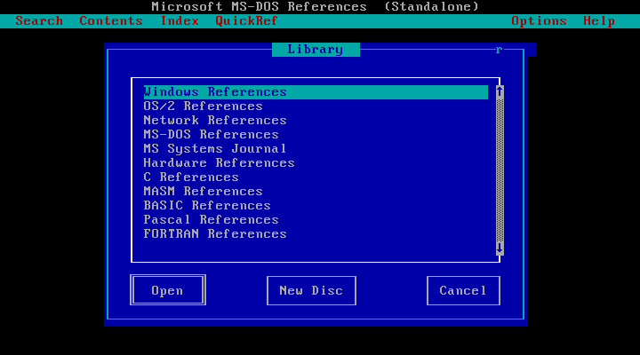
JavaScript 语言的作者 Brendan Eich 也许永远也不会想到，今天的 JavaScript 会成为互联网第一大语言，有数以百万计的用户因为它谋得工作和福利。作为一个用户之一，不得不见识一下他的当年用不到半个月设计出来的脚本解析器的思路是如何借鉴其它语言的：
+ 借鉴 C 语言的基本语法；
+ 借鉴 Java 语言的数据类型和内存管理；
+ 借鉴 Scheme 语言，将函数提升到一等 first class 的地位；
+ 借鉴 Self 语言，使用基于原型 prototype 的继承机制。
所以，JavaScript 语言实际上是多种语言风格的混合产物，简化的函数式编程，简化的面向对象编程。在 JavaScript 中，函数只是又一个对象类型，可以像任何其它元素一样传递，可以绑定到变量上。原型扩展的威力让 JavaScript 变得超级灵活，引发了很多自有对象模型库的开发者的出现，如 jQuery 的作者 John Resig，同时也是 Pro JavaScript Techniques 的作者。参考材料 JavaScript 简史：JavaScript 的过去、现在和未来，推荐学习教材 Professional JavaScript for Web Developers by Nicholas C.Zakas，JavaScript: The Definitive Guide, 5th Edition By David Flanagan，还有 Microsoft JScript 5.6 也是不错的参考材料，点击链接进入网盘找 script56.chm，这是 MSDN 中的一份文档包含了 Windows 平台的脚本宿主编程资料，有 VBScript 和 JScript，后者和 JavaScript 都是同类脚本也都符合 ECMAScript 标准。以上资料使用的规范都是较早期的，新的规范如 ES6 有许多补充内容，可以参考最新的文档。
1990年，Tim Berners-Lee 和 Robert Cailliau 共同发明了Web，1994年，Web真正走出实验室，用来控制 HTML 标签显示效果的级联样式表 CSS 雏形也渐渐显露。显然当时的 CSS 能做到的效果远不及以盒式模式 CSS box model 为标准的 CSS2，更不必说最新的具有编程能力的 CSS3。如果用餐桌的东西比喻 HTML、CSS、JavaScript 三个基本前端元素，HTML 就像饭碗，CSS 就是碗里的菜，而 JavaScript 就是筷子。CSS 作为极其简单的易学的一个环节，它又是最难做好部分，因为各家浏览器的技术规范不一致是长期的大问题，我毕业开始工作那几年还在做 Internet Explorer 6 的兼容，所有人都知道它的兼容问题就是个无底的坑。从 Web 开始流行到现在，JavaScript 很多基本的东西都没有改变。但 CSS 却从最初的 1.0 到现在普及的 3.0，极大地提升了通过 CSS 实现图形设计的能力，夸张点说，CSS3 就像是个图形处理程序。通过 CSS3 的 gradient 渐变图像、transform 空间变换能力和 animation 动画能力几乎可以模拟出来 3D 的世界，所以现在的样式表是可以称之为样式表语言的。
软件技术进化
从 Web 流行开始，JavaScript 基本没有什么大的变化，在 Web 发展过程中，出现过 ActiveX、Applet 这些没有大量流行的客户端技术。直到 HTML5 这场大变革的到来，各大浏览器的 JavaScript 解析器有了长足的变化，特别是 Google V8 引擎的开源，性能与生产力得到极大的提升。2016 年推出的 ES6 规范带来许多语法上的更新，新语法下的代码变得更简洁了，还有内置对象方法的补充等。
例如新的箭头函数表达式简化了匿名函数的定义，下面使用一段代码来比对旧语法和新语法的差别。旧语法中通过一个匿名函数的访问数据成员 name，由于作用域的关系，实例化时 OO()是构造函数不而是一般所指的函数，此时它具有类实例的专有作用域，所以通过内嵌函数不能访问到成员，除非将 OO()作为一般函数调用，这时就可以通过函数作用域的传递作用访问到 name。为了在 OO 实例中使用函数来访问成员，那么就需要将 this 引用复制一个副本，用副本来避免匿名函数内 this 引用到函数作用域对象。在 ES6 中，通过箭头函数自动实现这个转换代码。原本需要手写的代码，通过新引入的语法解决了，但实质代码是没有发生变化的，这种现象被称为语法糖 Syntactic sugar，也译为糖衣语法，是由英国计算机科学家彼得·约翰·兰达 Peter J. Landin 发明的一个术语。
function OO(){ // Traditionally
this.name = "[Object Oriented]";
let ctx = this;
this.tip = (function(){ return this.name; })(); // ctx.name
console.log(this.tip);
}
new OO();
function OO(){ // ECMAScript 2016
this.name = "[Object Oriented]";
this.tip = (()=>this.name)();
console.log(this.tip);
}
new OO();
ES6 新特性还包括直观的 OOP 语法，引入了 Class 类这个概念作为对象的模板，新的 Class 语法让对象原型的写法更加清晰、更接近面向对象编程习惯，避免传统 JavaScript 中 function 既是函数又是类的模糊与混淆。Class 之间可以通过 extends 关键字实现继承，这比原型链继承要清晰和方便很多。以下 ES6 语法代码可以粘贴到 Babel Repl 交互式解释器查看转译后的 JavaScript 代码。
class Base {
constructor(...args) {
console.log("Base...");
}
}
class Derived extends Base {
constructor(...args) {
console.log("Derived...");
super(...args);
}
}
let a = new Derived()
其它新特性可以参考 学习 ES2015、ECMAScript 6入门、Overview of ECMAScript 6 features。
JavaScript 作为一个非常流行的脚本语言，随着计算机硬件性能和编译器生产力的的提升，它在移动端开发慢慢突出简单易用的优势。以往需要使用 Java 开发的 APP 也可以直接使用 JavaScript 来开发了，语言工具能力和软件开发思维水平的提升，促使软件开发技术的不断进步，从最开始 Web 网页的零散脚本，包括 DreamWaver、Visual InterDev、FrontPage 等，到类库化脚本工具包或脚本框架，如 jQuery，再到现在的 Vue、React、Rax、Angular 等等。还有多端统一的开发方式，ReactNative、Uni-App、Weex 等，通过内建一套转译系统，可以将一套代码发布为 Web 应用、Android 应用，还有像微信小程序这样的新概念即时微应用。它们都有一个共通点，就是定义自己的系统框架，通过实现自己的编译器 Compiler，准确地讲是转译器 Transpiler，转译成符合目标平台的应用程序。这种以不变应万变的现象使得 JavaScript 受到前所未有的关注，多平台开发能力直接为开发者带来更多的机遇。
Rax 是一个完全兼容 React API 的跨容器的渲染引擎，是阿里巴巴自主开发为自家业务服务的，现在已经开源。Weex 则集成了 Rax、Vue 作为默认的视图渲染引擎，并且以 Rax 为主导，参考Rax 系列教程 native 扫盲，此外阿里系还做了一个叫做飞冰 Iceworks 的前端 UI 模板库，支持 React 和 Redux，后者是 JavaScript 状态容器，提供可预测化的状态管理。Vuex 是吸收了 Redux 的经验并且进行了调整，对状态数据仓库的管理更加明确。
React 是 Facebook 开发服务于自家产品的 UI 框架，经过长时间考验的一个优秀产品，强大的基于组件化的设计思想是当前的主流开发技术，基于组件实现提出的 JSX 是非常实用的技术规范，参考 JSX 简介、JSX In Depth、Thinking in React 。通过 JSX 语法的引入，React 的组件开发变得极具诱惑，优美的 JavaScrip + XML 语法结构让人看着代码都有一种舒服感。当然 JSX 是可选项，不使用 JSX 语法也能用纯 JavaScript 开发 React 组件。
以下是直接引入 React 原代码的方式运行，也使用了 Babel 对 JSX 进行转译，以下运行方式只用于开发过程，不能在生产中使用。这是因为 React 本身体积就不小，未压缩版本有 800kb 不止，而更严重的是引用 Babel-Standalone，即使是压缩版也超过了 1MB，加载完到执行 JSX 解析这个时间是无法接受的。通常使用 Create a New React App 指定的工具包来开发。React 官方博客发布声明，其自身用于 JSX 语法解析的编译器 JSTransform 已经过期不再维护，React JS 和 React Native 已经全部采用第三方 Babel 的 JSX 编译器实现。原因是两者在功能上已经完全重复，而 Babel 作为专门的 JavaScript 语法编译工具，提供了更为强大的功能，browser.js 是 babel 编译器的浏览器版本。
以下示例来自 React 官方网站文档，展示了如何在 HTML 页面中使用 JSX 语法来编程：
<!DOCTYPE html>
<html>
<head>
<meta charset="UTF-8" />
<title>Hello World</title>
<!-- Note: when deploying, replace "development.js" with "production.min.js". -->
<script src="https://unpkg.com/react@16/umd/react.production.min.js"></script>
<script src="https://unpkg.com/react-dom@16/umd/react-dom.production.min.js"></script>
<!-- Don't use this in production: -->
<script src="https://unpkg.com/babel-standalone@6.15.0/babel.min.js"></script>
</head>
<body>
<div id="root"></div>
<script type="text/babel">
ReactDOM.render(<h1>Hello, world!</h1>, document.getElementById('root') );
</script>
</body>
</html>
Babel 这个工具链，主要用于在旧浏览器或环境中将 ECMAScript 2015+ 代码转换成向后兼容的 JavaScript 代码，同时它也能对 JSX 进行编译。 Babel 使用了 Polyfills，这个模块用来扩展过时浏览器的能力，使用旧浏览器更可能多地支持 HTML5 特性。有关编译器的精彩教程，请查看超级微型编译器，the Super Tiny Compiler 它能解释 Babel 如何在高级语言上工作。抽象语法树浏览器 AST Explorer 这个工具也很不错，能帮助理解编译原理中语法树结构。
说到编译原理这里，顺带提示一下 TCC - Tiny C Compiler 这个开源的小型 C 语言编译器，小到只有约100K，可以编译所有 C99 标准的 ANSI C 程序，支持 X86、ARM 架构 CPU，支持 Windows、Linux、OSx 跨平台，TCC 是由 FFMpeg 的作者法布里斯·贝拉 Fabrice Bellard 开发的。
另外，Flutter 是 Google 用以帮助开发者在 iOS 和 Android 两个平台开发高质量原生 UI 的移动 SDK。Flutter 使用 Dart 语言开发，兼容现有的代码，免费并且开源。Flutter 运行在 C/C++ 编写的 Flutter Engine 虚拟机上，具有低延迟输入和高帧速率的特点，开发人员只需要通过 Flutter 框架和 API 在内部进行交互，不必考虑平台差异。综合来看，Flutter 似乎有更可靠的性能，及更强大的表现力。
互联网基建
前端应用建立在以网络通信为基础的互联网之上，它也涉及了各种通信协议，关系最直接的协议就有 HTTP、HTTPS 和 WebScoket 协议。在计算网络发展早期，国际标准化组织 ISO 和国际电信联盟 ITU 的前身即国际电报电话咨询委员会 CCITT 共同制订了开放系统互联的七层参考模型 OSI。HTTP 协议就归属最高层 Application 应用层。日常使用的互联网其实真是个超级工程，基于一整套通信网络硬件系统，一整套系统底层协议如 TCP/IP，还有域名系统 DNS 等。计算机的世界是以 IP 地址来定位的，浏览器的地址栏输入的字符串通常表达的是域名地址，并不能直接出连接到目标主机上。这个域名首先会报送给本地路由器指定的域名服务器，域名信息进入域名系统就开始进入解析程序最后将关联的 IP 地址返回，通过 IP 就可以连接到目标主机并进行通信。而目标主机在接受到连接请求，这个域名信息是可以获取到的。通过将多个域名绑定到同一个 IP 地址上，同一台主机就可以为多个域名提供服务。这就是 Apache、Nginx 这类 Web 服务器提供多个网站服务的基本原理。
域名系统是个树状结构，最底服务器如果找不到相应的域名，即解析域名失败时会向上一级服务器寻求解析结果。在 IPv4 时代即 IP 地址用 4 个字节表示，全球只有 13 台 DNS 根服务器，1 个为主根服务器，放置在美国。其余 12 个均为辅根服务器，其中 9 个放置在美国，欧洲位于英国和瑞典各 1 个，亚洲位于日本有 1 个。在现代的操作系统上，DNS 配置这个过程对用户来说是透明，用户不用关心 DNS 的工作原理，配置工作会自动进行，当然 DNS 工作不正常时就需要专业知识去解决问题了，互联网的硬件及底层协议需要学习其它学科的内容，这里交待一些关于 IP 地址知识。
IP 地址全称 Internet Protocol Address，现在常用的 IP 地址是 4 个字节 32-bit 构成的，用十进制加点分隔格式表示如 127.0.0.1，最多可以表示四十多个亿独立地址。在 Windows 系统下，可以使用命令 ipconfig 查看当前主机的 IP 信息，还有 tracert 命令可以追踪经过的路由信息：
Wireless LAN adapter 本地连接* 2:
Media State . . . . . . . . . . . : Media disconnected
Connection-specific DNS Suffix . :
Wireless LAN adapter WLAN:
Connection-specific DNS Suffix . :
Link-local IPv6 Address . . . . . : fe80::dc25:7498:df57:4ddf%5
IPv4 Address. . . . . . . . . . . : 192.168.5.18
Subnet Mask . . . . . . . . . . . : 255.255.255.0
Default Gateway . . . . . . . . . : 192.168.5.1
信息中显示 IPv4 Address 后的就是当前主机的 IP 地址，后面还一个子网掩码 Subnet Mask 也是和 IP 地址一样使用 32-bit 表示的值。IP 规范编址方案中，将 IP 地址划分为 A、B、C、D、E 五类空间，其中 A、B、C 是基本类，D、E 类作为多播和保留使用的特殊地址。互联网上的IP地址统一由互联网名称与数字地址分配机构 ICANN 来管理，各地址的分配权又下派到分支机构，亚太互联网络信息中心 APNIC 负责亚太地区，欧洲互联网络信息中心 ENIC 负责欧洲地区，国际互联网络信息中心 InterNIC 负责美国及其他地区。
互联网的基础协议，即 TCP/IP 协议需要针对不同的网络进行不同的设置，且每个节点需要一个 IP 地址和一个默认网关 IP 地址，简称网关地址，通常是路由器的地址。所谓网关 Gateway 又称网间连接器、协议转换器。路由器是一个硬件，一般网关会设置在路由器上，一个局域网会设置一个网关，供一个网段访问，可以简单理解为一个网络与另一个网络进行通讯的交接节点。这些相关的配置会由系统通过动态主机配置协议 DHCP 自动完成，客户端会自动分配到一个 IP 地址，DHCP 大大简化了 TCP/IP 协议的设置，普通用户也能在无感知的状态下通过 TCP/IP 获取互联网的各种服务。
首字节范围 网络号 最大网络数 IP地址范围 主机号 最大主机数 私有IP地址范围
A 00000001 - 01111111 7bit 126 1.0.0.0 -127.255.255.255 24bit 16777214 10.0.0.0 -10.255.255.255
B 10000000 - 10111111 14bit 16384 128.0.0.0-191.255.255.255 16bit 65534 172.16.0.0 -172.31.255.255
C 11000000 - 11011111 21bit 2097152 192.0.0.0-223.255.255.255 8bit 254 192.168.0.0-192.168.255.255
D 11100000 - 11101111 ----- ------ 224.0.0.0-239.255.255.255 组播地址历史上又被叫做多播地址 multicast address
E 11110000 - 11110111 ----- ------ 240.0.0.0-255.255.255.255
每个 IP 地址由网络号和主机号两部分构成，这就是两级 IP 地址结构，而在实际应用中 IP 地址被分成三级，即附加了一个子网号，而子网掩码的作用就是用来计算子网号用的。
二进制的子网掩码是一连串的 1 和 一连串的 0 组成的，将 IP 地址与掩码进行位与运算即可以得到网络号，简单地说，就是 IP 地址中与掩码中 1 对应的位都是网络号的部分，与 0 对应的部分都是主机号的部分，具体运算方法可以参考后面编程常识部分。A、B、C 类地址的子网掩码对应为 255.0.0.0、255.255.0.0、255.255.255.0。
从两级IP地址到三级的IP地址的理由有几个，IP 地址空间的利用率有时很低，单独给每一个物理网络分配一个网络号会使路由表变得太大不好管理，网络性能也会变坏。假设一个拥有许多物理网络的单位，对外部网络来看，这个单位对外仍然表现为一个网络。通过将网络的主机号中若干位作为子网号，使用两级 IP 地址在本单位内部就变成了三级 IP 地址，即包含网络号、子网号和主机号三个信息。外部网络发送给本单位某个主机的IP数据报，仍然是根据原先二级 IP 地址送达的，即通过 IP 数据报内指明的目的网络号找到连接在本单位网络上的路由器，收到 IP 数据报的路由器再按目的网络号和子网号找到目的子网，将数据交付给目的主机。子网划分只是把 IP 地址的主机号这部分进行再划分，而不改变 IP 地址原来的网络号，原有的两级 IP 地址结构保持不变。
在局域网中，有两个特殊 IP 地址不能用作主机 IP 地址使用。一个是网络号 Net-ID，是网段中的第一个地址，即主机号为 0 的地址，用于三层交换技术的地址，它代表了整个网络本身；另一个是广播地址 Broadcast Address，是网段中的最后一个地址，它意味连通网段全部主机，往广播地址发送的数据全网主机都可以接收，就像无线电广播。三层交换技术就是用于解决三分级 IP 地址的二层交换技术加三层转发技术。
公有地址 Public address 由 InterNIC 负责管理，这些IP地址分配给向 InterNIC 提出注册申请的组织机构，通过它直接访问因特网。私有地址 Private address 属于非注册地址，供组织机构内部使用。日常使用的局域网地址一般都是在留用的私有地址的范围内，局域网和外网交互是通过互联网运营商分配给我们的动态公有IP地址。一般一个局域网分配一个公有 IP，局域网内的所有主机通过路由器或其他设备上的映射机制访问外网。例如在常用的 192.168.0.0 这样的局域网段中，通过掩码可以计算出网络号，以及本机所处的网段中最多可以设置 254 台主机，通过百度搜索 IP 地址 可以知道当前局域网分配到的动态公网 IP 地址是广东省深圳市电信归属的 119.123.133.199。
- 主机地址 192.168.5.18
- 子网掩码 255.255.255.0
- 主机号是 0.0.0.18
- 网络号是 192.168.5.0
- 广播地址 192.168.5.255
因特网标准协议的 RFC950 文档，规定子网号不能为全 1 或全 0，但随着无分类域间路由 CIDR 的广泛使用，这种限制就不存在了。CIDR 消除了传统的分类地址以及划分子网的概念，因而可以更加有效地分配 IPv4 的地址空间，在新的 IPv6 使用之前容许因特网的规模继续增长。把 IP 地址划分为两个部分，前面的部分是网络前缀用来指明网络，后面的部分则用来指明主机。因此 CIDR 使 IP 地址从三级编址又回到了两级编址，但这是无分类的两级编址。CIDR 使用斜线记法或称为 CIDR 记法，即在IP地址后面加上斜线，跟着是网络前缀所占的位数，相当于二进制掩码中 1 的个数。
特殊的地址
- 0.0.0.0 当前主机地址
- 0.x.x.x 地址的第一个字节也不能为 0，它表示本地网络。
- 255.255.255.255 当前子网的广播地址
- 240.x.x.x 以 240 即二进制 11110000 开头的 E 类地址都保留用于将来和实验使用。
- 127.0.0.1 - 127.255.255.255 以 127 即二进制 01111111 开头的地址用于回路测试，如：127.0.0.1可以代表本机IP地址
根据以上的地址规则，就可以知道用 http://127.0.0.1 来测试当前主机配置的 Web 服务器。
HTTP 协议作为直接与 Web 互联网关联的基础协议，它指导了客户机与服务器，简单地说就是浏览器与 Web 服务器间的数据传输，浏览器收到输入的域名地址就会连接到 Web 服务器上，这个过程向服务器发送的数据就是请求数据包，里面包含主机域名信息请求的 URL 路径，浏览器版本信息，请求方式 GET、POST 等，以及数据包附加数据等等。Web 服务器接收到连接后，对数据包进行解析并且交给 Web 服务程序进行下一步处理，最后结果返回到浏览器，由浏览器作最后的处理，如显示页面内容，或给出相应的错误信息如服务器故障或不能访问的情况下。整个过程中，涉及了客户机和服务器主机，把服务器部分的称为后端，把浏览器部分称为前端。更多的 HTTP 协议内容参考HTTP协议入门与Fiddler抓包、Hypertext Transfer Protocol 1.1。
开发一个假服务器
Web 应用在前端显示出来的内容其实还是在后端生成的，前端主要以 JavaScript 脚本为编程语言，后端则选择更多，可以使用 C、C++、Java、C#、PHP、Python、Ruby、VB 等等，没有特别限制，需要结合实际环境选择。甚至到 Node.js 发布的时候，JavaScript 也成了服务器端的开发语言。下面就以 Node.js 来编写一个程序展示 Web 服务器是如何工作，当然这只是展示基本原理，在生产环境下的 Web 服务器是个复杂的软件，要具有很高的安全及性能方面的要求。如何使用 http 模块来编写自己的 Web 服务器请参考官方文档 Node.js HTTP。
服务器实现代码
下载安装好 Node.js 后，将以下代码保存到 Node.js 安装目录的 server.js 文件并执行命令 node.exe server.js 即可以运行示例服务器：
const http = require("http");
// Create an demo web server
const webServer = http.createServer((req,res)=>{
res.writeHead("200",{
"Content-Type":"text/html",
"Server":"c-daystep Demo 0.1"
});
console.log("Incoming message ",req.method, req.url);
if( req.url=="/close" ) webServer.close();
res.write(`
<!DOCTYPE html>
<html>
<body style="font-size:36px;">
<h1 id="header" onclick="setFont(event)">
为节省空间，页面骨架内容放在后面 Web 页面结构分析部分
</h1>
</body>
</html>
`);
res.end();
});
// Event handlle
webServer.on("error", (err)=>{
let file = arguments[3];
console.log("Error", err.code, err.message, file);
});
webServer.on('clientError', (err, socket) => {
socket.end('HTTP/1.1 400 Bad Request\r\n\r\n');
});
webServer.on("connection", (socket)=>{
let client = [socket.remoteAddress, socket.remotePort].join(":");
console.log("connection...", socket.address(), client);
});
webServer.listen(8080, '127.0.0.1',()=>console.log("Web Sever listnning... http://127.0.0.1:8080"));
执行以上程序，然后使用浏览器访问 http://127.0.0.1:8080 出现的页面看起来应该像以下图片的效果，如果使用 Chrome 或 Firefox 浏览器，可以通过快捷键 F12 查看开发者工具视图，了解服务器输出的内容。程序首先通过 require 引用 Node 的 HTTP 模块，然后通过 createServer() 创建一个 Server 对象，参数传入一个回调函数，在每次有客户端接入时都会执行这个回调函数，函数体内加了一个条件判断 req.url=="/close" 来执行服务器的关闭动作，所以在浏览器请求 http://127.0.0.1:8080/close 这个地址时，服务器输出内容后就会关闭。res.writeHead() 方法向客户端输出 HTTP 协议头信息，200 是 HTTP 状态码表示工作正常。res.write() 方法输出 HTTP 协议中数据，也就是浏览器显示出来的部分。这里使用的是反引号 ` ` 来包括多行的字符，反引号是 ES6 的语法规范方便处理这种多行字符串。webServer.on() 用来监听事件，这里展示了 error、clientError、connection 三个事件的响应，它们分别会在服务器端脚本出错时、客户端的突发错误时、服务器客户建立连接时触发。
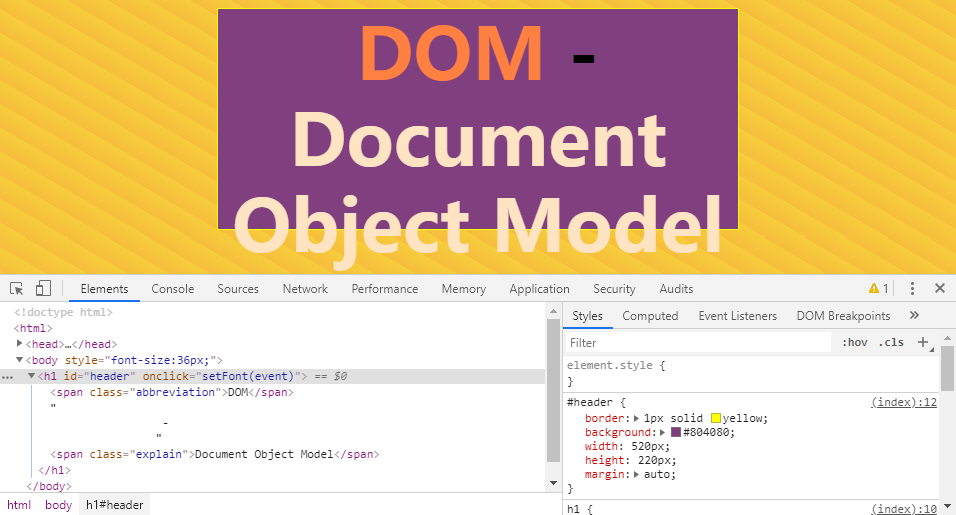
Web 页面结构分析
Web 服务器输出的 HTML 也是一个结构完整的前端应用骨架展示，由 HTML、CSS、JavaScript 三大部分组成，HTML 标签 <!DOCTYPE html> 是约定的用法，用来告诉浏览器，我要使用 HTML 5 规范来实现 Web 应用。每个页面的顶级标签都是 <html>，其实下属有 <head> 和 <body> 两大部分，前者主要用来设置一些附加功能标签，如样式文件 theme.css 引入，页面使用的编码方案 UFT-8，还有网页的标题 <title> 等等。现在的浏览器基本都支持网站打开时，相应显示一个 favicon 图标，即使用页面不使用 shortcut 来指定，浏览器也会尝试去网站根目录下获取这个图标文件。body 部分则用来编写渲染页面的 HTML 标签，如例中的 h1 即一级标题标签，类似的有 h2 到 h6 六级标题。 span 则属于自由格式标签，没有特别定义的页面行为，以行内 inline 方式显示。HTML 定义了大量的标签，但常用的不多，如区块标签 div、超链接标签 a、文本段落标签 p，还有一些表单控制，如集文本输入、单选按钮、多选按钮、密码输入于一身的 input，及多选文本编辑控件 textarea 等。
<!DOCTYPE html>
<html>
<head>
<meta charset="utf-8">
<title>html-css-js-demo</title>
<link rel="shortcut icon" href="myfavorite.png">
<link rel="stylesheet" href="theme.css">
<style>
body { background:repeating-linear-gradient(30deg, #f6bd3c 2%, #f6cd3c 5%); }
h1 { line-height: 1.2em; text-align: center; }
.explain { color: bisque; }
#header { border:1px solid yellow; background:#804080; width:520px; height:220px; margin:auto; }
#header .abbreviation { color: #ff8040; }
</style>
<script src="main.js"></script>
<script>
function setFont(event){
// var her = document.getElementById("header");
var her = event.currentTarget;
her.style.fontSize = Math.round(Math.random()*50+50)+'px';
}
</script>
</head>
<body style="font-size:36px;">
<h1 id="header" onclick="setFont(event)">
<span class="abbreviation">DOM</span>
-
<span class="explain">Document Object Model</span>
</h1>
</body>
</html>
浏览器完成 HTML 标签解析，会相应加载需要加载的其它文件，这里除了外部样式文件 theme.css 还要加载外部脚本文件 main.js，当然它们在服务器上都是不存的，这里主要目的是展示如何加载外部样式文件和脚本文件。即使用存在也读取不到，因为这个 Demo Server 根本就没有对浏览器地文件请求进行处理，只是输出一个默认的页面。读取样式文件后，根据样式定义，浏览开始渲染 HTML 标签，按指定的样式定义将 HTML 的各种元素画出来。然后，读取到的脚本交由浏览器内置的脚本解析器运行，并在页面中响应脚本的功能。如在这个列子中，点击 <h1> 标题会改变标题的字号为一个随机值。样式和脚本使用的方式都有三种基本形式，一是通过引入外部文件，二是页面中使用样式块、脚本块，三是在 HTML 标签上设置 inline 内联样式，或设置标签的事件处理方法，如例中的 onclick 这个表示单击事件处理器，脚本还具有修改 DOM 对象样式的能力。
样式表 <style> 中展示了 CSS 的三种基本基本使用规则，样式表的使用有二个基本内容，一是样式定义，即花括号中的样式属性定义内容。二是选择器 Selector，即花括号前的字符串。选择器字面意思就是选中 HTML 标签的匹配规则，有三种基本方式，像 body 和 h1 这种称为标签名选择器，表示选中 HTML 页面中的这种标签进行样式定义。第二种是 ID 选择器，即 #header 这种前面加升调号 # 的表达方式，表示选择 HTML 页面中 id 属性相匹配的标签进行样式设置，这里就匹配到一个一级标题，通常标签的 id 只设置唯一值，不能重复，因为 document.getElementById() 方法是通过 id 属性来获取唯一标签节点的。第三种是类选择器，即以点号开头的 .explain 这种表达，它会选择所有 class 属性相匹配的 HTML 标签。
这些规则可以串联即多个选择器用空格分隔组成串联选择器，如 #header .abbreviation 这个串联系选择器，它只匹配 id="header" 标签下类属性为 class="abbreviation" 的标签，即例中一级标题内的 <span class="abbreviation">DOM</span> 这个标签，一级标题外出现的类属性为 class="abbreviation" 的标签则不会匹配到。多组选择器可以并联即使用逗号分隔，如 h1, .explain 两个选择器并联，表示 h1、.explain 这两个选择器匹配到的标签使用同一套样式设置。 选择器的串联和并联可以由任意多个选择器组成，串联选择器也可以并联，同时选择器是有优先级的，串联个数越多级别越高，单个 ID 选择器、类选择器、标签选择器优先级别依次降低，两个优先级别不同的选择器对一个标签设置同一个样式属性时，优先级别高的选择器有效，但低优先级的选择器中可以使用 !important 关键字来指导浏览器优先使用。最后，如果在标签的 style 设置了内联样式，其它同一样式属性设置将被内联模式覆盖，内联样式有最高优级级。现代的 CSS3 可以作为一种编程语言来看待，拥有许多特异功能，详细规则参考 CSS reference。
h1 { line-height: 1.2em; text-align: center; }
#header { border:1px solid yellow; }
.explain { color: bisque; }
#header .abbreviation { color: #ff8040; }
h1, .explain { color: bisque; }
.abbreviation { color: #ff8040 !important; }
CSS 样式单位
CSS 中使用的物理量主要有颜色和尺度两类，颜色用于设置字体颜色 color 和背景色包括渐变色 background 等待，使用的色彩模型是 RGB 加色模型，通过红 Red、绿 Green、蓝 Blue 三个颜色分量的叠加得到各式各样的颜色。每个分量取值 【0，255】，用十六进制表示，如 #ff0000 表示亮红色，可以简写为 #f00，也可以用十进制表示，如草绿色 rgb(0,72,0)，或者百分比的方式 rgb(0%, 24%, 0%)，总共可以表达一千六百多万种色彩，还可以加上 Alpha 透明通道，用 [0,1] 表示透明度，如 rgba(0,72,0,0.5)、rgba(0%,23%,0%,0.5)。
现代浏览器还支持其它色彩模型，如 HSLA 圆柱模型，用圆柱的圆周 [0°,360°] 表示色调 Hue，0°、120°、240° 分别表示红、绿、蓝色。用柱芯到圆周的距离 [0.0%,100%] 表示饱和度 Saturation，饱和度越高色彩越纯视觉上越鲜艳。用圆柱高 [0.0%,100%] 表示亮度 Lightness，越高越接近白色，同样还有 Alpha 透明通道，hsl(120, 100%, 13%)、hsla(120, 100%, 13%, 0.8)。
样式内置了色彩关键字 Color Keywords，一些常用已命名的颜色可以直接使用色彩名称，如 cornsilk 玉米丝色、firebrick 红砖色、floralwhite 花白色、maroon 褐色。在工业上彩色模型远不止这两种，如印染工业常用的是 CMYK 减色模型，使用 Cyan, Magenta, Yellow 三原色，附加还有白色，通过印油的增加颜色慢慢变暗至黑色。
另一个物理量是尺度，可以用来设置字体大小，标签尺寸等，使用单位有多种，百分比 % 也适用于尺度，如占满窗口高度 height:100%;，在 CSS3 中可以使用 calc 函数对尺度进行计算，支持四则运算，如 calc(2em*2)：
em CSS1 尺度单位 em，相对单位，1em 等于当前对象内文本的字体尺寸
ex CSS1 尺度单位 ex ，相对于字符 x 的高度，这个尺度通常为字体高度的一半
cm CSS1 尺度单位厘米 cm
mm CSS1 尺度单位毫米 mm
pt CSS1 尺度单位 pt(点)
pc CSS1 尺度单位派卡 pc点活字 (1 pc 等于 12 点)
px CSS1 尺度单位屏幕像素 px
in CSS2 尺度单位英寸 in
ch CSS3 尺度单位 ch ，通常是数字 0 的宽度
rem CSS3 尺度单位 rem ，相对于根元素即 html 元素的 font-size 计算值的倍数
vw CSS3 尺度单位 vw，相对于视口的宽度。视口被均分为100单位的vw
vh CSS3 尺度单位 vh ，相对于视口的高度。视口被均分为100单位的vh
vm CSS3 尺度单位 vm ，对于视口的宽度或高度，总是相对于小的那个。视口的宽度或高度被均分为100单位的vm
vmin CSS3 vw和vh中较小的那个。
vmax CSS3 vw和vh中较大的那个。
其它的物理量如用于动画的时间单位 s、ms 表示秒和毫秒，角度单位有圈 turn、弧度 rad、梯度 grad、度 deg。频度单位有赫兹 Hz、千赫 KHz。
这小节内容通过几十行示例代码展示了一个服务器客户端双层程序结构的骨架，运行原理如此，但在生产环境下不会这样简单。作为入门课，只能介绍基本原理部分，其它基础学习材料可以参考 菜鸟 CSS 教程、菜鸟 HTML 教程，JavaScript 可以参考 MDN JavaScript、 或后面的 30’ JavaScript 入门课，注意不同的 JavaScript 解析器实现有所差异，应该尽量避免兼容性差的特性。
30’ JavaScript 入门课
这是一节关于编程入门的内容，如果可以用 30 分钟入门 JavaScript 编程，不要求做到多细致的前提下应该是有可能的。对于新手，可以参考后续关于 Editplus 配置的内容设置好 JavaScript 开发环境，当然如果想用更好的工具，可以参考 Sublime 或 VS Code 的配置。配置好开发工具，接下来就一起带着工具，边写边执行的方式来学习 4 个小节的学习任务，此入门课中关于内置对象方法部分的内容作用参考。
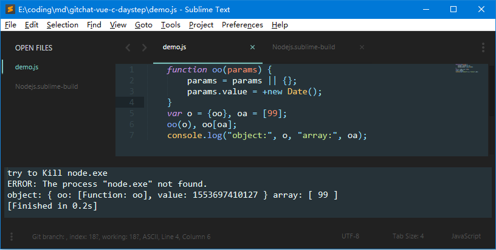
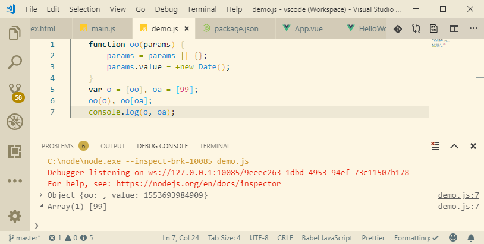
编程常识
在计算机的世界里，一切都是电子开关状态切换过程中电流的状态变化，CPU 的指令是一连串的开关状态按规律组织，存储器中的数据也是一连串的开关状态，把电子开关两个状态抽象成数值 0 和 1 就是程序的根源，0、1 这两种状态所表示信息就称之为比特 bit。类似现实世界，人类有十个手指，以十进位自然计数法 Decimal 并不是一种偶然。计算机的二进位 Binary 计数法也就是电子开关两种状态的必然结果。不同计数法，数字符号所在的位置不同，数值就不同，十位以 1 当 10，百位以 1 当 100，千位以 1 当 1000，这些对应位置的 10、100、1000 就是权值，个位数的权值就是 1。以 8 个二进位的数值为例，从左到右，每一位数字的权值依次为 128、64、32、16、8、4、2、1。当然为了方便表达，十六进位 HexaDecimal 被设计出来以更短的方式呈现二进位数值，[0,9] 这些数不够用来表示十六种状态，因而又引入了 A、B、C、D、E、F 五个字符表达 10、11、12、13、14、15。通过数学工具，可以很容易将十进位的 15 记作 0d15 转换为二进制的 1111 记作 0b1111，或者十六进制 F 记作 0x0F。除此外，还有八进位 Octal，64 进位即 Base 64 编码等等计数或编码方式，其数学意义都是同样的模式，即以权值来标识符号的数值大小。
16进位权值 4096 256 16 1
16进位数值 F
十进位权值 1000 100 10 1
十进位数值 1 5
二进位权值 8 4 2 1
二进位数值 1 1 1 1
得益于数字逻辑电路机构，逻辑理论可以完全用电路开关来表达，如 A、B 两开关串联，只有它们同样闭合状态下，电流才能流通，逻辑抽象为与运算，任意一个开关断开，逻辑与运算结果都是 false。又如 A、B 并联，只要其中一个闭合，电流就能流通，这就抽象为逻辑或运算，只有它们同样断开，逻辑或的运算结果才是 false。半导体电路中有两种很重要的元件，二极管 Diode 和三极管 Tri-diode。二极管具有单向导通特性，电压反向会关闭电流不能流通，只有在正向电压时电流才能流通，这种特性使得它成为逻辑电路中最简单的开关。三极管具有放大效应，在它的基极上设置特定的电压可以控制三极管的导通和关闭，所以能用三极管来做逻辑非门电路。
晶体管电路还能完成四则运算，计算机体系内拥有数以千万的晶体管集成电路，基于这样复杂的电路之上，CPU 才拥有似乎无限的运算潜力。程序开发中使用运算符号来表达数学关系，其背后其实是控制数字电路的开关状态。
数据操作与运算
和所有编程语言一样运算与逻辑表达能力是最基本的程序元素，程序始终是离不开对数据的运算的。可以分为比特位运算 Bitwise Operators、算术运算 Computational Operators、逻辑运算 Logical Operators 三基本运算。
比特位运算 Bitwise Operators
比特位运算有以下几种
Bitwise OR | 逻辑或
Bitwise NOT ~ 逻辑非
Bitwise AND & 逻辑与
Bitwise Exclusive OR ^ 逻辑异或
Bitwise Left Shift << 逻辑向高位移位
Bitwise Right Shift >> 逻辑向低位移位
Unsigned Right Shift >>> 逻辑右移位无符号位填充
举例:
~ 0x0101 = 0x1010 即按位反转状态；
0x1100 | 0x0101 = 0x1101 即把 1 留下，没 1 就取 0；
0x1100 & 0x0101 = 0x0100 即同位同为 1 留下 1，否则就取 0；
0x1100 ^ 0x0101 = 0x1001 即把同位相异为 1，就取 0；
移位操作也是容易理解的概念，把数值的二进位表达出来，向左、右移动就是在就是把所有的二进位同时向左、右移动指定的位置。
0x0100 >> 0x0001 = 0x0010 右移一位相当除 2；
0x0100 << 0x0001 = 0x1000 左移一位相当乘 2；
以上就是对移位操作最朴素的理解，但是这里还没讲到过一个特殊的记数问题，就是负数的补码记数法。在计算机内部，记录正整数是最简单的一种记录，只需要将数值按二进位直接存储即可以。但是负数却不能这样，计算机体系设计时就把数值分成整数 Integer 浮点数 Floating-Point 定点小数 Fixed-Point，还有对应的带符号 Signed 的符号整数和符号浮点数，所谓浮点数就是小数点位置不固定的数。通常是不需要对浮点数进行移位操作的，在不同的语言中，对浮点数的移位操作定义是不一样的，当然在 JavaScript 中可以对浮点数进行移位，只对整数部分也保留整数部分。
作为入门知识课，这里重点放在符号整数这部分，带符号整数在内存中的记数法是补码，即 two’s complement，把数值原始的二进位表示叫做原码，按位取反后叫做反码。在计算机电路设计上，为了简化电路，方便将符号位和数值域及加减乘法统一处理，对负数采用补码存储的方式，逻辑电路设计参考 Contemporary Logic Design Randy H. Katz。即负数存储的是其绝对值反码加一，字节 8-bit 可以表示的数值范围在 -128到+127，用二进制表示也就是 10000000 - 01111111。这种处理方案另一个好处就是最高可以自然地成为符号位，因为对于正数它总是为 0，对于负数它总是为 1，符号位在最高有效位也叫做 MSB，最低有效位则叫 LSB。
0 0000 0000 0000 0000
1 0000 0001 1111 1111
2 0000 0010 1111 1110
126 0111 1110 1000 0010
127 0111 1111 1000 0001
−128 1000 0000 1000 0000
−127 1000 0001 0111 1111
−126 1000 0010 0111 1110
−3 1111 1101 0000 0011
−2 1111 1110 0000 0010
−1 1111 1111 0000 0001
以 8-bit 数值 0b11110010 相乘 0b10001100，即 242 * 140 = 33880 = 0b 1000 0100 0101 1000：
1111 0010 = 242
1000 1100 = 140
---------------------------------
0001 1000 = 0010 * 1100
1011 0100 = 1111 * 1100
0001 0000 = 0010 * 1000
0111 1000 = 1111 * 1000
---------------------------------
1000 0100 0101 1000 = 33880
数的乘除，在电路上表现就是移位，乘 1 不移位，乘 2 向左称一位，除 2 向右移一位，多个数乘除时拆分计算就可以了。下面以 -2 乘 -1 或 -3 的运行解释为何对负数使用补码可以更有效的使用加减乘运算，注意负数乘法丢弃溢出部分：
1111 1110 = -2
1111 1111 = -1
---------------------------------
1101 0010 = 1110 * 1111
1110 0001 = 1111 * 1111
1101 0010 = 1110 * 1111
1110 0001 = 1111 * 1111
---------------------------------
1111 1101 0000 0010 = 0000 0010 = 2
1111 1110 = -2
1111 1101 = -3
---------------------------------
1011 0110 = 1110 * 1101
1100 0011 = 1111 * 1101
1101 0010 = 1110 * 1111
1110 0001 = 1111 * 1111
---------------------------------
1111 1011 0000 0110 = 0000 0110 = 6
在处理符号数向右移位操作时就要考虑符号位的处理了，一般右移操作 MSB 直接填充原有符号位值，而无符号右移操作直接填充 0，也即无符号位的填充。
console.log( (-1>>1).toString(2) );
console.log( (-1>>2).toString(2) );
console.log( (-1>>>16).toString(2) );
console.log( (-1>>>24).toString(2) );
所以知道 -1 的补码形式，对它进行右移操作结果总是 -1，而对它进行无符号右移结果就完全不一样了，JavaScript 中使用的是 32-bit 的整形，所以无符号右移位 24 位，结果就只剩下最高 8-bit 即 255。上面代码输出结果如下：
-1
-1
1111111111111111
11111111
逻辑运算 Logical Operators
逻辑运算符用来计算逻辑值，即真、假值，对应 true、false 关键字。 数值及其它任何数据都可以经过逻辑运算转换成逻辑值，如数值 0 或空字符串 “” 还有 undefined、null、NaN 等会默认转换成 false。
&& 与 Logical AND
|| 或 Logical OR
! 非 Logical NOT
< 小于 Less than
> 大于 Greater than
<= 不大于 Less than or equal to
>= 不小于 Greater than or equal to
== 相等 Equality
!= 不相等 Inequality
?: 三元操作 Conditional (ternary)
, 带号分隔 Comma
=== 严格等于 Strict Equality
!== 严格不等于 Strict Inequality
一般的逻辑运算只需要运用逻辑学原理计算即可以，如 1==1 为 true，1==2 为 false，false==false 为 true，false==true 为 false。
有隐含的逻辑运算需要说明的是 ""==0,"0"==0,"0"==false,"a"==0,"1"==1 等，会有字符串隐含地转换成数值的过程，这里除了 "a" 其它都可以成功转换成数值 0，所以只有 "a"==0 为 false。逗号在这就是分隔符号，圆括号内的逗号分隔列表中，只会将最后这个 "END" 赋值给 a。
let a = (""==0, "0"==0, "0"==false, "a"==0, "1"==1, "END");
console.log(a);
严格等于或严格不等于用来避免隐含的类型转换，如 "0"===0 结果为 false。
三元操作操作的基本语法结构是 C? A:B 判断 C 逻辑值为真则返回 A 否则返回 B 值。A 或 B 可以再嵌套其它表达式，如以下语句：
let c = 1;
let a = c? (c>1? "above 1":"<= 1"):"false";
算术运算 Computational Operators
算术运算基本是加减乘除四则运算，其中加减号可以作为正负号使用，并且在字符串前使用正负号会引起隐含的字符串转数值过程，如 +"01"、+"0x0f"、-"2"。
- 负号 Unary negation
+ 相加 Addition
- 相减 Subtraction
* 相乘 Multiplication
++ 自增 Increment
-- 自减 Decrement
/ 相除 Division
% 求模 Modulus arithmetic
自增自减用来简单表达式参考如下，注解部分为等价表达，最后结果 a 和 b 都是 100：
let a = 99, b = 0;
b = a ++; // b = a; a = a + 1;
a = ++ b; // b = b + 1; a = b;
console.log(a, b);
尽管前面讲到计算机的数值处理包含浮点等，JavaScript 中只有一种数值类型，它既用来表示整数也用来表示小数，也用来表示有符号数值，这些转换工作由 JavaScript 解析器自动完成了。写脚本时注意一下就可以避免写出有问题的代码，比如除法，两个整数 1/2 相除会产生小数，解析器会从整数切换到小数。如果只想处理整数，可以通过全局函数 parseInt() 转换。
求模运算不属于四则运算，求模式的概念用绳子长度来解答比较好理解。比如一段不知道长度的绳子，现在有有一把直尺，把绳子按尺子的长度折叠起来，直到最后多出来那一段，那一段的长度就是求模运算得数，如果最后那段刚好是尺子的长度则结果为 0。这里尺子注充当模的角色。假设尺长为 6，绳长为 15，用数值来表示就是 15 % 6 结果为 3。
加号除了作为算术运算符号，作为字符串连接功能使用，如 "App"+"le" 结果为 "Apple"。
程序流程控制
程序流程控制 Controlling Program Flow 是所有程序共通的概念，现实生活也是，比如说今天早会的程序，和计算机程序说的都是一个概念，即先做什么再做什么的顺序安排。会议程序的控制是与会人的计划安排，而软件程序流程的安排则是通过条件指令来实现的，在计算机硬件体系，逻辑电路最基本的功能就是做逻辑判断还有指令的跳转。不必像指令或都说汇编程序那样使用指令来控制程序执行流程，高级程序语言把常用的流程控制抽象成程序语句，if-else、switch-case、for、do-while 是经典的流程控制结构。在 JavaScript 中 for 还被优化成 for-in 和 for-of 形式，后者是 ES6 新规范的实现。
每种结构都有它适用的场景，for、do-while 适用于多数据处理的情况，以下两种 for 循环和 do-while 的两种形式是等价的：
var a=[1,2,3,4,5];
for( var i=0; i<a.length; i++ ){
console.log("index:", i, a[i]);
}
for( var i in a){
console.log("index:", i, a[i]);
}
var i = -1;
while( ++i<a.length ){
console.log("index:", i, a[i]);
}
var i = 0;
do{
console.log("index:", i, a[i]);
}while( ++i<a.length )
循环中，如果想终止循环可以使用 break 打断循环，也可以使用 continue 跳过当次循环步骤。如果数据较少，比如有限的状态处理，就适用 if-else 或 switch-case 结构，这里基本的程序控制的内容：
var s = parseInt(Math.random()*10)%3;
var t = {"1":"One", "2":"Two", "0":"Zero"};
if( s==1 ){
console.log(t[s]);
}else if( s==2 ){
console.log(t[s]);
}else{
console.log("Unespected!");
}
switch 可以等价改造 if-else 结构，注意 break 是可选的，如果省略 case 1 后的 break 那么就会有两条信息出现，case 2 还是一条信息：
var s = parseInt(Math.random()*10)%3;
var t = {"1":"One", "2":"Two", "0":"Zero"};
switch( s){
case 1:
console.log(t[s]);
break;
case 2:
console.log(t[s]);
break;
default:
console.log("Unespected!");
}
数据类型 vs 函数对象 vs 作用域
JavaScript 就是函数式编程与面向对象的结合，在它的世界里，把其它语言学到的概念放一边如果已经有其它语言的知识。函数是对象也类，这几个字的意义很深刻。在纯函数式语言世界里，又拼杂了面像对象的元素，如果带着 C 语言这类纯函数式语言概念一定会影响到对 JavaScript 的认同感。
JavaScript 的世界只有数值 Numeric、字符串 String 和逻辑值 Boolean 三种基本类型，特殊类型 null、undefined、NaN 分别用来表示空对象引用、无定义变量、非数值。NaN 也不是 NaN，因为这是唯一与自己对比会得出 false 值的数据类型，可以使用全局函数 isNaN() 来判断变量是否是数值。这 6 种数据类型暂且归类为纯量，和纯量对比的是对象类型，JavaScript 的世界除了纯量 scalar 几乎遍是对象数据类型。
| 序号 | 类型 | 名称 | 表示 | 归类 |
|---|---|---|---|---|
| 1 | 基本 | Numeric | 数值 | 纯量 |
| 2 | 基本 | String | 字符串 | 纯量 |
| 3 | 基本 | Boolean | 逻辑值 | 纯量 |
| 4 | 特殊 | null | 空对象引用 | 纯量 |
| 5 | 特殊 | undefined | 无定义变量 | 纯量 |
| 6 | 特殊 | NaN | 非数值 | 纯量 |
数字可以转变为 Numeric 对象，Numeric 对象有一套相应的方法如转字符串方法，可以交将 15 转成二进制字符串表达 (15).toString(2)，也可以通过全局函数来解析二进制的字符 parseInt("1111", 2)。数组是对象，JSON 即花括号包括的键值对是对象如 {}、{key:"value"}、{price:99.99} 等都是匿名 JSON 对象。JavaScript 的基础对象是 Object，所有其它对象都是由这个基础类型作为原型派生出来的。所以空内容的花括号定义的匿名对象 {} 其实等价于 new Object()。
函数是对象也是函数，因此函数可多用。以下代码展示了函数的三种基本用途，一是纯函数用法，然后是面向对象编程 OOP 用法，prototype 是对象原型扩充接口，通过它可以扩展一类对象的属性，或叫做类成员也是可以的。
function Ofo(params) {
this.id = (this.id || 0) + 1;
params = params || {tip:"null|undefined|NaN"};
params.value = +new Date() % 1000;
console.log("id:", this.id, params);
}
var o = {"key":Ofo}, oa = [99];
var vs = "abc", vn = 10, vb = true, sn = null, su = undefined, nan = NaN;
// function style
Ofo(o), Ofo(oa), Ofo(vs), Ofo(vn), Ofo(vb), Ofo(sn), Ofo(su), Ofo(nan), Ofo();
console.log("object:", o, oa);
console.log("scalar:", vn, vs, vb, sn, su, nan );
console.log("selfie:", null==null, undefined==undefined, NaN==NaN);
// Object Oriented Programming
var o1 = new Ofo('abc');
console.log("instances", o1, o1.basicField);
// Inheritance
Ofo.prototype.basicField = "FIELD";
var o2 = new Ofo('xyz');
console.log("instances", o2, o2.basicField);
现在通过程序输出结果来分析代码所展示的要点内容，输出结果也分成三部分。首先是函数式编程部分，展示了纯量作为函数参数时，函数内部的修改修不会反映到原有数据上，即按值传参的说法。对于对象类型，函数内的修改会直接修改到对象的原有数据，因为对象是引用类型的数据。代码中对参数 params 的处理部分，使用了逻辑或运算符的简捷表达，即当 params 有定义逻辑为真时保持本身的值，否则使默认值，即是只有一个 tip 属性的匿名对象。每个函数都是一个作用或，函数内部的变量受函数作用域保护，外部代码不能直接访问。这里使用了直接这个词，因为通过 JavaScript 的闭包技术可以间地接访问其它作用域的数据。
id: 1 { key: [Function: Ofo], value: 967 }
id: 2 [ 99, value: 972 ]
id: 3 abc
id: 4 10
id: 5 true
id: 6 { tip: 'null|undefined|NaN', value: 974 }
id: 7 { tip: 'null|undefined|NaN', value: 975 }
id: 8 { tip: 'null|undefined|NaN', value: 975 }
id: 9 { tip: 'null|undefined|NaN', value: 975 }
object: { key: [Function: Ofo], value: 967 } [ 99, value: 972 ]
scalar: 10 abc true null undefined NaN
selfie: true true false
id: 1 abc
instances Ofo { id: 1 } undefined
id: 1 xyz
instances Ofo { id: 1 } FIELD
接下来是 JavaScript 面向对象编程部分，这里的函数不应该理解为函数，而应该理解为类，结合 new 操作就只可以实例化成对象，此时不要被 function 这个字眼误导，而应该看作是 class，此时的 function 就是构造函数，当 new 执行实例化时就会执行它。 JavaScript 是原因继承的，通过对 prototype 的扩展可以像 C++ 那给类添加成员，数据成员或方法成员。函数作为对象的一种，它也是通过原型继承从基础对象 Object 派生的。
let Ofo = function(){
console.log("Ofo.constructor");
};
let a = new Ofo(), b = new a.constructor();
console.log(Ofo.prototype, Ofo.prototype==a.__proto__, a.__proto__==b.__proto__ );
以上代码展示了对象原型的关系，Ofo.prototype 即函数 Ofo 的原型就是函数体定义，同时它也是构造函数，实例化后通过 a.constructor 可以访问。每个实例会有一个 __proto__ 属性关联这类对象的原型，Ofo.prototype 等价 a.__ptoto__。任何对象都会继承得到一个构造函数，还有原型中的构造函数都可以被改写覆盖，但 Ofo 函数本身作为对象，这个对象的构造函数也一样可以被覆盖。重新定义这个函数 Ofo.constructor 和 Ofo 本身作为构造函数是不冲突的，JavaScript 的混乱就在于处，function 既然可以作函数也可以作为类来使用，这会给初学者造成很大困扰。
Ofo.prototype.constructor = function(){
console.log("Ofo.prototype.constructor");
return arguments.callee;
}
面向对象的核心就是抽象数据类型 ADT，将关心同一类数据的代码及数据整合在一起，形成相对单独的一个整体，这就是类的形象解析。用类的思想来类比现实，就像 DNA 一样，通过复制可以有无数有共同特性的个体。编程也一样，通过计算机的数据复制能力，将抽象数据及代码无限地实例化，如果硬件无限制。这种复制能力使用代码可以被重用，降低了人力资源消耗，同时也间接提升了软件的质量。
本小节最后，补充一点内容，关于作用域 Scope，它和函数 function 是紧密联系的，有 function 就有作用域，除此还有后面介绍的全局作用域。前面提到每个函数都是有一个作用域对象，函数内部的变量受函数作用域保护。在函数作用域，this 关键字引用的是作用域对象，可以通过 this 来给作用域对象添加属性。默认地，调用函数时，解析器为其提供一个默认作用域对象。函数体内，提供了一个 arguments 对象，它可以用来访问参数列表中的参数，以数组形式提供，另外还有 callee 属性引用当前正在执行的函数，callee 一般只会在匿名函数中使用它。而函数对象的 caller 属性则引用当前函数的主调函数。注意，只有在一个函数调用另一个函数时，caller 属性才有效，因此从函数体外是获取不到 caller 属性值的。
函数的执行除了常见的通过函数名加圆括号的调用方式，还有匿名函数的双圆括号调用方式 (function(){})()，最后还有通过函数对象的 call()、apply() 方法调用，这两个方法可以改变函数的默认作用域对象，通过传入自己设置的对象，即可以实现 this 引用到自己设置的作用域对象上。
这两个方法接收的第一个参数就是作用域对象，call() 的其它后续的参数则作用为函数参数传入，而 apply() 则以数组的形式给函数传入参数。
function snoopy(name){
var me = this.me || "nothing"
this.me = me + " and reseted...";
var fn = ( arguments.callee.caller+"").replace(/\{([\r\n].*)+/gim, "{...}");
console.log("Hello, "+name + ", I'm "+me, arguments[0]==name,fn);
}
function main(){
snoopy("Hui");
console.log("main", this.me);
var scope = {me:"Jimbo"};
snoopy.call(scope, "Weiwei", "more...");
snoopy.apply(scope, ["Xuan", "any..."]);
}
main();
console.log("GLOBAL", this.me);
以上代码输出结果，注意 main() 调用 snoopy() 过程中，默认作用域会按函数调用层次往下传递，除非使用 apply() 或 call() 主动设置一个作用域对象。所以 main() 第一个打印输出显示 this.me 的内容被重置了，而在全局作用域中无法获取到这个作用域的数据。当通过 call() 方式呼叫函数时，自定义的 scope 被函数体内的 this.me 修改更新。不同的 JavaScript 解析器实现有差异，比如 IE11 运行结果最后一行显示为：”GLOBAL nothing and reseted…”
Hello, Hui, I'm nothing true function main(){...}
main nothing reseted...
Hello, Weiwei, I'm Jimbo true function main(){...}
Hello, Xuan, I'm Jimbo and reseted... true function main(){...}
GLOBAL undefined
本小节的内容属于 JavaScript 知识点的高级别部分，如果觉得有难度，可以多参考其它资料，然后还有一点要补充的内容见 Visual Studio Code 编辑器的演示 JavaScript 闭包部分。学习完这些内容，就可以开始研究 ajax 封装技术开发自己的工具库了。
内置对象方法
在所有内置对象中，Boolean 对象是最简单的，它只有两个公开的方法 toString() 和 valueOf() 分别用来转换为字符串、返回 Boolean 对象的原始值，一般不会用到。
valueOf() 也是基础对象的通用方法，如匿名对象 ({}).valueOf()，匿名数值对象 (0b1111).valueOf()。
JavaScript 也有 try-catch 错误处理机制，结合 throw 语句和 Error 对象，可以自定义在错误发生时提供的提示信息，属性 name 设置或提供错误名，message 设置或提供错误信息字符串。以下代码使用了匿名方式建立 Error 对象，代码中故意调用了一个未定义的函数 foo 引发异常。
try{
foo(1/0);
}catch(e){
console.log("catch...", e.name, e.message);
throw({name:"CustomeException", message:"exception..."})
}finally{
console.log("finallly...");
}
Number 对象
Number 对象属，提供了几个内置常数：
MAX_VALUE 可表示的最大的数。
MIN_VALUE 可表示的最小的数。
NEGATIVE_INFINITY 负无穷大，溢出时返回该值。
POSITIVE_INFINITY 正无穷大，溢出时返回该值。
NaN 非数字值。
方法有
isFinite 检测指定参数是否为无穷大。
toExponential(x) 把对象的值转换为指数计数法。
toFixed(x) 把数字转换为字符串，结果的小数点后有指定位数的数字。
toPrecision(x) 把数字格式化为指定的长度。
toString() 把数字转换为字符串，传入参数可以指定基数。
valueOf() 返回一个 Number 对象的基本数字值。
String 对象与正则表达式
String 对象用于处理文本字符串，以下两种方式分别是显式实例化和隐式实例化的等效表达：
var txt = new String("string");
var txt = "string";
字符器的 length 属性表示的是字符个数而不是字节数。字符串对象和数组对象一样，大多数方法都是常用的：
charAt() 返回在指定位置的字符。
charCodeAt() 返回在指定的位置的字符的 Unicode 编码。
concat() 连接参数传入的字符串，并返回新的字符串。
fromCharCode() 将 Unicode 编码转为字符。
indexOf() 返回某个指定的字符串值在字符串中首次出现的位置。
includes() 查找字符串中是否包含指定的子字符串。
lastIndexOf() 从后向前搜索字符串，并从起始位置（0）开始计算返回字符串最后出现的位置。
match() 查找找到一个或多个正则表达式的匹配。
repeat() 复制字符串指定次数，并将它们连接在一起返回。
replace() 在字符串中查找匹配的子串， 并替换与正则表达式匹配的子串。
search() 查找与正则表达式相匹配的值。
slice() 提取字符串的片断，并在新的字符串中返回被提取的部分。
split() 把字符串分割为字符串数组。
startsWith() 查看字符串是否以指定的子字符串开头。
substr() 从起始索引号提取字符串中指定数目的字符。
substring() 提取字符串中两个指定的索引号之间的字符。
toLowerCase() 把字符串转换为小写。
toUpperCase() 把字符串转换为大写。
trim() 去除字符串两边的空白
toLocaleLowerCase() 根据本地主机的语言环境把字符串转换为小写。
toLocaleUpperCase() 根据本地主机的语言环境把字符串转换为大写。
注意 match 方法，这个方使用了正则表达式，这是很强大的字符串处理工具，通过规则模板去匹配字符串，这样很容易对满足指定规则的字符串进行处理，例如以下使用几个规则来匹配不同的内容。
var s = "startsWith100()endWith999()";
console.log( s.match("\\d+") ); // \d+
console.log( s.match("\\w{6}") ); // \w{6}
console.log( s.match("\\(\\)") ); // \(\)
console.log( s.match(/(\w{4})(\d+)/) );
console.log( s.match(/(\w{4})(\d+)/g) );
以下是匹配方法返回内容，第一个匹配规则是 \d+，加号表示多个 \d 数字，合起来就是多个数字，因为传入匹配方法使用的是字符串，斜杠表示转义符号，所以要多加一个斜杠。第二个 \w 表示匹配有效大小写字母和数字再加上下划线，花括号的数字表示匹配 6 个，如果想匹配，2 到 3 个则可以写作 {2,3}。第三个匹配规则是 \(\)，由于圆括号是规则符号用来分组的，所以要匹配圆括号就要加转义表达。最后两个匹配传入参数使用的是匿名正则表达式对象，这种方式，可以设置正则表达式参数，g 表示 global 要对输入内容进行完整的匹配，对比非完整匹配的上一条，只匹配到前面的 With100 就结束了。注意匹配结果根据输入的参数会有所不同，但返回的都是数据，因此 length 这个数组属性可以用来判断匹配到的字符串个数。
[ '100', index: 10, input: 'startsWith100()endWith999()', groups: undefined ]
[ 'starts', index: 0, input: 'startsWith100()endWith999()', groups: undefined ]
[ '()', index: 13, input: 'startsWith100()endWith999()', groups: undefined ]
[ 'With100', 'With', '100', index: 6, input: 'startsWith100()endWith999()', groups: undefined ]
[ 'With100', 'With999' ]
正则表达式创建也有匿名式和显式两种方式，选项有三个 g、i、m，分别表示全程匹配搜索 global search，忽视大小写 ignore case 和多选匹配 multiline search。
var reg = /\w{6}/gim;
var reg = new RegExp("\\w{6}", "gim");
正则对象有 exec()、test() 两个方法来对字符串进行匹配，也可以通过字符串的 match()、split()、search()、replace() 方法使用，特别是 replace() 方法可以用正则来做许多字符串的处理工作，在要替代内容中可以使用占位符来引用正则表达式匹配到的相应内容：
$$ 转义$
$& 引用匹配到的完整内容
$` 引用匹配到的内容为分割点前面的部分
$' 引用匹配到的内容为分割点后面的部分
$n 引用第 n 个圆括号分组匹配到的内容，n = [1,9]
例如以下例子将字符串用方括号包括起来：
var s = "startsWith100()endWith999()";
var reg = /(\d+)/g;
console.log( s.replace(reg,"[$&]") );
正则表达式参考材料 RegExp - JavaScript.
Array 对象
Array 对象是使用较多的对象之一，可以使用匿名化数组，匿名是 JavaScript 很重要的特性，也是很方便的编程工具。如匿名数组可以这表达 [1,2,3]、["a","b",3]、[{a:1,b:2},{a:3,b:4}]，在对象属性取值或数组元素类型上，JavaScript 表现相当高的弱类型特性，所以数值或字符串混合使用是正确的。数组本身也是对象，可以给它设置任意属性或通过覆盖其方法来修改默认行为。数组主要的属性是 length 标识了数组元素的个数。基本上数组作为常用数据类型，基成员方法也是常用的，应该要掌握，至少知道大概有些什么功能方法：
concat() 拼接参数传入的的数组，并返回拼接结果不改变原数组。
copyWithin()从数组的指定位置拷贝元素到数组的另一个指定位置中，如用第一个元素覆盖第三个 copyWithin(2, 0)。
entries() 返回数组的可迭代对象。
every() 检测数值元素的每个元素是否都符合条件。
fill() 使用参数指定的固定值来填充数组。
filter() 过滤出符合条件的元素不改变原数组。
find() 通过回调函数获取指定条件的元素。 function(value){ return value>2; }
findIndex() 通过回调函数获取指定条件的元素索引。 function(value){ return value>2; }
forEach() 数组每个元素都执行一次回调函数。
from() 通过给定的对象中创建一个数组。
includes() 判断一个数组是否包含一个指定的值。
indexOf() 搜索数组中的元素，并返回它所在的位置。
join() 拼接数组元素为字符串，如逗号拼接 join(',')。
keys() 返回数组的可迭代对象，包含原始数组的键(key)。
map() 通过指定函数处理数组的每个元素，并返回处理后的数组。
Array.isArray() 判断对象是否为数组。
lastIndexOf() 返回一个指定的字符串值最后出现的位置，在一个字符串中的指定位置从后向前搜索。
reduce() 通过回调函数求和 function(sum, value, index, arr){ return sum+value;}（从左到右）。
reduceRight() 通过回调函数求和 function(sum, value, index, arr){ return sum+value;}（从右到左）。
reverse() 反转数组的元素顺序。
pop() 删除数组的最后一个元素并返回删除的元素。
push() 向数组的末尾添加一个或更多元素，并返回新的长度。
shift() 删除并返回数组的第一个元素。
unshift() 向数组的开头添加一个或更多元素，并返回新的长度。
slice() 数组切片获取指定区位的元素，修改原数据，如第一个元素开始连续的3个元素 splice(0,3)。
some() 检测数组元素中是否有元素符合指定条件。
sort() 对数组的元素进行排序。
splice() 从数组中添加或删除元素。
toString() 把数组转换为字符串，并返回结果。
Date 对象
Date 对象用于处理日期与时间，使用以下四种方法创建实例：
var d = new Date();
var d = new Date("2019/3/28");
var d = new Date(milliseconds);
var d = new Date(year, month, day, hours, minutes, seconds, milliseconds);
Date 对象方法比较多，基本是对日期时间的各个部分的赋值取值，而以下方法适合整体学习:
getTime() 返回 1970 年 1 月 1 日至今的毫秒数。等价 valueOf() 方法
toDateString() 把 Date 对象的日期部分转换为字符串。
toTimeString() 把 Date 对象的时间部分转换为字符串。
toLocaleString() 据本地时间格式，把 Date 对象转换为字符串。
toLocaleDateString() 本地化转换的字符串，日期部分。
toLocaleTimeString() 本地化转换的字符串，时间部分。
toGMTString() 已废弃。请使用 toUTCString() 方法代替。
toUTCString() 根据世界标准时即不计时区差，把 Date 对象转换为字符串。
toISOString() 使用 ISO 标准返回字符串的日期格式。
Math 对象
最后一个内置对象是 Math，它不像其它内置对象，它没有构造函数，不能实例化，因为这个内置对象只提供数学函数不需要实例化，还有 Math 对象提供了一组数学常数：
E 返回算术常量 e，即自然对数的底数（约等于2.718）。
LN2 返回 2 的自然对数（约等于0.693）。
LN10 返回 10 的自然对数（约等于2.302）。
LOG2E 返回以 2 为底的 e 的对数（约等于 1.4426950408889634）。
LOG10E 返回以 10 为底的 e 的对数（约等于0.434）。
PI 返回圆周率（约等于3.14159）。
SQRT1_2 返回 2 的平方根的倒数（约等于 0.707）。
SQRT2 返回 2 的平方根（约等于 1.414）。
数学方法有常用的求绝对值三角函数，还有伪随机函数 random() 等：
abs(x) 返回 x 的绝对值。
acos(x) 返回 x 的反余弦值。
asin(x) 返回 x 的反正弦值。
atan(x) 以介于 -PI/2 与 PI/2 弧度之间的数值来返回 x 的反正切值。
atan2(y,x) 返回从 x 轴到点 (x,y) 的角度（介于 -PI/2 与 PI/2 弧度之间）。
round(x) 四舍五入。
floor(x) 对 x 进行下舍入。
ceil(x) 对数进行上舍入。
cos(x) 返回数的余弦。
exp(x) 返回 Ex 的指数。
log(x) 返回数的自然对数（底为e）。
max(x,y,z,...,n) 返回 x,y,z,...,n 中的最高值。
min(x,y,z,...,n) 返回 x,y,z,...,n中的最低值。
pow(x,y) 返回 x 的 y 次幂。
random() 返回 0 ~ 1 之间的随机数。
sin(x) 返回数的正弦。
sqrt(x) 返回数的平方根。
tan(x) 返回角的正切。
数学函数这部分是很有趣的，实用性很高，很多场景都用得上，最直接的就是 CSS3 的动画及变换等等规则就大量使用了数学函数。这里找了一个利用数学函数做缓动效果的演示参考，JavaScript Tween算法及缓动效果。
全局作用域空间
JavaScript 程序总有一个全局作用域空间，所有不好归类的函数都作为全局函数的形式提供。常用的有数值解析函数 parseInt()、parseFloat()。isNaN()用于判断变量是否是有效的数值或包含数值的字符串。定时器函数 setTimeout()、setInterval()，主要用来在指定时间的任务，前者是一次性任务，后者是间隔性任务，会按指定间隔执行回调函数，通过 clearTimeout()、clearInterval() 终止任务。
let timerInt = setInterval(function(){
console.log("Time interval...");
},300);
let timerOut = setTimeout(function(){
console.log("Time Out...");
clearInterval(timerInt);
},3000);
// clearTimeout(id);
常用的全局函数还有 escape()、unescape()、encodeURI()、decodeURI()、encodeURIComponent()、decodeURIComponent()，它们都是配对使用的，一个编码另一个解码。
var url = "http://javascript.info/class?a=1&b=2&country=广东";
console.log( escape(url) );
console.log( encodeURI(url) );
console.log( encodeURIComponent(url) );
通过对一条 URL 地址的编码来了解差异
http%3A//javascript.info/class%3Fa%3D1%26b%3D2%26country%3D%u5E7F%u4E1C
http://javascript.info/class?a=1&b=2&country=%E5%B9%BF%E4%B8%9C
http%3A%2F%2Fjavascript.info%2Fclass%3Fa%3D1%26b%3D2%26country%3D%E5%B9%BF%E4%B8%9C
escape() 是较旧的方法，一般不用了。encodeURI() 编码后的 URL 还是有效的 URL，encodeURIComponent() 编译过后就不是有效 URL 而是可以作为 URL 一部分的字符串即 Component 的字面意思。它们不编码字符如下：
escape 有69个：*，+，-，.，/，@，_，0-9，a-z，A-Z
encodeURI 有82个：!，#，$，&，'，(，)，*，+，,，-，.，/，:，;，=，?，@，_，~，0-9，a-z，A-Z
encodeURIComponent 有71个：!， '，(，)，*，-，.，_，~，0-9，a-z，A-Z
URL 和 URI 概念非常相似都是用来标记指定目标的，URL 偏重 Location 即位置，URI 偏重 Identifier 即唯一标识。
此还有：
eval() 解释字符串并作为 JavaScript 脚本代码来执行。
isFinite() 检查某个值是否为有穷大的数。
Number() 把对象的值转换为数字。
String() 把对象的值转换为字符串。
如果 JavaScript 解析运行在浏览器之中，那么全局空间会是浏览器对象 BOM，即 Window 对象作为全局使用域，提供浏览器的各种属性，如当面前的地址相关信息 location.href，当前显示器分辨像素宽度 screen.width。可以使用浏览器提供的警告对话框，alert()，或 window.alert() 等。此外浏览器还会提供 DOM 编程对象，为了解理浏览器提供的 DOM 在 JavaScript 中扮演的角色，可以将以下内容保存为 HTML 文件，即扩展名为 .htm 或 .html，然后用浏览器打开，会看到浏览器的标题被 document.title 修改了，页面内容的背景色和字体颜色都被脚本修改了。
<!DOCTYPE html>
<html>
<head>
<meta charset="utf-8">
<title>Debug in Chrome</title>
</head>
<body>
<h1 id="header">DOM</h1>
<script>
document.title = "DOM - Document Object Model";
var stylish = function(id){
return document.getElementById(id).style || {};
}
stylish('header').backgroundColor="#804080";
stylish('header').color="white";
stylish('header').textAlign="center";
</script>
</body>
</html>
JavaScript 这种编程能力就是前端编程，浏览器通过嵌入 JavaScript 脚本解析引擎，使得用户可以通过 JavaScript 脚本来对浏览器进行编程。深入前端编程，首先需要脚本知识基础，然后需要了解浏览器编程环境提供的各种功能，DOM 是重点了解内容，然后样式表 CSS 也是一样重要。
JavaScript 作为一个非常流行的脚本语言，在请多方面都有应用，如游戏编程 Unity3D 也集成了 JavaScript 解析器，可以用它来开发游戏。
轻巧的开发工具
作为直接与开发者双手接触的开发工具，选择合适自己使用代码回写工具显得十分重要。有两种不同的选择方式可供参考，一种是全能集成开发环境 IDE，另一种是轻量化 Lightweight 编辑器。前者的代表有 Visual Sutio、IntelliJ、NetBeans、PyCharm、PhpStorm、NuSphere PhpED、Zend Studio 等集成 IDE 能提供最完善辅助功能，如关键字自动提示、自动填写、代码编译自动化管理，堪称懒人神器。
另一轻量化的编辑器则是本人推崇的选择，主要有 Editplus、Sublime Text、Visual Studio Code，另外 VIM 作为一种全能的终端编辑器也是有必要学习的。选择 IDE 或轻量化工具做开发，本身就有好坏的对比，不见得能纯文本写代码就一定比 IDE 自动完成的更牛，也不见得选择 IDE 就比轻量化工具的更有智慧。还有那种推崇一天写多少万行代码的观点是有点变态的，我看来同样的功能用到的字母符号越少可以能会更好。当然使用对编程人员也提出更多的要求一点也不比使用 IDE 来得轻松，只不过二者要学习的内容有差异。IDE 需要新手去熟悉软件界面和各种各样的配置，而轻量化工具则偏向各种命令的使用，如编译器的选项使用，在我看来直接与命令工具打交道更适合，IDE 那种有隔层纱的感觉反而不好，所以这里主要介绍三款工具轻量化编辑器作为开发工具，同时介绍一款代码助手插件 Emmet。
Editplus 新手必备
简单易用的 Editplus 作为入门工具是非常恰当的，对于初学者简单易用才是最好的，反而 Sublime Text 的丰富功能在入门阶段是一种阻碍。
Editplus 作为三款编辑器中最体积最小的一个，功能一点也不弱。集成了 FTP 传输工具，也提供代码仓库 TortoiseGit 和 TortoiseSVN 命令的支持，需要另行安装。特色的功能有十六进制查看 Edit => Hex Viewer，用来检查文件头 BOM 能有效防止程序乱码的发生。BOM 是出现在文件最开始的几个字节，用于标记文件的编码次序信息，0xFFFE、0xFEFF 这样的 BOM 信息经常出现的是 UTF-8、UTF-16 编码的文件。这种多字节符号编码的文件涉及字节在存储器中的前后顺序，如果读取顺序与保存顺序不一至，则会出现高低位调换而引用乱码。
浏览器查看功能 View => View In Browser 可以快速在浏览器中打开正在编辑的 HTML 文件，快捷键 Ctrl+B，在学习过程中非常有用。当然现在的浏览器软件比以前好太多了，现的浏览器基本都集成了调试控制台，F12 就可以调出调试界面，还可以检查 HTML 的 DOM 结构。
我选择 Editplus 的两个主要理由，除了简单易用外，还有一个是 Editplus 支持用户配置工具。在工具菜单中可以设置多组工具，通过快捷键可以方便执行指定的命令工具。例如，在工具配置中增加一项来执行 PHP 命令，Tools => Configure User Tools, 点击 Add Tool 添加一个程序工具 Program 并按以下设置:
Menu text: PHP
Command: C:\php5.6\php.exe
Argument: -c "C:\php5.6\php.ini" -f "$(FilePath)" $(CurSel) $(ProjectName)
Initial: $(FileDir)
Action: Capture output
Menu Text 是显示在工具菜单上的文字，填上看得懂的字符串就可以。Command 是要执行的命令，PHP 需要另行下载安装，按实际安装目录填写，接下来的 Argument 部分才是重点，这点传入命令的参数，命令该怎么用，就看参数怎么填写了。这里通过选项 -c 传入指定的 PHP 配置文件，选项 -f 传入的是 PHP 脚本文件，PHP 解析脚本后会输出结果，这里设置了捕捉输出结果 Capture output，所以结果会直接在 Editplus 中显示。其它带美元符号的如 $(FilePath)、$(CurSel)、 $(ProjectName)、 $(FileDir) 是占位符，Editplus 会将它们替换成当前编辑文件的相应值，如 FilePath 就是当前文件的完整路径，包含文件全名，CurSel 就是当前文件选中的内容 Current Selection，在 Arguments 右侧的下拉箭头可以弹出注解项目。Initial 参数用来指定命令运行的目录，如果文件路径没有使用完整路径可以设置文件的所在目录为命令运行目录。
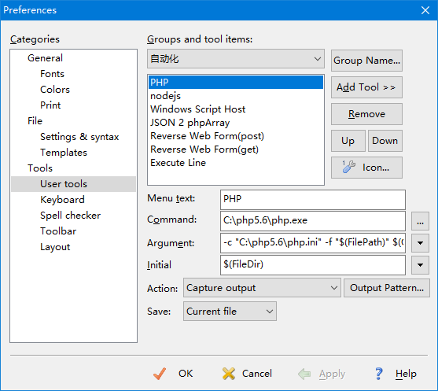
同样的方式添加另一个程序工具，用来执行 JavaScript 脚本程序，首先下载最新版本的 Node.js，安装到系统，如果是免安装的压缩包，解压到指定目录即可，然后将目录路径添加到 PATH 系统环境变量上，这样就可以在执行 node.exe 命令时定位到它，相应设置如下：
Menu text: Node.JavaScript
Command: C:\node\node.exe
Argument:"$(FilePath)"
Initial: $(FileDir)
Action: Capture output
提示：Windows 系统设置方法，在运行命令中输入 sysdm.cpl 或者 control sysdm.cpl 打开系统属性设置，又或者点击桌面 我的电脑 图标，弹出右键菜单，依次选择 系统属性 => 高级 => 环境变量，在列表中双击 Path，如果没有就新建一个 Path 环境变量，然后将 Node.js 的安装路径填入，确认即可。
完成设置后，新建一个脚本文件，输入任意代码保存，通过菜单 Tools => Node.JavaScript 执行脚本，查看脚本输出结果，简易的 JavaScript 开发工具即搭配完成。
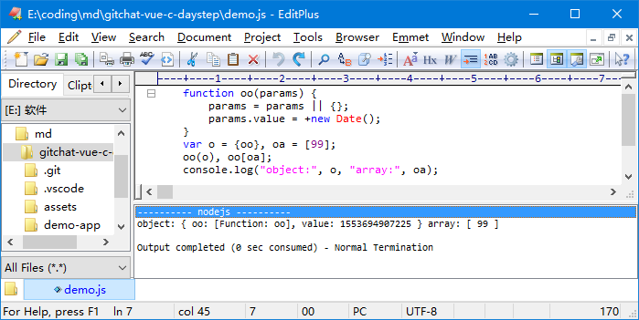
Editplus 集成 Emmet 帮助快速编写代码，见后面 Emmet 小节内容。还有附带的自动提示功能，当然这个功能其实做得不好，几乎没有过，代码熟练到一定程度后，可以直接转入更专业的 Sublime Text 或 VS Code 中工作。如果想再深入发掘一下 Editplus 的生产力，可以学习 Windows 脚本宿主编程，参考《小而巧 editplus 脚本编程》。
Sublime Text
第一次接触到 Sublime Text 这个工具就被吸引了，跨平台编辑器、强大的插件系统、强大的定位功能，加上小巧的体积和不高的系统要求简直是开发神器。Sublime 和 VS Code 一样以文件夹为工程组织，项目内容的文件及代码中的符号可以通过跳转菜单 Goto 中提供的 Goto Symbol...、Goto Line... 实现几乎无缝跳转，只要是工程内容的符号，直接定位到行，结合快捷键基本可以脱鼠操作。Sublime 还会索引当前文件的出现的关键字，做了全文搜索功能，使用快捷键 Ctrl+; 打开全文搜索。Sublime 使用的是模糊匹配，不需要记得完整的符号拼写或文件全名，只需要一点关键部位的信息就够定位，同时，执行任何搜索定位时使用的关键字会缓存起来，直到下次更新搜索关键字，所以任何时间都可以使用 F3 或 Shift+F3 来回查找关键字。
如果需要的符号不在当前文件，那么可以使用跳转到定义 Goto Definition 和工程内符号跳转 Goto Symbol in Project...，对应快捷键 F12、Ctrl + Shift + R。文件切换可以通过 Goto Anything... 实现模糊匹配跳转，也可以使用 Alt + 数字切换到已经打开文件列表中对应序号的文件。还有强大的文件查找也可以用来定位，工程目录外的文件也可以快速索引查找。光标位置的移动会被记录下来，利用 Jump Back 和 Jump Foward 可以在光标的移动轨迹上来回还原。符号定位功能是 Sublime 提供最实用的基础能力，用好这几种跳转定位，可以有效避免代码编写思路被打断提升代码编写速度。
Sublime Text 是收费软件，但没有强制使用期限，有能力可以购买使用。下载安装好最新版的 Sublime Text 3 是没有安装插件的，首先需要到官网复制安装插件管理器 Package Control 的安装脚本，回到 Sublime Text 界面，使用菜单 View =>Show Console 打开控制台，快捷键 Ctrl + ` 反引号，即 Esc 下的按键，将安装脚本粘贴进来并回车执行安装。
插件管理器安装好后就可以开始安装第三方插件了，选择很多，Sublime Text 作为一个开放的系统，还可以实现自己的插件。现有常用的插件有 sftp 用于远程文件传输、ConverToUTF8 用于编码转换、Emmet 用于辅助生成代码、AutoFileName 用于文件路径时自动完成、SublimeCodeIntel 代码智能提示、HTML/CSS/JS Prettify 用于格式化代码等、ColorHighlighter 用来高亮样式色彩属性、SideBarEnhancements 用来增加左则目录树功能。
使用 Sublime 写作也是很不错的，只需要一些前 Markdown 语法知识连 HTML 基础几乎都不要就可以很好地完成写作任务。需要安装几个插件，MarkdownEditing 用来编辑 MD 格式文件、MarkdownPreview 使用快捷键 Ctrl+B 将 MD 格式转换成 HTML 格式、MarkdownLivePreview 编辑框中实时预览 MD 文件、LiveReload 提供 MD/HTML 等文档的实时刷新预览的、MarkdownTOC 利用 MD 的标题生成目录树 [TOC]，MarkdownLight 高亮效果。如现在所看到的这往篇文章就是 Sublime 结合这几个插件完成的。
SublimeTmpl 插件用来生成模板，安装后通过快捷键 Ctrl+Alt+h 新建 HTML 文件、Ctrl+Alt+j 新建 Java 文件、Ctrl+Alt+c 新建 CSS 文件、Ctrl+Alt+p 新建 PHP 文件、Ctrl+Alt+r 新建 Ruby 文件、Ctrl+Alt+Shift+p 新建 Python 文件。
要开始安装插件，从菜单进入插件管理器 Preferences => Package Control 即出现插件管理器的界面，其实就是包含已安装插件命令及插件管理器命令的列表，可以使用快捷键 Ctrl+Shift+p 打开。插件管理可以通过 Enable Package、Disable Package、 Remove Package 实现启用、禁用、卸载。如果插件库所在的服务器故障此起插件不能安装，可以通过更换插件的方式解决， Add Repository、Remove Repository 对应添加/移除插件库，也可以去插件官网下载，复制到插件目录下即可完成安装，插件安装目录通过菜单打开 Preferences => Browser Packages...。插件安装好后，菜单会有相应变化，Preferences => Package Settings 有插件的设置项，主要是配置和快捷键的设置。
开始使用前，需要作一些个人偏好设置，如字体、显示文件编码等等，Preferences => Settings，增加以下设置，然后会显示当前文件的编码和换行符类型。
"show_encoding":true,
"show_line_enddings":true,
"font_face": "YaHei Consolas Hybrid",
"font_size":10
补充使用技巧
分屏功能，要用好 Sublime 掌握一些技巧是很有必要的，例如 Alt + Shift + 2 可以用来分屏，一屏两用，做文件比较时有用。左边目录树标签栏上出现 Group1 Group2 文件分组字样，对应两屏的文件, 在列表中拖动文件就可以在分屏间移动文件。
多点编辑，按住 Ctrl + Alt + 上下方向键，可以选择多行进行编辑。 或者使用 Ctrl + D 选择多个相同内容进行编辑，Alt + F3 可以选中所有相同的符号内容，Editplus 类似 shift + 双击。按住 Ctrl + 加鼠标左键点击选择任意个位置，进行多点编辑。 Editplus 则是 Alt+拖到。
区块编辑功能，按住 Shift + 鼠标右键可以在编辑器拖动选中一个矩形区域, 区域内会有多个光标对选区进行编辑。
整行操作，使用 Ctrl + Shift + 上下方向键移动整行内容。删除行 Ctrl + k + k，拼接行 Ctrl + k，复制行或复制选择中内容 Ctrl + Shift + d。在光标前插入一行 Ctrl + Shift + Enter，在光标后插入一行 Ctrl + ENTER。行缩进操作 Ctrl + [ 或 Ctrl + ]。大小写切换 Ctrl + [ 或 Ctrl + ]。注解行或注解块 Ctrl+/、Ctrl+Shift+/。
右下角的文件类型显示区还可以设置指定的文件格式，这样就有对应文件类型的行为特征，如高亮语法自动提示等。
使用片段模板 Code Snippet 快速输入同样的片段内容, 菜单打开 Tools => Developer => New Snippet 新建片段，内容如下，保存任意文件名。然后在PHP文件中输入 phpgap 再按 TAB 键就可以得到定义好的模板内容。设置片段模板时用到的 scope 会用来做判断，模板在恰当的情况下被调用，Sublime 通过 scope 判断光标所处的位置是什么上下方，这是 Sublime 整个软件设计中极其重要的一个基础环节，光标所在的上下文信息被分散使用在各个功能上，如自动提示、文件高亮格式化、自动选择编译命令。可以通过菜单得到光标的上下文 Tools => Developer => Show Scope Name，设置 embedding.php 上下文可以保证这个片段不会在编辑 CSS 文件时出现，这个是很贴心的软件设计。
<snippet>
<content><![CDATA[
?>${1:type_here}<?php
]]></content>
<!-- Optional: Set a tabTrigger to define how to trigger the snippet -=>
<tabTrigger>phpgap</tabTrigger>
<!-- Optional: Set a scope to limit where the snippet will trigger -=>
<scope>embedding.php</scope>
</snippet>
Sublime 的文件查找 Find in Files 是使用频度很高的一个功能，在 Windows 10 下其快捷键 Ctrl+Shift+f 会与系统输入法冲突而失效，Windows 10 自带的微软拼音输入法用这个快捷键切换简体/繁体。如果输入法处于微软拼音状态，就无法使用快捷键，解决方法是修改 Sublime 的快捷键设置，如使用 Ctrl+Shift+i 来执行文件查找，打开菜单 Preferences => Key Bindings 增加以下热键配置项保存即可，如果配置没有其它配置项，请去掉后面的逗号：
{ "keys": ["ctrl+shift+i"], "command": "show_panel", "args": {"panel": "find_in_files"} },
构建系统
Sublime 可以作为一个专业的开发工具，与上面提到的功能是分不开的，而它的构建系统 Build Systems 更是强大，通过编写配置就可以任意运行外部程序、编译器、解析器，通过菜单 Tools => Build System => New Build System 新建一个配置，输入以下设置内容就可以运行 PHP 解析器。其中 selector 是 sublime 用来自动关联 build 工具的上下文，可以通过菜单得到 Tools => Developer => Show Scope Name。设置好自动编译 Tools => Build Sytem => Automatic，按下快捷 F7 或 Ctrl+B 执行编译命令，自动选择是根据配置文件中的 selector 设置的上下文信息匹配的，快捷键 Ctrl + Shift + B 可以选择其它后选编译命令。
{
// "target":"exec",
"cmd": ["php.exe", "-f", "${file}"],
"working_dir": "${file_path}",
"path":"c:/php7.1.16",
"file_regex": "^.* in (.*?) on line ([0-9]*)",
"selector":["embedding.php","source.php"]
}
file_regex 是一条正则表达式，用来匹配命令输出信息，正则表达式是非常强大的字符串处理工。点击输出包含文件路径的信息可以定位文件指定行号，如php脚本运行输出提示信息，其中文件名/行号可以提取，点击这条信息就可以定位到代码：
PHP Notice: Use of undefined constant b - assumed 'b' in coding.php on line 49
每一个编译配置都会调用一个构建插件，构建插件根据配置去调用操作系统的命令，Sublime 内置了一个默认的构建插件 exec，配置文件使用 target 配置项指定，默认可以省略不写。构建插件通过 Python 脚本扩展 sublime.WindowCommand 接口实现，即使不通过编程扩充，使用 Sublime 内置的默认 exec Target 构建系统基本可以对付日常应用，如果需要构建大型工程，可以加入 Make、Ant、Grunt、Gulp、Jake 等等编译自动化工具来做到。官方网站提供了一个例子 MyExampleBuildCommand 作为参考。
Sublime 编译配置文件中可用的内置变量：
- $packages Sublime Text 的插件目录 Packages 的路径
- $platform 运行 Sublime Text 的平台信息 Windows/osx/linux.
- $file 当前编辑文件的全路径
- $file_path 当前编辑文件的的在目录
- $file_name 当前编辑文件的文件名不含目录部分(sans folder path)
- $file_base_name 当前编辑文件的名字不含扩展名
- $file_extension 当前编辑文件的扩展名
- $folder 当前工程中，即左侧目录树中的第一个目录路径
- $project 当前工程文件的路径，工程没有保存则为空字符
- $project_path 当前工程文件夹的路径
- $project_name 当前工程文件名不含目录部分 (sans folder path)
- $project_base_name 当前工程文件名不含扩展名部分
- $project_extension 当前工程文件的扩展名
编译命令各个配置项用法解释：
- file_regex: “^\s(\S[^:])\((\d+):(\d+)\): ([^\n]+)” 正则匹配命令输出的文件名/行号/列号/错误码等，用来做定位跳转
- shell_cmd: “a_command "$file" | b_command” 对比 cmd 命令，支持管道命令和重定向，可以使用变量占位符，使用 bash 或 cmd.exe
- cmd: [“a_command”, “-d”, “$file”] 命令行配置，不支持 Shell 管道命令和重定向，可以使用变量占位符
- env: {“PYTHONIOENCODING”: “utf-8”} 命令运行时的环境变量设置
- working_dir: “$file_path” 设置命令运行初始目录
- encoding: “iso-8859-1” 设置命令输出字符串的编码，默认是 UTF-8
- quiet: true 静默模式，减少输出信息
- word_wrap: true 输出内容换行设置
- syntax: “Packages/JavaScript/JSON.sublime-syntax” 输出结果高亮语法文件指定
- variants: [{“name”:”c_command”, “shell_cmd”:”c_command.exe”}] 编译命令变体，可以设置多个变体
如果需要实现自己的构建插件，还可以使用以下这组自定义选项：
- file_patterns
- keyfile
- keyfiles
- save_untitled_files
- selector
- target
- variants
- cancel
- linux
- osx
- windows
JAVA 编译配置参考
Java SDK 需要另行下载安装，确保 SDK 的 bin 目录设置到操作系统的 path 环境变量中。
{
// "shell_cmd": "javac.exe \"$file\" && java.exe \"$file_base_name\"",
"shell_cmd": "ECHO Compiling $file_base_name.java && javac -encoding UTF-8 \"$file\" && java \"$file_base_name\"",
"file_regex": "^(...*?):([0-9]*):?([0-9]*)",
"working_dir": "${file_path}",
"selector": "source.java",
"encoding":"UTF-8",
"variants":[
{
"name":"编译",
"shell_cmd": "ECHO Compiling $file_base_name.java & javac -d . -encoding UTF-8 \"$file\"",
},
{
"name":"运行当前类",
"shell_cmd":" java \"$file_base_name\" "
},
{
"name":"cmd中运行",
"shell_cmd":" start cmd /c \"javac -encoding UTF-8 \"$file\" & java \"$file_base_name\" & pause \""
}
]
}
Python 脚本解析配置
{
"encoding": "utf-8",
"working_dir": "$file_path",
"shell_cmd": "python -u \"$file\"",
"file_regex": "^[ ]*File \"(...*?)\", line ([0-9]*)",
"selector": "source.python",
"variants":
[
{
"name": "Run",
"shell_cmd": "start cmd /c \"python -u \"$file\" & pause\"",
}
]
}
Windows 脚本宿主配置
Windows 脚本宿主也具有非常强大的功能，透过脚本宿主 cscript.exe 或 wscript.exe 可以运行 VBS 或 JScript 脚本，脚本宿主文件名前缀的 c/w 分别表示运行方式是 Console/Window。
{
"cmd":["cscript.exe", "$file"],
"file_regex": "^[ ]*File \"(...*?)\", line ([0-9]*)",
"selector": "source.js, source.wsj"
}
更多关于 Windows 脚本宿主的编程请参考《Windows Script Technology》。
C++ 编译配置参考
编译器可以选择 TDM-GCC 5.1 这个版本的编译器，它支持新的 C++ 2011 规范，这是普及的 C++ 新标准。以下配置可以用于 Qt 的 C++ 项目的编译，Qt 需要另外下载安装，下载选择版本时请选择 MinGW 编译版本，只有使用同类编译器编译的版本才能开发出稳定的程序。以下配置需要根据 Qt 的安装目录进行适当的修改。
{
"env": {
"path":"E:\\Qt\\5.9\\mingw53_32\\bin;%path%",
"inc":"-IE:\\Qt\\5.9\\mingw53_32\\include -IE:\\Qt\\5.9\\mingw53_32\\include\\QtCore -IE:\\Qt\\5.9\\mingw53_32\\include\\QtGui -IE:\\Qt\\5.9\\mingw53_32\\include\\QtGui -IE:\\Qt\\5.9\\mingw53_32\\include\\QtWidgets",
"libpath":"-LE:\\Qt\\5.9\\mingw53_32\\lib",
"libs":"-lQt5Core -lQt5Gui -lQt5Widgets",
"cc":"g++.exe -Wall -Wno-unused-variable -fdump-class-hierarchy"
},
"shell_cmd": "ECHO Compiling $file_name ... && %cc% -g -std=c++11 %inc% -c \"$file\" -o $file_base_name.o && g++.exe %libpath% -o ${file_base_name}.exe ${file_base_name}.o %libs% && echo done.",
"file_regex": "^(...*?):([0-9]*):?([0-9]*)",
"working_dir": "${file_path}",
"selector": "source.c++",
"encoding":"UTF-8",
"variants":[
{
"name":"编译再运行(-std=c++11)",
"shell_cmd":"ECHO Compiling (-std=c++11) $file_name ... && %cc% -g -std=c++11 %inc% -c \"$file\" -o $file_base_name.o && g++.exe %libpath% -o ${file_base_name}.exe ${file_base_name}.o %libs% && ECHO Start run $file_name ... && ${file_base_name} "
},
{
"name":"编译再运行(-std=c++11) Release",
"shell_cmd":"ECHO Compiling (-std=c++11) $file_name ... && %cc% -DNDEBUG -std=c++11 %inc% -c \"$file\" -o $file_base_name.o && g++.exe %libpath% -o ${file_base_name}.exe ${file_base_name}.o %libs% && ECHO Start run $file_name ... && ${file_base_name} "
},
{
"name":"控制台中运行",
"shell_cmd":"start cmd /c \"${file_base_name} & pause \""
}
]
}
设置好 C++ 编译器配置后就可以试试编译一个单态模式 DEMO 程序试试效果：
#include <iostream>
// Definition & implementation combined together
class Skeleton {
Skeleton() { std::cout << "Skeleton run ......" << std::endl; }
friend class Singleton;
};
// Definition part
class Singleton: virtual Skeleton {
public:
static Singleton instance();
static Singleton *_instance;
};
// Implementation part
Singleton *Singleton::_instance = NULL;
Singleton Singleton::instance(){
if( _instance ) return *_instance;
_instance = new Singleton();
std::cout << "_instance @ " << _instance << std::endl;
return *_instance;
}
class X: private Singleton { };
int main()
{
Singleton s, y = Singleton::instance();
// X x; // error: 'Skeleton::Skeleton()' is private
return &s == &y? 1:0;
}
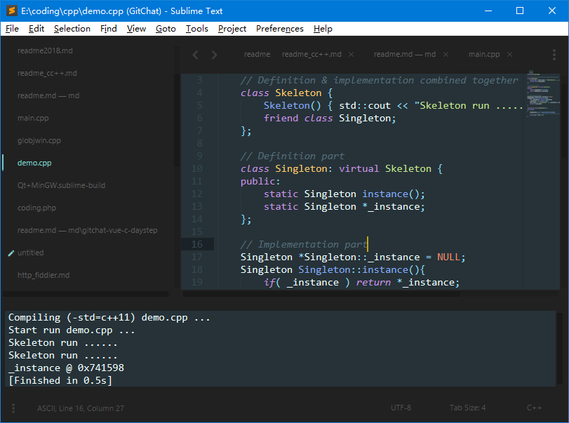
Visual Studio Code
VS Code 是基于 Electron 开发的跨平台编辑器，Electron 就是使用 JavaScript 来开发桌面程序的平台。JavaScript 天生的异步特性使用它在图形界面 GUI 开发上具有天然的流畅性。VS Code 是也非常强大的开发工具，像版本控制 Version Control 这部分内容就很值得去花时间，但这里只能挑几个功能作为重点来介绍。
和 Sublime 一样，VS Code 的插件架构，VS Code 的插件 Extension 叫法不一样，两者功能上几乎不分上下，通过 Ctrl+Shift+p 呼出命令的调板可以执行各种各样的命令，包括插件的操作等等。VS Code 基本的编辑功能也非常齐全，如多点编辑，关键字多选，行复制行移动等，还有集成的 Emmet，后面会作介绍。文件切换也可以用 Alt + 数字来快速切换已打开文件，其它快捷键可以通过主界面左下角齿轮图标中的弹出菜单设置，如习惯使用 Ctrl+d 来做多选操作，在快捷键设置页搜索 Add Selection 并修改掉默认的快捷键即可。还有瞄一眼这个功能设计得很好，相比定义跳转 F12，瞄一眼 Peek Definition Alt+F12 省去了文件间的跳转，在需要获取额外参考信息时方便多了。总体上来讲，Sublime 在调试功能、处理大文件上稍有不足，但不以成为问题，其强大的跳转和小巧的输入提示功能足够覆盖这些小问题。虽然在符号定位上，VS Code 也有文件内和工程内的符号定位功能，但实用性和便利程度远不及 Sublime 的强大。而 VS Code 在调试环境上稍胜一筹，所以偏好调试环境的可以选择 VS Code，偏好强大的定位搜索功能及构建系统可以选择 Sublime，所以本节内容主要介绍 VS Code 调试功能的使用。
先来安装插件，在 VS Code 主界面的左侧面板方格状按钮就是插件 Extension 管理面板，在面板输入插件名称即可以搜索到相应结果，点击列表的条目，会出现插件介绍所页面，其中有安装按钮 Install ，对于已经安装好的插件，则会显示禁用按钮和卸载按钮 Disable & Uninstall。面板右上侧还有许多显示选项，可以显示当前已经安装的插件列表，还有过时的、禁用的、内置的、热门的或者推荐的。点开插件页面后，其中也会有使用方法介绍内容。VS Code 每个工程相关的配置文件，包括插件配置会存放到工程根上的 .vscode 内。
想让 VS Code 更美观，可以安装 vscode-icon 插件，资源树目录会加上图标效果。如果经常和数据库交互，可以装个 MySQL management tool，这样 VS Code 就是个数据库管理器。VS Code 的插件安装太多可能会吃掉大量内存，可以考虑在项目中关闭无关的插件，可以使用 Sysinternals Process Utilities 工具包中的 Process Explorer 来查看各进行的调用关系及内存消耗。
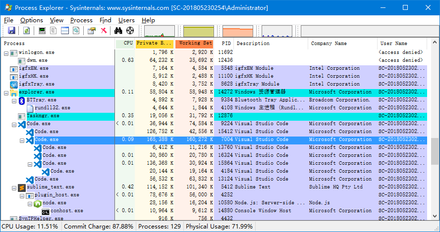
开发 Vue 项目
做 Vue 开发，需要安装一些基本的插件，Vetur 是必选的，支持 Vue 单文件组件格式 .vue，高亮显示语法检查支持，自动提示代码片段等等。Vue 2 Snippets 代码片段插件，方便写代码。想强制进行语法规范可以考虑使用 ESLint，它以约束你规范化代码并进行错误检查，但一堆的错误警告也可能会令人抓狂。避免一个个插件安装，可以选择直接安装插件包，如 Vue.js Extension Pack，一次性安装所有常用的 Vue 开发插件。更多信息可以参考 Vue JavaScript Tutorial in Visual Studio Code。
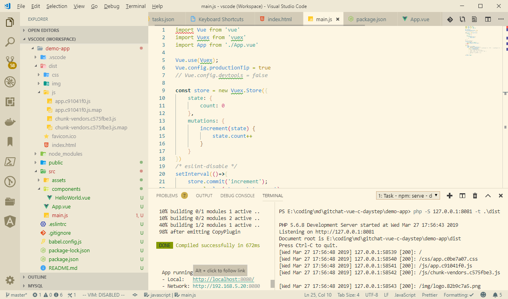
Vue 官方提供了一个脚手架工具 Vue CLI，需要 Node.js 8.9 或更高版。最新的版本是 Vue CLI 3，还带来了 CLI 插件和 Service 插件的概念，可以通过 vue ui 命令以图形化界面创建和管理项目，还有快速原型开发等。通过 Vue CLI 可以极大帮助简化 Vue 项目的建立/开发/打包，通过模块热替换 HMR 技术，可以极大地提高开发效率，而不必将整个项目重新编译运行。
首先花几分钟的命令行执行安装命令，安装完后查查看是什么版本：
npm install -g @vue/cli
vue --version
然后用它来建立模板工程 demo-app，工程名就是文件夹，期间询问选项是默许回车即可，然后进入工程目录并启动开发服务器：
vue create demo-app
vue create --help
cd demo-app
npm run serve
用浏览器访问脚手架提示给出的网址，打开页面可以看到 Vue 欢迎标志即完成初步。脚手架建立的工程目录基本结构如下：
demo-app
+-- .gitignore
+-- babel.config.js
+-- node_modules
+-- package-lock.json
+-- package.json
+-- public
| +-- favicon.ico
| +-- index.html
+-- README.md
+-- src
+-- assets
| +-- logo.png
+-- components
| +-- HelloWorld.vue
+-- App.vue
+-- main.js
public 目录下的是 HTML 页面模板，在调试或发布程序时，编译打包后的脚本或样式会和 index.html 拼装在一起在浏览器运行。发布后，所有设置为运行依赖的模块 和 src 源代码目录下的内容会编译打包保存到 dist 目录下，每次构建时这个目录都会被清空。
Vue 开发的一大特点就是单独文件组件 SFC 即 .vue 这样的文件，在 Vue 中的程序和组件基本结构是相同的，都是同一套基础骨架建立起来的，一般情况下将 Vue 的程序实例和组件同等看待也是可以的。App.vue 和 HelloWorld.vue 文件结构也是相同的，主要有模板 template、 脚本 script 和样式 style 三部分构成。
程序的入口是 main.js 脚本，浏览器加载页面时，首先会执行它，然后实例化 Vue 程序运行起来的，render 是渲染函数，这个函数比较有趣，后面介绍它的作用。
import Vue from 'vue'
import App from './App.vue'
// Vue.config.devtools = false
Vue.config.productionTip = true
new Vue({
render: h => h(App),
}).$mount('#app')
node_modules 目录包含工程依赖的模块，已经由脚手架工具安装好了，所有依赖模块也是脚手架设置在项目配置文件 package.json 中的。如果配置文件的依赖模块有更新，或者需要添加新模块都可以手动执行 NPM 来安装：
npm install [moddule]
打开配置文件可以看到，脚本配置 scripts 有 serve 这项，即前面执行 npm run 时指定运行脚本，vue-cli-service 是 Vue CLI 3 服务，可以在模块目录 @vue 子目录找到。新工程只有一个运行依赖，即 dependencies 只有 Vue 2.6.6 框架这一项，而开发依赖 devDependencies 的模块就多一点，主要有语法约束 ESLint 和 Babel 这个 JavaScript 变体。Babel 使用了更美观的但不被 JavaScript 解释器理解的代码书写格式，同时它又能将那些更好看代码转译成纯正的 JavaScript 代码，所以 Babel 也称自己是一个 JavaScript 编译器。babel-eslint 这个模块则可以将 Babel 代码按 ESlint 规范进行转译。
Vue CLI 内置了 Webpack，WDS 即用于开发用的服务器 webpack-dev-server 等，在新版本的 Node.js 上，NPM 采用 [package-lock.josn]，所以它并没有在 package.json 配置文件中出现。Webpack 会使用 vue-loader 加载器来加载和转译 .vue 单文件组件文件为 JavaScript 模块。vue-loader 这个模块的存在使得开发者可以在同一个 .vue 文件中编写脚本、样式、HTML。vue-template-compiler 用来做组件文件的模板预编译，组件模板会被编译成渲染函数 render，这样能减轻运行时的机器负担，同时也更符合内容安全策略 CSP。
NPM 在更新 node_modules 模块目录或 [package.josn] 配置文件时会自动生成 [package-lock.josn]，它描述模块目录的树状结构及模块间的依赖关系，用来确保团队开发、部署及持续集成 Continuous Integration 过程中依赖关系的唯一性。也能在不提交代码到版本仓库的前提下，提供时间旅行般 time-travel 的模块关系过往状态。通过源代码差异对比，可以更清晰看到依赖关系树的结构变化。最重要的是它优化了模块的安装过程，使用 NPM 可以跳过先前安装过的重复模块元数据，同时 package.json 也显得更整洁了。
"scripts": {
"serve": "vue-cli-service serve",
"build": "vue-cli-service build",
"lint": "vue-cli-service lint"
},
"dependencies": {
"vue": "^2.6.6"
},
"devDependencies": {
"@vue/cli-plugin-babel": "^3.5.0",
"@vue/cli-plugin-eslint": "^3.5.0",
"@vue/cli-service": "^3.5.0",
"babel-eslint": "^10.0.1",
"eslint": "^5.8.0",
"eslint-plugin-vue": "^5.0.0",
"vue-template-compiler": "^2.5.21"
},
前面提到的渲染函数 render，在 Vue 程序的运行过程中，内部始终以 Virtual DOM 的概念管理组件的模板，渲染函数 render 则是将虚拟 DOM 向浏览器的 DOM 转换过程的重要环节。在适当的时候 Vue 会调用渲染函数，并传入一个 createElement 回调方法，它就是用来构建虚拟 DOM 的方法，第一个由 createElement 方法构造出来的对象就是一个虚拟节点 VNode 对象，虚拟 DOM 就是所有虚拟节点的集合。绝大多数情况下使用 template 来创建 HTML，但是要使用 JavaScript 的完全编程的能力，就需要实现自己的 render 函数，结合 createElement 函数，可以构造任意结构的 HTML，这就是 render 的作用。注意入口程序中的 render 函数是 ES6 函数简略语法，理解它需要有 ES6 语法基础，通过对比以下同种等价表达会更清晰。
render: h => h(App);
render (h){
return h(App);
}
render (createElement) {
return createElement(App);
}
render: function (createElement) {
return createElement(App);
}
通过实现自己的渲染函数可以构造出任意的 HTML，但重点还在 createElement 这个函数内，它接收二个参数，第一个是虚拟 DOM 的节点类型，或者是模板对象，也可以是返回这两种数据的回调函数。第二个是可选参数可以是属性数据对象或者是 VNode 数组，VNode 将当作子节点。
return createElement( 'div' );
return createElement( {template: '<div></div>'} );
return createElement( ()=>{ return { template: '<div></div>'}; });
return createElement('div', [createElement('h1', '主标'), createElement('h2', '副标') ]);
return createElement('div', {
class: { foo: true, bar: false },
style: { color: 'red', fontSize: '14px' },
attrs: { id: 'foo' },
domProps: { innerHTML: 'anything'}
});
第二个可选参数作为属性传入时，可以设置的内容很丰富，除基本的 style、class 等属性，还有其它各种内容，如设置组件属性 props，绑定事件 on 或 nativeOn，插槽设置 scopedSlots、slot，设置顶级变量 key、ref，甚至是自定义指令符号 directives。
现在可以尝试修改 main.js、App.vue 或 HelloWorld.vue 任意一个，这里试着向 HelloWorld.vue 组件的代码添加 render 渲染函数，保存试试看更新后的页面是不是出现期待的内容，有点意外的是并没有变化！
export default {
name: 'HelloWorld',
render: function (h) {
return h('div', [h('h1', 'Hello View Engine!')] );
},
props: {
msg: String
}
}
先去看看官方文档关于 Vue 程序生命周期 Lifecycle-Diagram 这部分，注意第二个醒目的棱形，它是在做判断，如果有模板 template 那就将模板预编译成渲染函数 render，这里的意思就是将 HelloWorld.vue 中的模板部分预编译成了渲染函数，那么以上代码中的自定义渲染函数就会被模板替代，这就是为什么自定义渲染函数的内容并有显现在页面的原因。所以想要在组件中激活自己的渲染函数，就需要将 template 模板标签删除。Vue 的渲染函数基础是很重要的入门知识，有这个基础可以更轻松地一步步深入其它知识点。
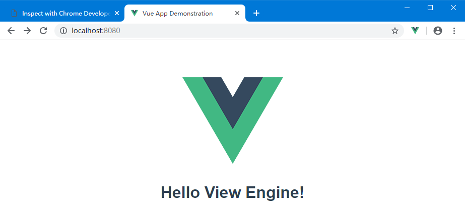
Vue Devtools
Vue Devtools 是官方提供的调试工具，可以从官方网站获取其 github 托管项目地址，里面的读我 readme 文件有详细安装说明。现成有 Vue Devtools for Chrome 和 Vue Devtools for Firefox，Electron 三个平台的扩展可以安装。使用 devtools 的最大好处就是，它实现了实时编辑数据属性并立即看到其反映出来的变化，如果搭配 Vue CLI 的开发环境，还可以在调试器组件视图中将。另外为状态数据仓库 Vuex 提供了量身定制的时间旅行式的调试体验。对触发的事件以日志的方式记录，一并记录着事件对象所携带的数据，方便对事件进行分析。
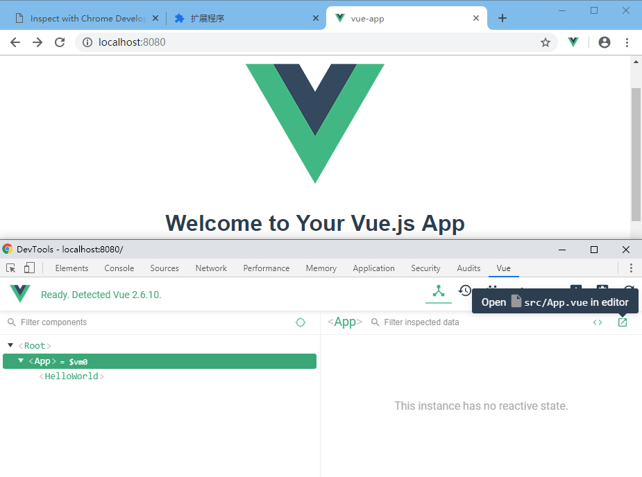
为了测试 Vue Devtools 中 Vuex 栏目，可以在入口程序 main.js 加入一段简单的测试代码，每隔 3 秒更新状态数据一次，注解 eslint-disable 用来关闭 eslint 语法检查以调用控制台打印方法：
import Vuex from 'vuex'
const store = new Vuex.Store({
state: {
count: 0
},
mutations: {
increment(state) {
state.count++
}
}
})
/* eslint-disable */
setInterval(()=>{
store.commit('increment');
console.log(store.state.count);
}, 3000);
可以尝试手动安装 Vue Devtools，以 Chrome 插件手动安装为例，当前运行环境只要满足 Node 6+ 和 NPM 3+ 就可以，按以下步骤进行安装：
- 克隆项目到本地，git clone https://github.com/vuejs/vue-devtools.git；
- npm install 安装依赖模块；
- npm run build 构建编译；
- 打开 Chrome 扩展设置，勾选开发者模式 developer mode；
- 点击 load unpacked extension 并定位到插件的 shells/chrome 目录即可。
一般 git 是常用版本管理工具，开发者都要使用的，没有安装 git 也可以直接下载 zip 包到本地然后解压。
当我们添加完 vue-devtools 扩展程序之后，我们在调试vue应用的时候，Chrome 开发者工具中会看一个 Vue 的一栏，点击之后就可以看见当前页面 Vue 对象的信息。试着载现有的 Vue 项目，可以看到浏览器中的 Vue 按钮显示侦测到 Vue.js is detected，但是如果页面加载的是压缩版本的 vue.min.js，此时处于生产状态，Vue 的调试功能会被关闭，Devtools 也无法正常提供调试功能，为了启用调试功能，可以加载非压缩版的 vue.js，这样在开发者工具面板上就会出现 Vue 菜单，刷新可能无效，开发者工具需要关掉重开。在 Vue 工程中，可以在主程序主动设置关闭调试工具：
Vue.config.devtools = false
[Vue Global Config] 全局配置 productionTip 可以设置程序运行前的提示信息是否要显示，这个信息会在调试器控制台提示当前运行的是开发模式 development mode 还是生产模式 production mode，这两个模式直接对应使用 vue.js、vue.min.js。
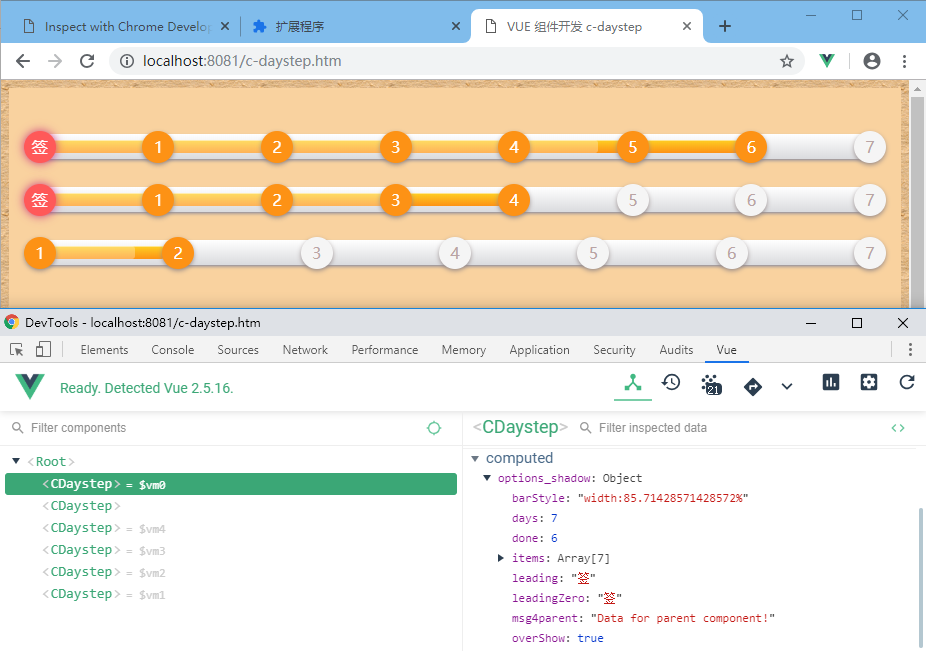
构建作业 - Tasks
VS Code 的构建功能称为构建作业 Tasks，用來整合外部命令，通过修改配置文件 tasks.json 就能实现强大的命令调用能力，更新到 VS Code 1.32 后，Tasks 菜单更新为 Terminal 了，这个更新使得 VS Code 与命令行更加紧密地结合，方便了许多需要结合命令行终端的应用场景，特别是在调试应用中，集成的控制台还支持链接等功能，可以分组可以分屏功能十分强悍。
终端菜单 Terminal 下有 Run Task... 和 Run Build Task... 这里的 Build 是 VS Code 对作业的内置的分组，普通作业和构建作业。新打开空目录时，可以通过终端菜单的配置任务 Configure Tasks... 从其它选项中复制配置模板，如下，配置有一条运行 Shell 命令，这就是一条普通作业，只用来在控制台输出一段字符串，command 处就是指定运行的命令。
{
"version": "2.0.0",
"tasks": [
{
"label": "echo",
"type": "shell",
"command": "echo Hello"
}
]
}
而构建作业分组可以使用 group 设置，所属分组还可以设置为 test 或 none，通过命令调板 Ctrl+Shift+p 可以快速运行 Run Test Task 或 Run Build Task 这两组作业。problemMatcher 设置如何处理输出结果，像脚本解析器执行时可能返回一些错误信息，可以设置相应的错误信息的处理器。presentation 设置作业如何呈现，以下设置为总是在新面板显示。
{
"version": "2.0.0",
"tasks": [
{
"label": "echo",
"type": "shell",
"command": "echo Hello",
"group": {
"kind": "build",
"isDefault": true
},
"presentation": {
"reveal": "always",
"panel": "new"
}
"problemMatcher":[]
}
]
}
可以使用 options 来给命令设置运行时的环境变量，当前运行目录 CWD，或使用什么类型的 shell。可以使用 args 来配置命令中需要用到的参数。
{
"label": "dir",
"type": "shell",
"command": "dir",
"options": {
"cwd": "${workspaceRoot}/client"
},
"args": [
{ "value": "folder with spaces", "quoting": "escape" }
]
}
在配置中使用到的内置变量除了 workspaceRoot，还有以下这些常用的，假设工作空间目录是 project，正在打开的文件是 /project/src/app.js：
${workspaceFolder} - VS Code 工作空间目录 /project
${workspaceFolderBasename} - VS Code 工作空间目录名字部分 project
${file} - 当前打开的文件 /project/src/app.js
${relativeFile} - 当前文件路径去年工作空间目录的部分 src/app.js
${fileBasename} - 当前文件的文件名 app.js
${fileBasenameNoExtension} - 文件名不含扩展名 app
${fileExtname} - 文件扩展名 js
${fileDirname} - 目录名 /project/src
${cwd} - 当前运行目录
${lineNumber} - 光标所在行号
${selectedText} - 当前选中文本
${execPath} - VS Code 程序所在目录
组合构建作业，可以给作业设置依赖其它的作业，通过 dependsOn 就能实现多个作业的自动构建：
{
"version": "2.0.0",
"tasks": [
{
"label": "Client Build", "command": "gulp", "args": ["build"],
"options": {
"cwd": "${workspaceRoot}/client"
}
},
{
"label": "Server Build", "command": "gulp", "args": ["build"],
"options": {
"cwd": "${workspaceRoot}/server"
}
},
{
"label": "Build",
"dependsOn": ["Client Build", "Server Build"]
}
]
}
如果目录文件夹已经存在 package.json 这样的配置文件，在配置作业或运行作业时 VS Code 会尝试将其中脚本配置部分抽取出来以菜单形式提供选择，以下配置信息显示在工程目录下的 demo-app 有相应的 package.json 配置：
{
"version": "2.0.0",
"tasks": [
{
"type": "npm", "script": "serve", "path": "demo-app/",
"problemMatcher": ["$tslint4"]
}, {
"type": "npm", "script": "build", "path": "demo-app/",
"problemMatcher": []
}, {
"type": "npm", "script": "install", "path": "demo-app/",
"problemMatcher": []
}
]
}
除了以上介绍的这些输入输出内容设置，VS Code 的构建系统还有许多详细的设置，如基于系统相关配置项，因为 VS Code 是跨平台的编辑器，有需要做系统的辨别。结合 Markdown 转译程序可以将 MD 文件转成 HTML，也可以将 CSS 预处理器 Less、SCSS 转成 CSS。如果输出内容有乱码问题，可以参考使用 chcp 内码设置命令：
"command": "chcp 866 && more russian.txt"
更多详细配置参考 Tasks in Visual Studio Code。
调试功能
Debugging in Visual Studio Code 调试这部分的内容应该放后再介绍的，现在前置了，在内容组织上和 VS Code 开发工具一并带过会显得比较完整，如果暂时还不需要了解调试这部分内容，可以直接跳过，待后面有需要了解再回过补充也是一样。VS Code 内置的调试功能支持大量语言的及解析器，支持 Node.js 调试 JavaScript、TypeScript 及其它可以转译 Transpiling 成 JavaScript 的分支语言。支持常用的 PHP、Ruby、Go、C#、Python、C++、Powershell等。
做前端调试时主要使用 Chrome 和 Firefox 还有 NodeJS 提供的调试器，Node Debug 已经是内置的插件。另外须安装好 Chrome，同时在 VS Code 中安装 Debugger for Chrome 插件，如果使用 Firefox 做调试，则需要安装 Debugger for Firefox 插件。只要支持 Chrome Debugging protocol 协议的都可以做调试，如 Electron、Cordova。安装好调试插件后，重启 VS Code 并打开包含工程的目录。
安装相应的调试器插件，就能使用在 VS Code 调试功能菜单 Debug 中包含的完整的调试功能，如单步跳过 Step Over、单步进入 Step Into、单步跳出 Step Out，断点 Breakpoint 的管理等。开始调式前，需要稍做些准备工作，首先通过菜单添加调试配置 Debug => Add Configurations...，在出现的列表中有各种调式器可选，做前端开发通常会用到 Chrome 或 NodeJS，选择任意一个即可以，调试配置保存在 launch.json 文件。以后需要其它调试器时还可以再添加，多个调式器配置会包含在配置文件的 configurations 中。VS Code 主界面中左则停靠工条上有甲虫的按钮是调试器面板，打开面板后，可以看到顶部包含有开始调试功能按钮，配置文件选项列表，控制台按钮，还有变量监视器及堆栈数据，下面结合各种调试器来介绍配置文件。
VS Code 支持同时调试多个程序，在复杂的调试场景中，例如客户端服务端两层结构 C/S 的系统中，可能需要同时对客户端和服务端进行联合调试。这种情况下，只需要给两层的调试设置好配置文件，即可以同時调试客戶端服务端两个程序，调试工具条中也会相应显示当前的激活调试程序的配置信息。
{
"version": "0.2.0",
"configurations": [
{
"type": "node", "request": "launch", "name": "Server",
"program": "${workspaceFolder}/server.js",
"cwd": "${workspaceFolder}"
}, {
"type": "node", "request": "launch", "name": "Client",
"program": "${workspaceFolder}/client.js",
"cwd": "${workspaceFolder}"
}
],
"compounds": [
{
"name": "Server/Client",
"configurations": ["Server", "Client"]
}
]
}
演示 JavaScript 闭包
这里配置设置的是 VS Code 内置支持的调试器，请先下载安装 Node.js，关于 Node.js Inspector 调试器后面再用一小节深入一点，现在只介绍易用的 JavaScript 脚本调试。
{
"version": "0.2.0",
"configurations": [
{
"type": "node",
"request": "launch",
"name": "启动调试",
"program": "${file}"
}
] }
配置項 program 中指定的是占位符 ${file} 表示当前激活的文件，执行调试命令时，当前文件会作为主程序打开进行调试。现在试着用 Node.js 来调试一段 JavaScript 代码，这小节内容也作为 JavaScript 脚本编程的教学内容，以下代码演示了 JavaScript 的闭包概念 Closures，闭包作为 JavaScript 的高级内容，不太适合初学者，如果觉得看不明白，可以忽略代码，把重点放在调试功能的使用上来，现在将以下代码保存到 demo.js 文件：
function tick(){
let a = 0; // tick Scope
return a++;
}
function tick_closure(){
let a = 0; // tick_closure Scope
return function(){
return a++; // anonymouse Scope
};
}
let tk = tick;
console.log(tk());
console.log(tk());
let tkc = tick_closure();
console.log(tkc());
console.log(tkc());
选择调试配置 启动调试，按快捷键 F5 或通过调试器面板按钮启动调试器，调试面板好像有内容变化，然后又回到正常状态了。这是因为调试器启动后就开始执行以上的代码了，并且从头执行到结束一切正常，为了看到程序的运行过程，需要在关键位置下断点，如在变量 tk 赋值处下一个断点，快捷键 F9，让程序执行流程来到此处就进入中断状态暂停下来。接下来使用单步路过方式跟踪代码的执行，快捷键 F10，在控制台依次输出几个数字。再继续跟踪几步，会来到 node.js 代码，这里 NodeJS 的主程序，开始调试时 Node 内置的 JavaScript 解释器就会依次加载核心代码，然后加载被调试工程的程序代码。当程序代码执行完后，按堆栈中记录的函数执行顺序原路返回。为了跳出这些非目标代码，可以使用继续执行方式快速结束本次调试，和开始调式使用一样的 F5 快捷键，也可以使用单步跳出执行方式，跳出是指快速结束当前正在执行的函数，返回到堆栈中记录的上一级函数，使用快捷键 Shift+F11。
JavaScript 的闭包概念是和函数作用域 Scope 密切相关的，从字面上理解，闭包就是作用域内部的作用域。以上代码中包含了至少四个作用域，除了全局作用域没有标记，其余三个作用域都标记在其第一行代码后，tick_closure 函数内返回的匿名函数也有其作用域。局部变量 a 只能被变量所在的作用域 tick_closure Scope 或其子作用域 anonymouse Scope 访问。那么通过一个函数返的内部函数，具有访问局部作用，因为这种对局部变量的访问使用局部作用域并没有因为返回而消失。这种局部变量的持续存在现象就是闭包的特征，利用闭包这一特性，可以实现象 C++ 的保护成员那样的机制。
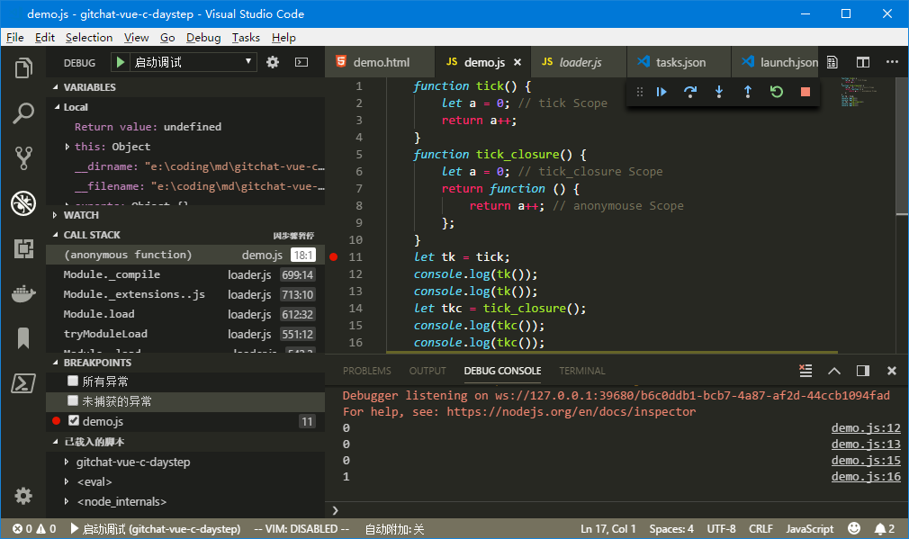
Node Inspector 调试器
这里需要先安装 Node.js，点击链接转到官网下载安装，本系统使用的版本号是 v10.3.0，安装好后确保在环境变量 path 中包含其目录路径，这样在命令行执行时才不必输入完整路径。
Node.js 内置了一个进程外调试器，遵循 V8 Inspector Protocol 协议的 Inspector 或 Node 内置的客户端都可以进行访问。谷哥开发者调试协议 V8 Inspector Protocol 是目前最流行易用的前端调试协议之一，这个工具在不断更新发展中。在 Node.js 6.3+ 中，可以内置了对旧的 V8 Debugger Protocol 协议的支持，通过 --debug 选项调用。新版的 Node 已经集成 V8 Inspector Protocol 协议则支持，使用 --inspect 选项即可调用，可以指定地址端口，默认使用 127.0.0.1:9229。旧版本 node 中断方式调试 --debug-brk 也被新协议的 --inspect-brk 替换。在 VS Code 中新旧两种协议分别称作 inspector 和 legacy，在看到 VS Code 出现相应提示信息时，可以知道它们的对应关系。VS Code 調試配置文件中 protocol 配置可以用來指定使用哪个协议，legacy、inspector、auto，默认是 auto。对于 Launch 方式加載并且沒有在配置项 runtimeExecutable 指定 node.exe 路径的，VS Code 会根据环境变量中指定的 Node.js 版本，即 node –version 给出的版本信息来选择协议，Node.js 8.0 及以上版本使用新协议。
node --debug[=port] <file> 开启远进程调试并绑定端口，默认端口 5858 (legacy)
node --debug-brk[=port] <file> 开启远进程调试并绑定端口，可手动在代码插入断点 debugger; (legacy)
node debug <file> 开启交互调试命令行，可手动在代码插入断点 debugger; (legacy)
node debug <URI> 作为调试客户端连接到 URI 指定的进程，如 node debug localhost:5858 (legacy)
node debug -p <pid> 作为调试客户端连接到 PID 指定的进程 (legacy)
node --inspect-brk[=[host:]port] 开启 inspector 远程调试并在执行前中断用户脚本，可指定服务器地址及端口
node --inspect-port=[host:]port 指定 inspector 服务器地址及端口
node --inspect[=[host:]port] 在指定服务器地址及端口开启 inspector
node inspect <file> 开启交互调试命令行
安装了最新版本的 Node 就不必安装 node-inspector，这个工具是主要做协议转换，将 Chromium 使用的 Inspector Protocol 协议转换到旧版本 Node 使用的 V8 Debugger Protocol，由于这个旧协议已经不再更新了，Node.js 8.x 开始不再提供支持，所以不必再使用这它了。另外 Node Inspect 这个是命令行调试客户端工具，已经在新版本 Node 中集成，使用 node inspect 这个命令进入交互调试命令行。
在命令行打开 Node Inspector 调试器，可以指定被调试的脚本文件，命令行会显示绑定的服务地址，默认为 127.0.0.1:9229。然后打开 Chrome 的侦测器面板 chrome://inspect/#devices，首次使用需要进行配置，点击率 Configure... 按钮，将调试器指定的服务地址录入到 Target discovery 目标探测列表上，确认返回刷新等待刷新远程目标列表 Remote Target，这个列表会将目标按地址分类，点击匹配条目中的 inspect 进入 Chrome DevTools 界面开始调试。DevTools 也可以用来修改代码，点击 DevTools 面板的 Sources => Filesystem => Add folder to workspace 将工程目录包含进来并授于读写权限即可以实现边调试边修改代码。
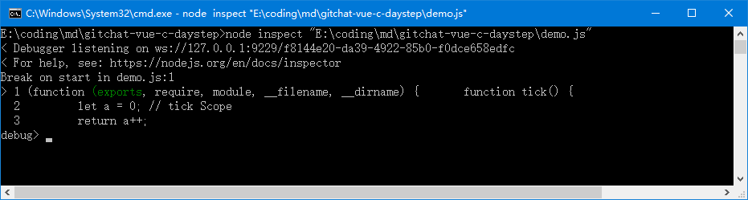
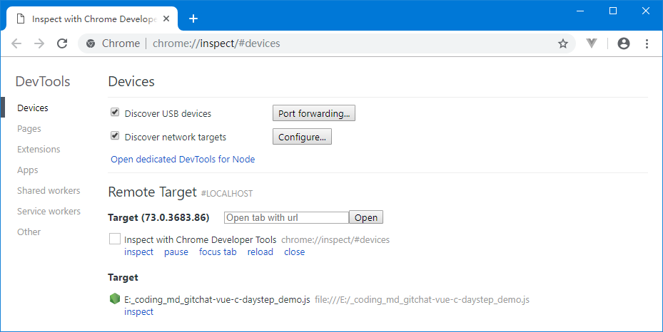
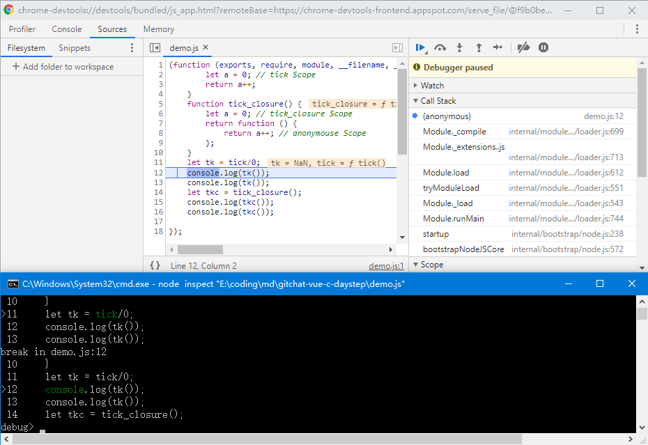
VS Code 调用 Node.js 调试器的方法有几种，前面演示 JavaScript 闭包这种是最直接执行的 Launch Program 方式，后面再介绍 Launch via npm、Attach、Attach to Remote Program 等方式。
比直接执行方式复杂点的是 Launch via npm，这种方式结合了 Node.js 模块管理工具 NPM 来运行调试。使用 Node.js 开发项目时，经常会用到 NPM 来下载安装项目中的依赖模块。项目根目录下会有个配置文件 package.json 记录项目信息，它包含了依赖模块 dependencies、项目脚本配置 scripts 等等。那些在开发阶段才被用到的模块则属于开发依赖模块 devDependencies，比如 uglifyjs 这个模块只是在发布前打包时，用来混淆加密脚本增加逆向工程难度的，在项目发布后这些模块就没有作用了。
{
"name": "vue-demo",
"version": "1.0.0",
"description": "A Vue.js project",
"author": "jimboyeah <jimboyeah@gmail.com>",
"private": true,
"scripts": {
"debug": "node --nolazy --inspect-brk=9229 demo.js",
"start": "npm run dev",
"build": "node build/build.js"
},
"dependencies": {
"vue": "^2.5.2",
"vue-router": "^3.0.1"
},
"devDependencies": {
"uglifyjs-webpack-plugin": "^1.1.1",
"vue-loader": "^13.3.0",
"vue-style-loader": "^3.0.1",
"vue-template-compiler": "^2.5.2",
"webpack": "^3.6.0",
}
}
VS Code 中的 Launch via npm 调试配置就是通过 runtimeExecutable 和 runtimeArgs 这两个参数实现对配置文件中的 debug 脚本的调用，如果需要运行其它脚本条目，只需要修改 runtimeArgs，端口设置 port 也要根据项目提供的调试器绑定的端口设置，执行调试时，相应的脚本命令被执行，Node.js 的 Inspector 调试器开始提供调试服务。
{
"type": "node",
"request": "launch",
"name": "Launch via NPM",
"runtimeExecutable": "npm",
"runtimeArgs": [ "run-script", "debug"],
"port": 9229
}
这个配置在执行时的等效命令就是:
npm run-script debug
Attach 或 Attach by Process ID 方式通过连接本地 Node.js Inspector 调试服务器进行调试，需要先执行 Node.js 调试器，参考前面介绍的使用方法设置好调试服务器端口。VS Code 与命令行终端结合越来越好，直接在 VS Code 就可以完成各种命令的执行，所以不必另开命令行去调用 Node.js 调试服务器。如果需要进行远进程调试，那么就需要将调试服务器绑定指定端口，并且在 VS Code 中使用Attach to Remote Program 方式进行调试，注意配置好地址和端口：
node --debug-brk[=port] <file> - 开启调试并绑定端口，可手动在代码插入断点 debugger; (legacy)
node debug <file> - 开启交互调试命令行，可手动在代码插入断点 debugger; (legacy)
在 VS Code 配置 Attach 的内容较少，request 设置为 注意端口配置号保持一致就可以了，远程调试除了 IP 地址和端口外，还需要设置本地目录 localRoot 和远程目录 remoteRoot，两者的代码文件是映射关系，调试时 VS Code 用來定位对应的代码文件。注意，Node.js 8.x 开始已经不支持旧的 V8 Debugger Protocol 协议，而 VS Code 中的 Attach to Remote 需要这个旧的协议，如果提示 legacy 时，说明当前运行的 Node.js 版本太新了，请使用 Node.js 8.x 以下版本。注意 Attach by Process ID 指定的进程 ID 的方式，${command.PickProcess} 这个点位符号会自动替换成系统中正在运行调试服务的 Node.js 进程的 PID。
{
"type": "node",
"request": "attach",
"name": "Attach",
// "protocol": "inspector",
"port": 5858
}, {
"type": "node",
"request": "attach",
"name": "Attach by Process ID",
"processId": "${command.PickProcess}"
}, {
"type": "node",
"request": "attach",
"name": "Attach to Remote - Node",
// "address": "localhost",
"port": 5858,
"localRoot": "${workspaceFolder}",
"remoteRoot": "/absolute/path/to/remote/directory"
}
代码地图
在这一小节来介绍一点代码地图 Source maps 知识。发布时的程序一般是会经过打乱压缩重排的，这主要是增加抄袭者的窃取成本，包括时间成本。而作为开发者，打乱后的代码是无法调试的，所有代码都接合在一起，根本没有行号的概念。为了方便开发者调试程序，Google 提议了代码地图方案，最新的修订版是 Source Map Revision 3 Proposal。要了解代码地图工作原理，可以参考 JavaScript Source Map 详解、Introduction to JavaScript Source Maps。简单地说，代码地图就是源代码与打包后的代码对应关系的映射，打包后拼接在一起的代码中的每个位置都能通过代码地图找到源代码文件上对应的位置。使用代码地图调试已经发布的程序时，遇到出错的时候，调试工具就可以从代码地图中获取到源代码相应位置信息，然后结合源代码显示出来，这样开发者就非清晰问题代码的位置了。
当下许多工具是具相当的编译的能力，如 TypeScript 它本身定义了一套与 JavaScript 有区别的语法规则，但是通过编译后的 TypeScript 程序是完全符合 JavaScript 语法规范的，正确地讲是转译而不是编译 Compiling Vs Transpiling，如下面一段 TypeScript 程序 app.ts：
class Student {
fullName: string;
constructor(public firstName, public middleInitial, public lastName) {
this.fullName = firstName + " " + middleInitial + " " + lastName;
}
greet(){
return "Hi "+this.firstName;
}
}
interface Person {
firstName: string;
lastName: string;
}
function greeter(person : Person) {
return "Hello, " + person.firstName + " " + person.lastName;
}
var user = new Student("Jane", "M.", "User");
console.log(user.greet());
console.log(greeter(user));
使用 NPM 命令安装 TypeScript 编译器，安装完后就可以使用编译命令 tsc 来将 app.ts 转译为 app.js，选项 sourceMap 表示生成代码地图:
npm install -g typescript
tsc --sourceMap --outDir . app.ts
编译后的 JavaScript 程序 app.js 如下，注意最后一行 sourceMappingURL 指示了代码地图的位置，同时代码地图 app.js.map 文件内又保存了 app.ts 源代码的位置信息：
var Student = /** @class */ (function () {
function Student(firstName, middleInitial, lastName) {
this.firstName = firstName;
this.middleInitial = middleInitial;
this.lastName = lastName;
this.fullName = firstName + " " + middleInitial + " " + lastName;
}
Student.prototype.greet = function () {
return "Hi " + this.firstName;
};
return Student;
}());
function greeter(person) {
return "Hello, " + person.firstName + " " + person.lastName;
}
var user = new Student("Jane", "M.", "User");
console.log(user.greet());
console.log(greeter(user));
//# sourceMappingURL=app.js.map
VS Code 内置的 Node.js 调试器支持代码地图 Source maps 来进行辅助调试。在 VS Code 中对 app.js 执行调试时，就可以根据最后一行读取到代码地图文件，再根据代码地图去读取 app.ts 源代码文件，在调试过程中就可以看到 app.js 的代码在相应的 app.ts 中是如何执行的，在这个场景里 app.ts 对于 app.js 来说就是代码地图的概念。在调试器配置文件中使用 sourceMaps 來启用代码地图，outFiles 用來指定转译后的文件位置，使用 Glob Pattern 匹配规则。
{
"type": "node",
"request": "launch",
"name": "启动调试",
"program": "${file}",
"sourceMaps": true,
"outFiles": ["${workspaceFolder}/map/*.js"]
}
通常 app.js 这种源代码不会直接发布，为了防止自己的作品被窃取，更多的时候需要将源代码经过打乱再打包再发行的过程，UglifyJS2 就是干这种事的工具，通过打包压缩混淆等步骤处理后，源代码会变得相对没那么容易被抄袭，刻意地提高了竟争者的抄袭成本。UglifyJS2 在打包的过程也可以生成代码地图，使用以下命令来安装 UglifyJS2。
npm install uglify-js -g
安装完成后确认一下 UglifyJS2 的版本，当前的是 uglify-js 3.5.2。再用它来压缩混淆打包 app.js，并生成压缩版的 app.min.js 和代码地图 app.min.js.map，-c -m 选项分别是压缩和打乱 Compress & Mangle，-b 则是相反操作用来美化格式。生成代码地图时 –source-map 选项用来设置代码地图的相关属性，支持代码地图的调试器如 Chrome DevTool 会根据 root 指定的位置，即 sourceRoot 指定的位置加载地图文件。
uglifyjs --version
uglifyjs app.js -o app.min.js -c -m --source-map "root='http://192.168.5.20/',url='app.min.js.map'"
uglifyjs app.min.js -o app.beautify.js -b
生成的代码地图大概是这样的
{
"version": 3,
"sources": ["app.js"],
"names": ["Student", "firstName","person", "user", "console", "log" ...... ],
"mappings": "AAAA,IAAIA,QAAyB,WACzB,SAASA,EAAQC,EAAWC,EAAeC,GACvCC,KAAKH......",
"sourceRoot": "http://192.168.5.20:8081/"
}
Chrome 浏览器默认情况下代码地图是启用的，可以进入开发者工具 DevTools 的配置面板进行设置，配置分类中找 Sources 栏目，查看 Enable javaScript source maps，对于 CSS 也可以使用 Enable CSS source maps。
- version Source map 的版本。
- sourceRoot 源代码文件根目录，如果与转换前的文件在同一目录，该项为空。
- sources 转换前的源代码文件，该项是一个数组，表示可能存在多个文件合并。
- names 转换前的所有变量名和属性名。
- mappings 记录位置映射信息的字符串。
代码地图的关键就是 mappings 属性，这是个字符串内用分号来对应代码的每一行，用逗号分隔的每个小串为一个位置信息。这个位置信息采用的是 Variable-length Quantity 编码结合 Base 64 码表生成的。
VLQ 编码是变长的，以 6-bit 为一个编码单元，如果待编码的数值在 [-15, +15] 区间，用一个编码单元表示就足够了，超出这个范围就使用用多个编码单元。编码单元的最高位为 1 时表示后续的编码单元同属于当前正在编码的数值，否则到处结束一个数值的编码。第一个编码单元的最低有效位表示符号位 sign，0 为正，1 为负。
对于代码地图，编码单元的符号位总是 0，以编码 16 这个位置信息为列，代码地图的编码过程可以这样进行：
- 将正数 16 转换成二进制 0b10000；
- 右边补充符号位 0 变成 0b100000，等待编码；
- 从最低有效位开始每 5-bit 分成一段，最高位所在的段不足 5bit 时前面补 0，结果为 0b00001、0b00000；
- 每段在最高位增加 1-bit 作为变长标志位，除了最后一段即最高有效位所在段为 0，其他都为1，结果为 0b000001、0b100000；
- 从最低有效位开始，将这些 6-bit 编码单元转换成 Base 64 编码，最低有效位开始这组作第一个字符依次拼接，即完成结果。
查 Base 64 码表，可知数值 16 的 VLQ 编码为 gB，那么反过来看代码地图文件里的 AAAA 其实是 [0, 0, 0, 0]，IAAIA 是 [4, 0, 0, 4, 0]，注意查表可知 I 取值 8，去掉符号位即除 2 后为 4。又如 2HwcqxB 表示 [ 123, 456, 789 ]，2 查表值 54 去变长标记位和符号位为 22 ，H 查表值 7 没有符号位最高是 0 并且作为前一个编码单元的最高有效位即取值 7 * 16，结果为 (54-32)/2+7 * 16=123，其它同理，可以使用工具去查验 Source map visualization tool。
Base 64 码表参考：
0 A 16 Q 32 g 48 w
1 B 17 R 33 h 49 x
2 C 18 S 34 i 50 y
3 D 19 T 35 j 51 z
4 E 20 U 36 k 52 0
5 F 21 V 37 l 53 1
6 G 22 W 38 m 54 2
7 H 23 X 39 n 55 3
8 I 24 Y 40 o 56 4
9 J 25 Z 41 p 57 5
10 K 26 a 42 q 58 6
11 L 27 b 43 r 59 7
12 M 28 c 44 s 60 8
13 N 29 d 45 t 61 9
14 O 30 e 46 u 62 +
15 P 31 f 47 v 63 /
现在尝试模拟程序的发布，将上面打包后的 app.min.js 通过 Web 装入 HTML 页面运行所有文件都存放在 map 目录下：
<!DOCTYPE html>
<html>
<head>
<meta charset="utf-8">
<title>Source map in Chrome</title>
</head>
<body><pre>
LastWriteTime Length Name
------------- ------ ----
2019-03-26 449 app.beautify.js
2019-03-26 656 app.js
2019-03-26 674 app.js.map
2019-03-26 385 app.min.js
2019-03-26 584 app.min.js.map
2019-03-26 510 app.ts
2019-03-26 183 index.html</pre>
</body>
<script src="app.min.js"></script>
</html>
保存好文件后，直接在 VS Code 的控制台上运行 PHP 调试 Web 服务器即可测试效果，只可以看到 Chrome DevTool 中显示的调试代码并不是压缩版本的 app.min.js 而是源代码，程序运行中的确实是用来模拟发布状态的压缩版程序：
php -S 192.168.5.20:8081 -t ./map
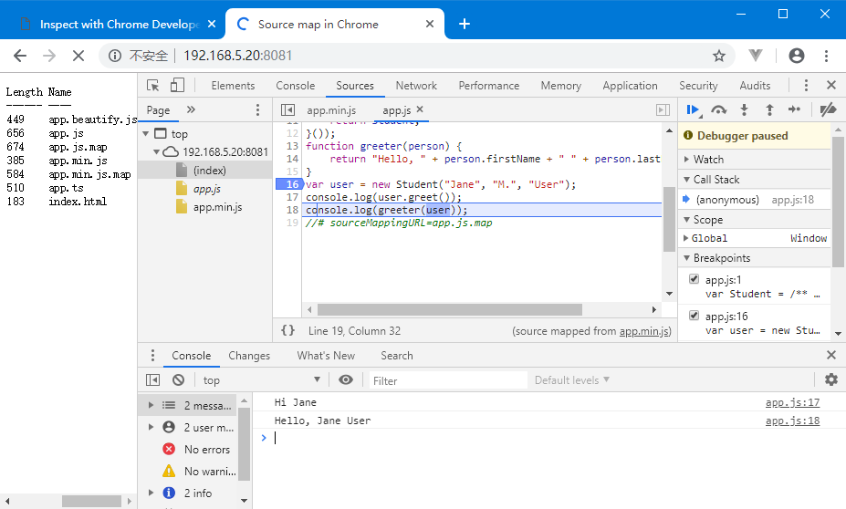
调试器的使用及更多的配置项可以参考官方文档 Node Debugger Documentation、Node Debugging - Getting Started、Debug Node.js Apps using Visual Studio Code
使用 Chrome 调试
调试配置文件中设置两种 Chrome 调试模式，一种是直接加载运行 Chrome 的 Launch 方式，一种是附着到正在运行的 Chrome 程序的 Attach 方式，二者最大的差别就是直接加载免去了手动运行 Chrome 的步骤，还可以通过 file 配置项来指定加载的文件，所以一般都选择 Launch 方式做调试。现在将两种方式的配置都添加上来，VS Code 的自动提示功能很体贴，配置文件中要添加或修改时，会自动提示指导内容：
"configurations": [
{
"type": "chrome",
"request": "launch",
"name": "Launch Chrome",
"breakOnLoad": true,
// "file": "${workspaceFolder}/index.html"
"url": "http://localhost:8080",
"webRoot": "${workspaceFolder}"
},
{
"type": "chrome",
"request": "attach",
"name": "Attach to Chrome",
"port": 9222,
"url": "http://127.0.0.1:8080",
"webRoot": "${dworkspaceFolder}"
}
]
一般做调试时需要一个 Web 服务器来给浏览器提供页面服务做在线调试，使用 NodeJS 开发环境可以很方便搭配好用于调试的 Web 服务器，当然如果安装了 PHP 也可以使用 PHP 自带的调试用 Web 服务器。附着模式调试时，也需要先启动 Chrome 的调试模式，两者的启动命令参考如下，工程目录作为服务器的根目录，使用浏览器打开 PHP 的调试 Web 服务器。Chrome 的调试端口需要和 VS Code 中配置的端口要一致。
php -S 127.0.0.1:8080 -t "E:\coding\md\vue"
chrome.exe --remote-debugging-port=9222
再打开需要调试的 HTML 页面文件，此时 Chrome 会通过调试协议将调试信息发送到 9222 端口。此时就可以启动 VS Code 安装的 Debugger for Chrome 插件连接到 Chrome 开始调试。如果配置文件中 url 没有指定，并且在 Chrome 运行了多个页面，VS Code 会在列表提示有多个程序等待调试，选中匹配的一个即开始调试。如果配置文件中指定了 url，那么只有完全匹配的那个页面才会进入调试状态，没有匹配结果，则 VS Code 不会开始调试。当然，没有 Web 服务器，也可以在离线狀態下做調試，在 Chrome 打开页面运行即可以做离线调试，避免 url 匹配不上，可以将其从配置中删去。
VS Code 连接上 Chrome 后，在中断程序时 VS Code 就会显示当前正在调试的代码，如果 VS Code 定位不到源文件，那么就会接收 Chrome 发送过来的处于只读状态的代码。连接成功后，VS Code 和 Chrome 两边的调试动作是互通，两边都可以独立做调试，但为了修改代码方便，还是会在 VS Code 界面上操作多点。配置中用到的工程路径信息 ${workspaceFolder} 会用来做源文件定位，因此最好将工程保存到文件。
在 Chrome 主界面，通过快捷键 F12 可以呼出开发者工具面板，点击其中的源代码标签，在面板右上角有个按钮可以打开调试面板，通过点击代码行号的位置设置断点，程序运行到断点时也会自动打开调试面板。转换到 Chrome 界面，除了面板布局有些差异，调试功能基本上是一致的。直接中断程序执行就可以开始跟踪代码，需要注意的是，尽量将脚本代码保存到独立的文件，因为在 VS Code 定位不到源代码文件时，会接收 Chrome 传送过来的代码，脚本如果在 HTML 内就可能会有行号不一致的情形。例如 HTML 中脚本标签内第 1 行代码，在 HTML 文件中是 99 行，那么 Chrome 发送到 VS Code 的行号就是 99，而 VS Code 如果只收到脚本代码块 script 标签内的部分，这就会对不上行号了。可以在任意时间退出调试，Chrome 会继续运行，并等待 VS Code 的下次调试连接。
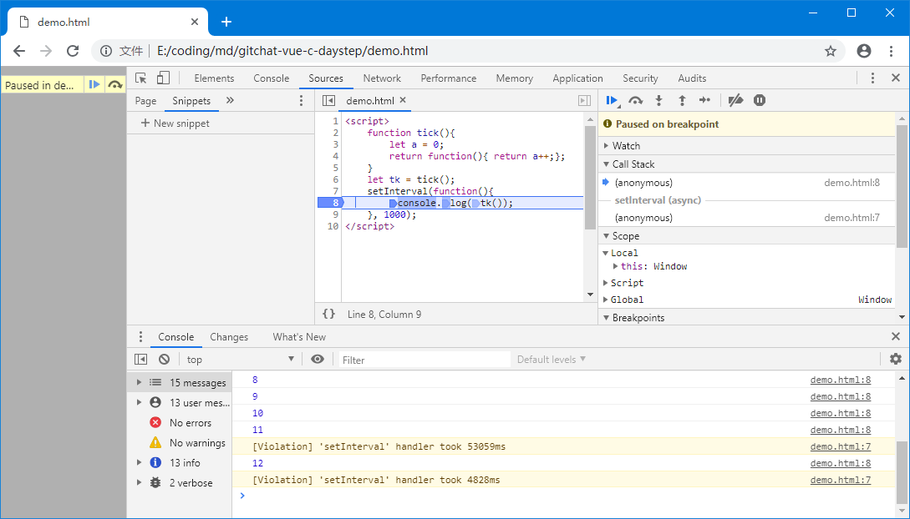
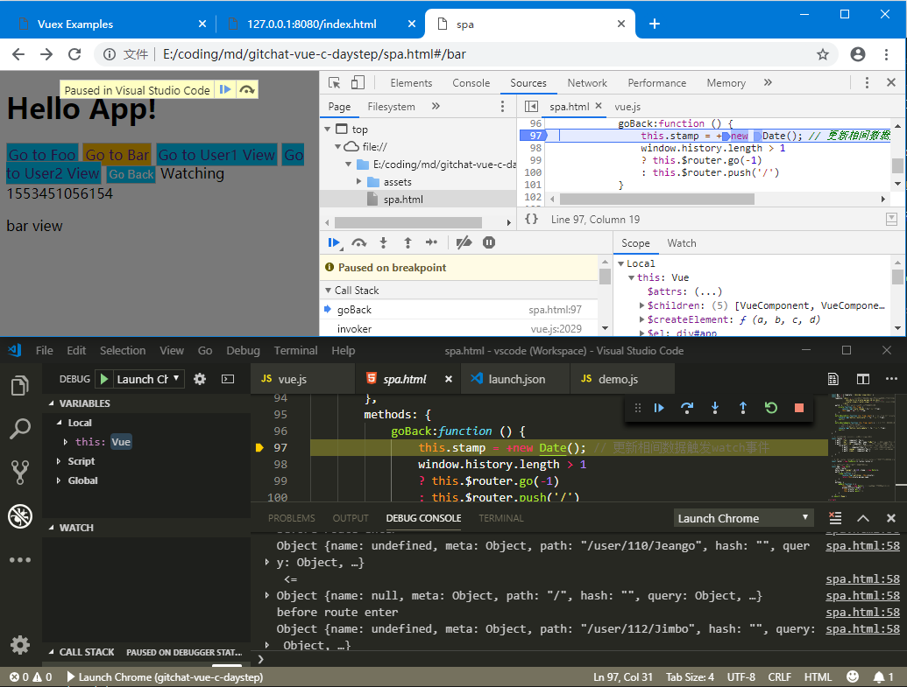
为了方便演示截图，上面调试中随意加载了一些项目文件，如果需要自己做一次演练，可以将前面使用过的 demo.js 引入到 index.html 文件中来调试，那只需要将以下内容保存到工程根目录下的 index.html 文件中：
<!DOCTYPE html>
<html>
<head>
<meta charset="utf-8">
<title>Debug in Chrome</title>
<script src="demo.js"></script>
</head>
<body>
</body>
</html>
使用 Xdebug 调试 PHP
对于熟练的 PHP 程序员，最好用的调试工具莫过 echo、print_r()、var_dump() 等内置函数，对 于有较丰富开发经验的程序员来说，可以在程序执行的过程的关键点将调试信息打印出来，通过输出特定变量的值可以判断程序执行是否正确，甚至效率高比调试器要高。
Xdebug 是 Derick Rethan 开发的开源 PHP 调试器，具有函数调用堆栈的跟踪回溯功能，可以根据程序的执行一步步跟踪到出错的具体位置。对于新手，调试器使用起来可能比较简单，但配置好它却不见得是那么容易的事。首先认识一下 Xdebug 的工作原理，Xdebug 是作为 zend-extension 扩展加载的，加载后会接手 PHP 系统的异常处理，代码出错或异常时就将堆栈的信息及错误信息格式化后输出。同时，Xdebug 可以作为远程调试服务器运行，在程序出错时，向指定的端口发送调试信息，默认端口是 9000。而客户端则通过监听 Xdebug 调试服务器来实现交互式调试。
首先，根据本系统安装的 PHP 版本，到 Xdebug 官方下载编译好的扩展文件，下载时选择正确的操作系统版本，32/64 Bit 构架或线程安全性 TS/NTS([Not]Thread Safety) 要跟本系统安装好的 PHP 保持一致。下载好扩展并放到当前系统 PHP 扩展目录下，如果不清楚，可以使用以下命令调用 phpinfo() 函数将配置信息打印出来：
php -r "phpinfo();"
配置信息不仅包含扩展目录位置 extension_dir 还包含有配置文件的位置 Loaded Configuration File，Xdebug 扩展文件放好后，需要编辑器 php.ini 配置文件，在动态扩展 Dynamic Extensions 位置添加一条 Zend Extension 配置，相应修改自己下载倒的扩展文件：
zend_extension=php_xdebug-2.5.1-5.6-vc11-nts-x86_64.dll
再找到模块配置 Module Settings 添加 Xdebug 的设置，主机和端口都可以不填，除非需要做远程调试，其中端口默认为 9000。以下配置打开了远程调试，主机 IP 可以根据自己的情况修改：
[XDebug]
xdebug.remote_enable = 1
xdebug.remote_autostart = 1
xdebug.remote_host = 192.168.5.20
xdebug.remote_port = 9000
安装好好扩展后，重启 Web 服务器，如果在本机做测试，可以使用 PHP 5.6 内置的调试服务器，或直接使用 PHP CLI 命令行来执行待调试的程序。再次通过 phpinfo() 是否有 Xdebug 配置信息，安装不成功是不会有相关配置信息给出的：
php -S 127.0.0.1:8080 -t "c:\webroot"
php -f demo.php
接下来配置 VS Code，本地执行和远程调试两种方式都设置好，第一项配置用调试当前激活状态的文件，第二项用来做远程调试，在 PHP 运行之前，VS Code 先侦听远程主机的调试端口，然后再执行被调试的代码，当 Xdebug 接收到异常或错误时，会将调试信息发送到 VS Code 并进入中断状态，通过配置项目 pathMappings 来定位保存在本地的源文件：
{
"version": "0.2.0",
"configurations": [
{
"name": "Launch currently open script",
"type": "php",
"request": "launch",
"program": "${file}",
"cwd": "${fileDirname}",
"port": 9000
},
{
"name": "Listen for XDebug",
"type": "php",
"request": "launch",
"hostname": "192.168.5.20",
"port": 9000,
"stopOnEntry": true,
"pathMappings": {
"/www": "${workspaceRoot}/www"
}
}]
}
在 VS Code 执行有 XDebug 监听后，再运行以下代码测试调试效果，先将测试代码保存到 www 目录 index.php 文件，再执行：
<?php
// phpinfo();
$i = $argc / 0;
var_dump($i);

Emmet (Zen-Coding)
Emmet 最早的名字叫 Zen Coding，它本身是脚本编程的典范，Emmet 的最大的价值就是提供字符串自动化处理的能力，通过对输入字符串的处理生成开发者需要的代码片段能大大节省编写代码的时间，节省出来的时间可以用在软件设计代码功能逻辑的优化上来。花大量时间写代码不见得是好事，如果没有大量的思考，自己写出来的东西可能自己都不敢相认。所以在遇到自己的作品还不禁要吐槽的情况出现之前，好好想想手上的代码任务该怎么写比一上来就开始写代码更有价值。
Emmet 作为通用的代码生成工具，现如今普遍集成在主流的编辑器上，Editplus 和 VS Code 都内置了 Emmet，Sublime Text 则需要安装第三方插件来使用。究竟 Emmet 如何帮助开发者节省代码输入时间，先来看一段全能的演示代码，假设现在需要编辑以下一段 HTML 文件内容，我测试了一下应该是几分钟内的事：
<view class="header"></view>
<view class="navigator"></view>
<view class="container">
<view class="item" title="demo1">1</view>
<view class="item" title="demo2">2</view>
<view class="item" title="demo3">3</view>
<view class="item" title="demo4">4</view>
<view class="item" title="demo5">5</view>
<view class="item" title="demo6">6</view>
<view class="item" title="demo27">7</view>
<view class="item" title="demo8">8</view>
<view class="item" title="demo9">9</view>
<view class="item" title="demo10">10</view>
</view>
<view class="footer"></view>
现在有了 Emmet 这个工具就有了另一个选择，以脚本方式书写，只要输入一行代码就等效上面的 HTML 片段，这个只需要几十秒时间:
view.header+view.navigator+view.container>view.item[title=demo$]{$}*10^view.footer
几分钟和几十秒的对比可能不够节省时间，但是对于专业的写手，类似这样的工作可能每天都要重复千百回，这样下来节省的时间就有意思了，你可以选择准点下班，或者约个同样准点下班的朋友去嗨皮都是可以的。想要过不一样的生活，那么就花个几十分钟时间学习一下 Emmet 脚本吧。
先来解析一下这行代码的用到的几个符号，右箭头 > 表示进入子节点，加号 + 表示在同级节点，上箭头 ^ 表示退回上一级节点，方括号 [title=demo] 表示设置节点属性，多个属性使用空格分开，属性值有空格时要使用双引号将属性值包括起来，花括号则 {} 表示设置节点内部内容。最后美元符号 $ 和星号 * 分别表示引用序号和重复生成，星号后的数字表示重复次数，可以使用圆括号 () 包括要重复生成的部分。圆点和井号分别对应 class 和 id 两个属性，后面的字符就是对应的属性值，都可以省略不写。那么整条 Emmet 脚本的转换就是，先生成一个 view.header 再在同级节点生成一个 view.navigator，再在同级节点生成一个 view.container，然后进入此节点内部生成十条带有序号的 view.item 并设置 title 属性以序号填充，最后回到上一级节点，生成一个 view.footer 结束，view 这个标签是微信小程序使用的通用标签，并不是 HTML 的标准。
编写要 Emeet 脚本内容后，再按下 Ctrl+E 就会得到一段自动生成的代码。在 Editplus 上需要在菜单上开启 Emmet => Use Emmet。 除了前面介绍的基本功能，还有可以指定基数的降序 功能 @-，管道过滤函数功能 |，能将 HTML 标记转义，以下是 Emmet 语法参考。
E#name: div#name => <div id="name"></div>
E.name: div.name => <div class="name"></div>
E>E: head>link => <head><link/></head>
E>E^E: div>p^h1 => <div> <p></p> </div> <h1></h1>
E+E: p+p => <p></p><p></p>
{text}: p>{Click }+a{here}+{ to continue} => <p>Click <a href="">here</a> to continue</p>
E[attr]: img[title alt=demo] => <img src="" alt="demo" title="">
(group): div(i.$$*2) => <div> <i class="01"></i><i class="02"></i> </div>
E|filter: p.title|e => <p class="title"></p>
E*N: p*3 => <p></p><p></p><p></p>
E*N$: p.name-$*3 => <p class="name-1"></p><p class="name-2"></p><p class="name-3"></p>
@-: div.$$@-*2 => <div class="02"></div> <div class="01"></div>
@N: li.i$@3*2 => <li class="i3"></li> <li class="i4"></li>
@-N: li.i$@-3*2 => <li class="i4"></li> <li class="i3"></li>
E+: table+ => <table> <tr> <td></td> </tr> </table>
VS Code 中会有自动完成提示，直接按回车就可以生成，也可以在主界面右下角的齿轮状配置按钮中进入快捷键设置，搜索 Emmet Expand Abbreviation 指定一个快捷键来执行，使用中 VS Code 内置 Emmet 功能实现还不够全面，如降序管道函数等功能没有实现。
Sublime 的功能比较丰富一点，它支持实时输入，快捷键是 Ctrl+Alt+Enter，然后在输入框中输入，编辑器会实时更新所输入的内容。同时还附加了数值调整的功能，把光标放在数值位置，按下 Ctrl+上下方按键，Alt+上下方按键，Alt+Shift+上下方按键，分别对数值进行加减 1、0.1、10 的操作。
Vue 组件化开发
目前流行的前端开发技术基本都是组件化，像 Angular 的第一版组件化就没有得到应有的重视，在第二版才将成熟的组件化概念引入。在众多组件化框架中，Vue 以小巧而著称。Node.js 带来的生产力完全则将原本在客户端完成的组件渲染工作迁移到服务器上完成，即服务器端渲染 SSR，Vue 使用 vue-server-renderer 来构建 SSR 应用时默认需要 Node.js 环境。React 作为组件化技术的引领者，可以结合 Next.js 实现服务端渲染。
在软件工程上来说，组件化的本质就是抽象数据结构 ADT，和 C++ 面向对象语言中的抽象数据类型是同一个概念。通过抽象，视图被拆分成一个个看似零散的组件，但通过组合重构出应用界面，是一个极高效的软件利用技术。通过拆解重构，应用中不同视图中需要相同的某个组件时，由于组件的这种复用性质，使用应用后期的可维护性得到了极大的提升。可以想像，如果不是组件化的一个应用，随着工程规模的增大，那些重复的使用代码片段将会断增长，亦即同一功能的代码会在整个工程存在多个副本。这种现象也应该归属于代码高耦合的一种情况，是功能代码的分散耦合，直接带来的后果就是后期维护成本增加，后续开发难度增加，应用的稳定性下降。
Vue 框架基本原理
Vue 实现双向数据绑定的原理就是利用 ECMAScript 5.1 规范中定义的 Object.defineProperty() 属性定义接口，这个方法用来定义对象属性描述符。对象属性描述符有数据描述符和存取描述符。数据描述符是一个具有值的属性，可以配置读写性 writable。存取描述符是由 Getter、Setter 函数描述的属性，即对属性读写时的关联函数。描述符必须是这两种形式之一，不能同时是两者，简单地说就是 get、set 和 value、writable不能同时定义。这个属性定义接口在 Internet Explorer 9 中才被支持，IE8 虽然实现这个接口但只能在 DOM 对象上使用，这就是 Vue 不支持旧版 IE8 的原因。
当属性设置为 writable 为 false 时，该属性处于只读状态，对属性赋值时不会发生错误也不会改变原值。enumerable 定义了对象的属性是否可以在 for-in 循环和 Object.keys() 中被枚举，默认为 false。使用 oo.anotherProperty=123 这样直接赋值的方式创建对象的属性，则这个属性是可以被枚举的，enumerable 为 true。configurable 特性表示对象的属性是否可以被重新配置，以及除 value 和 writable 特性外的其他特性是否可以被修改，也就是说，当属性定义为不可配置时，对 enumerable 或 Getter、Setter 方法重新定义时会抛出异常。
var oo = { _value:1 };
Object.defineProperty(oo,'value', {
// value:9,
// writable: false,
enumerable: true,
configurable: true,
get: function(){
console.log("get value...", this._value);
return this._value;
},
set: function(value){
this._value = value;
console.log(`set value... ${this._value}`);
}
});
var i = oo.value;
oo.value += 1;
Vue 实现数据绑定的做法是通过 Object.defineProperty() 劫持数据，再通过 Publish–Subscribe Pattern 发布-订阅开发模式来管理数据变化，发布-订阅模式中 Vue 充当了发布者 ，Watcher、Computed 设置的方法则是订阅者，同时又是，Vue 劫持数据监听到数据变更时对订阅者发起调用通知数据更新。监听到 data 的数据有变化时，Vue 还会判断数据是否是原有数据对象的引用，如果不是则进入视图更新流程，用新数据渲染，这就是 Vue MVVM 原理。这个过程中 Vue 还使用了 观察者模式 Observer Pattern，和发布-订阅模式一样，都用来降低耦合度。发布订阅模式里，发布者和订阅者，不是松耦合，而是完全解耦的。相对 Watcher 来说，Vue 对计算属性 Computed 处理显得更像观察模式，即观察者通过观察计算属性中被依赖的数据来进行响应。而发布订阅模式里，除了发布者和订阅者两个角色，还有经常被忽略的经纪人 Broker，只是这个角色在代码实现上不太明显有独立模块实现。
Vue 程序基本结构
在 Visual Studio Code 开发 Vue 项目章节中已经展示了如何通过官方提供的 Vue CLI 工具以单文件组件方式进行开发。这里直接通过引入 Vue 源代码的方式编写一个 Vue 程序来展示几段 CSS3 样式效果，借此展示 Vue 程序的基本结构。首先准备一个样式文件 theme.css 内容如下，主要是配置了几个样式背景效果模板:
.item { background:#f9d29f; font-weight: bold; padding:2em; text-shadow: 0 0px 3px cornsilk, 1px 0px 2px white; }
.dark-style {
color: bisque;
background-color: #282828;
background-image:
radial-gradient(black 15%, transparent 16%),
radial-gradient(black 15%, transparent 16%),
radial-gradient(rgba(255, 255, 255, 0.1) 15%, transparent 20%),
radial-gradient(rgba(255, 255, 255, 0.1) 15%, transparent 20%);
background-position: 0 0px, 8px 8px, 0 1px, 8px 9px;
background-size: 16px 16px;
}
.patternA {
background-size: 50px 50px;
background-color: white;
background-image:
-webkit-linear-gradient(to top,transparent 50%, rgba(200, 0, 0, .5) 50%, rgba(200, 0, 0, .5)),
-webkit-linear-gradient(to left, transparent 50%, rgba(200, 0, 0, .5) 50%, rgba(200, 0, 0, .5));
background-image:
linear-gradient(to top,transparent 50%, rgba(200, 0, 0, .5) 50%, rgba(200, 0, 0, .5)),
linear-gradient(to left, transparent 50%, rgba(200, 0, 0, .5) 50%, rgba(200, 0, 0, .5))
}
.patternB {
background-color: #88AA33;
background-image:
radial-gradient(circle at 33% 45%, transparent 9px, #661133 10px, transparent 11px),
radial-gradient(circle at 100% 84%, transparent 9px, #661133 10px, transparent 11px);
background-position: 0 10px, 0 0%, 0 0;
background-size: 20px 20px;
}
.patternC {
background-color: cornsilk;
background-image:
radial-gradient(circle at 0% 50%, #404040 9px, transparent 10px),
radial-gradient(circle at 100% 50%, #cccccc 9px, transparent 10px);
background-position: 0 50px, 0 15px;
background-size: 48px 24px;
}
.patternD {
background-color: cornsilk;
background-image:
radial-gradient(circle at 50% 50%, #c0c0c0 4px, #323232 4px, #323232 12px, transparent 13px),
radial-gradient(circle at 50% 50%, #323232 4px, #c0c0c0 4px, #c0c0c0 12px, transparent 13px),
radial-gradient(circle at 0% 50%, #323232 24px, transparent 0px),
radial-gradient(circle at 100% 50%, #c0c0c0 24px, transparent 0px),
none;
background-position:25px 8px, 25px 32px, 0 20px, 0 20px;
background-size: 52px 52px;
}
body {
background:
repeating-radial-gradient(circle, #e8e1d7 0, #e6e5bb 16px, transparent) 0px 0px,
repeating-radial-gradient(circle, #f39117 0, #f93333 16px, transparent) 25px 25px;
background-position: -6px -8px, 0px 0px;
background-size: 5px 5px;
}
然后是 HTML 页面骨架，此 Vue 示例程序运行效果如图所示：
<html>
<head>
<meta charset="utf-8">
<title>VUE 组件开发 c-daystep </title>
<meta name="viewport" content="width=device-width, initial-scale=1">
<script src="https://cdn.staticfile.org/vue/2.2.2/vue.min.js"></script>
<link rel="stylesheet" href="theme.css">
<style> /*more styles here...*/ </style>
</head>
<body>
<div id="app">
<div :class="'item '+item.className" v-for="(item,index) in lists"> {{index+1}} - {{item.title}} </div>
</div>
<script>
var vm = new Vue({
el: '#app',
data: {
lists:[
{title:"Pure Color", className:"light-style"},
{title:"Repeating gradient",className:"dark-style"},
{title:"PatternA lineat gradient", className:"PatternA"},
{title:"PatternB circle", className:"PatternB"},
{title:"PatternC serpent",className:"patternC"},
{title:"PatternD Traditional Taiji",className:"patternD"}
]
}
});
</script>
</body>
</html>
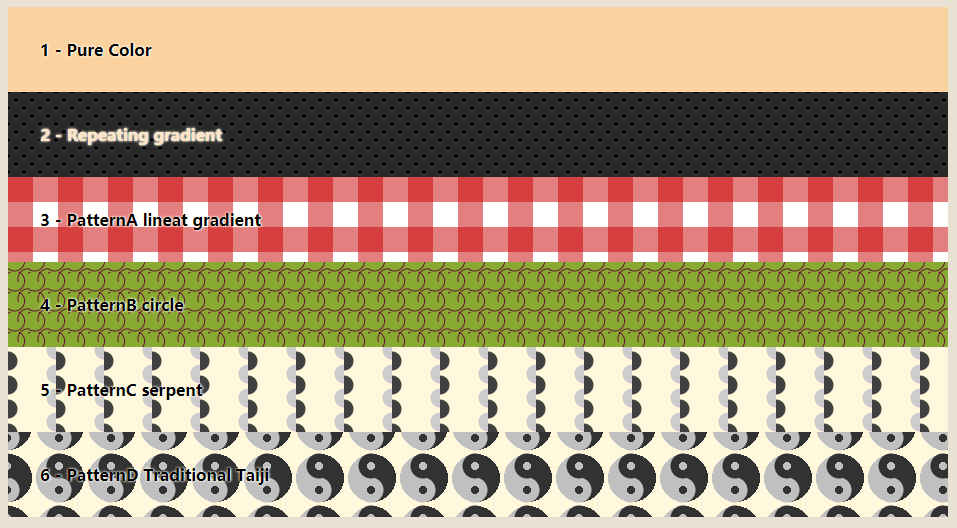
如果除一些样式、基本的 HTML 元素外，一个 Vue 程序可以有三部分构成，一是 vue.min.js 源代码引入，二是一个初始化视图容器 <div id="app"/>，还有 Vue 实例化脚本 new Vue("#app")，如果不考虑程序功能，程序可以精简成以下几行代码，挂载到视图容器是通过挂载方法 vm.$mount() 完成的，即使将 id 选择器通过 el 参数传入，翻查 Vue 源代码可知，在其初始化模块中 init.js 也会执行这个方法进行挂载，进而转到 lifecycle.js 模块中的 mountComponent() 方法。：
<script src="https://cdn.staticfile.org/vue/2.2.2/vue.min.js"></script>
<div id="app"></div>
<script>
// var vm = new Vue({ el: '#app' });
var vm = new Vue().$mount("#app");
</script>
如果在实例化 Vue 时传入了模板参数，如 template:"<div> ... </div>"，那这个模板将拥有更高的优先权，el 参数指定的 HTML 节点内容将被模板参数指定的内容取代。模板定义的方式有多种，最简单的就是直接在属性中指定模板字符串，注意指定模板时，必有且只能有一个顶级 HTML 标签作为视图容器，这个视图容器的作用和 el 参数指定的容器是一样的。这种模板定义方法可以结合 ES6 的模板字符串即反引号语法，这样定义模板时可以直接换行，这是你通过常规的 JavaScript 字符串没法做到的。正如前面在 Visual Studio Code 开发 Vue 项目章节中提到的，渲染函数可以直接用来构造视图，它的优先级别是三种方式中最高的，以下例子可以测试 el、template、render 三者优先级。
<template id="template-panel"> <div> .....! </div> </template>
<div id="app" class="app"> ...... </div>
<script>
var app = new Vue({
el: "#app",
template: "#template-panel",
render:function(c){return c("div","render...");}
})
</script>
还有一种常用的模板定义方式 X-Templates，就是通过自定义 type 属性的脚本标签 <script> 来定义模板，type 属性设置 MIME 类型，现代浏览器默认的是 text/javascript 脚本代码。用来定义 Vue 模板时，可以设置诸如 text/jsx、text/x-template、text/babel 这样的值，反斜杠后的类型可以是任意的，Vue 会根据 id 值来获取模板。
<script type="text/x-template" id="template-panel">
<div class="item"> {{title}}: text/x-template! </div>
</script>
<script>
var app = new Vue({
el: "#appd",
data:{title:"templates style"},
template: "#template-panel"
})
</script>
内联模板 inline-template，比较少用到，相当于 Vue 组件的一个定义方式，这种模板要求放在视图容器下，否则不会被渲染，参考 7 Ways To Define A Component Template in Vue.js：
<div id="app" class="app"> ......!
<panel inline-template>
<div class="item">{{title}}: my inline template...</div>
</panel>
</div>
<script>
Vue.component('panel', {
data() {
return { title: 'inline template' }
}
});
var app = new Vue({ el: "#app" })
</script>
前面内容已经提到 React 制定的 JSX 也就是 JavaScript 和 XML 结合体，也可以用在 Vue 的模板上。JSX 语法来创建虚拟 DOM 时，遇到 < 位置就开始以 HTML 节点解析，遇到 { 就当 JavaScript 解析。直接在 HTML 页面上使用 JSX 脚本是不建议的，在浏览器直接运行 Babel-Standalone 来转译 JSX 是效率极低的，具体参考前面关于软件技术进化部分的内容。使用 Vue 单文件组件开发，转译 JSX 模板会用 Babel plugin 插件，在发布时，JSX 模板会经过转译成为 render 函数的一部分，这就可以避免在浏览器上进编译的工件。
在组件开发过程中，有可能遇到这样的情况，组件无法预先得知传入的内容，比如想把特定的 HTML 放到组件内部渲染，这时就需要使用插槽功能。通过在组件模板中定义插槽 <slot> 可以开发像 HTML 原生标签一样可以嵌入内容的组件，如果组件没有设置 <slot> 元素，则组件标签内部的任何内容都会被丢弃。插槽内可以设置默认内容，当组件标签没有接收到传入的内容时就会显示插槽的默认内容，否则默认内容被替换掉。插槽可以被命名，在使用组件时，可以指导内容放在指定名字的插槽上，没有指定插槽名字，那么就使用默认值 name="default"。在 Vue 2.6.0 中为具名插槽和作用域插槽引入了一个新的统一的语法即 v-slot 指令，它取代了 slot 和 slot-scope 这两个目前已被废弃但未被移除且仍在文档中的特性，可以使用 Vue.version 来确认当前使用的 Vue 版本。注意 v-slot 只能添加在一个 <template> 上，与 Vue 2.6.0 中废弃的 slot 特性不同。有一种例外情况，只有默认插槽时就可以把 v-slot 直接用在组件标签上，即独占默认插槽的缩写语法。还有插槽特性如动态插槽名、具名插槽的缩写、解构插槽 Prop、作用域插槽，可以参考官方文档 Components Slots。
<div id="app" class="app">
<panel>
<p slot="subslot">Sub Title</p>
<p>Main Title</p>
</panel>
</div>
<script type="text/x-template" id="template-panel">
<div class="item">
<h1><slot>Default Main Title...</slot></h1>
<h2><slot name="subslot">Default Sub Title...</slot></h2>
</div>
</script>
<script>
Vue.component('panel', { template: "#template-panel"});
var app = new Vue({el: "#app"})
</script>
执行 new 实例化 Vue 时，Vue 程序开始进入其生命周期，除了前面提到的挂载过程，VUE 生命周期还有另外两个明显的周期阶段，一时完成模板挂载阶段进入监视状态，这个过程是 Vue 的主要运行状态，数据绑定就在这个阶段进行监视并触发观察属性和计算属性的相应行为，需要更新视图的则重新渲染。二是结束销毁过程，通过 vm.$destroy() 方法触发销毁，Vue 没有类似 unmount 的方法，如果想更换视图容器内的模板，需要重新设置容器内的 innerHTML 内容。
+------------+ +-------------------------+ +----------------+ +------------------------------+
> new Vue() +-->+ Init Events & Lifecycle +-->+ beforeCreate() +--->+ Init Injections & reactivity |
+------------+ +-------------------------+ +----------------+ +-------------------+----------+
|
+------------------------+ +---------+----------+
+-- YES <--+ Has "template" option? +--+ | created() +
| +----------------+-------+ | +---------+----------+
| | | |
+----------------+--------------------+ | | +---------+----------+
+---<--+ Compile template as render function | | +--- YES <--+ Has "el" option? |
| +-------------------------------------+ | | +--------------------+
| | |
| +-------------------------------------+ | | +--------------------+
+---<--+ Compile el's outerHTML as template +-<----NO +---<----<--+ vm.$mount() called +---<
| +-------------------------------------+ +--------------------+
|
+---+-------------+ +--------------------------------------+ +-------------+ +-----------+
| beforeMount() +-->--+ Create vm.$el & replace "el" with it +-->--| mounted() +-->--+ MOUNTED |
+-----------------+ +--------------------------------------+ +-------------+ +-----+-----+
|
+----------------------+ +--------------------+ +---------------+----+
+--<---+ vm.$destroy() called +-----+--<--+ - beforeUpdate() - +--<---<----+ when data chaanges |
| +----------------------+ | +--------------------+ +------------------+-+
| | |
+---+---------------+ +------+--------------------------+ +-----+-------+ |
+ breforeDestory() | | Virtual DOM re-render and patch +-->--->---+ updated() +-->-+
+---+---------------+ +---------------------------------+ +-------------+
|
+---+---------------+
| Teardown watchers | +-------------+ +-------------+
| child components +-->--+ Destroyed +-->--+ destroyed() +---->END
| event listeners | +-------------+ +-------------+
+-------------------+
在整个程序运行过程中，以下生命周期事件及方法依次发生，在事件中如果有属性读写，那相应的 getter 或 setter 以及 watch,computed 函数也会被调用。解构事件 beforeDestroy() 和 destroyed() 会在 vm.$destory() 方法调用时触发。在 mounted 之前，内部的视图属性 vm.$el 会被创建并挂载到 HTML 节点上，之后就开始状态监测循环，根据数据更新来进行响应。beforeUpdate()
和 updated() 两个事件只在全局的 Vue 程序对象有效。对于 keep-alive 模式，还有 activated() 和 deactivated() 事件，相对VUE1.0的事件有较大的变动：
* beforeCreate()
* data 构造函数
* created()
* 判断 el 参数是不是存在，或者调用 vm.$mount(el) 来挂载视图
* 判断 template 模板参数是否存在，存在则编译模板作为 render 渲染函数，否则对 el 节点的 outerHTML 进行渲染
* beforeMount()
* mounted()
* beforeUpdate() 这里更新数据不会触发附加的重渲染过程
* updated()
* beforeDestroy()
* destroyed()
在 Vue 程序运行过程中进入已加载状态时，程序主要关心计算属性、侦听属性和方法，即在实例化 Vue 时配置的 computed、watch、methods 三块内容。在 methods 中定义的方法可以直接由外部调用，也可以当作事件处理器来使用。计算属性、侦听属性都可以用来监测数据属性的变化，但侦听属性一般只针对一个属性进行侦听，而计算属性可以分析到计算式中依赖到的其它属性的变化，因此需要响应多个数据属性变化时优先考虑使用计算属性。
Vue 基本语法元素
在前一小节内容中，重点介绍了 Vue 程序的执行流程以及模板与视图容器的概念，接下来重点内容放在模板中。Vue 中模板是要经过编译的，编译结果就是一个 render 渲染函数，前面介绍到可以通过直接定义渲染函数来生成自定义的视图。换句话说模板是有函数作用域的，模板在加载到哪个组件，其作用域就是哪 个组件。在模板中使用的数据与当前编译模板的组件直接相关，通过 Vue 定义的指令符，可以将作用域下的数据对象 data 中的属性填充到模板内生成，最后结果就是使用数据渲染视图。
模板中使用 Mustache 语法来访问数据，并将数据绑定到指定的模板位置上。Mustache 是一个轻逻辑模板解析引擎 Logic-less templates，轻逻辑的优势在于可以灵活应用在各种语言上，如 JavaScript、PHP、Python、Perl、C++ 等等等，现已经成为 Angular、React、Vue 的标配。Vue 中 Mustache 不能作用在 HTML 标签属性设置上，这种情况应该使用 v-bind 指令。布尔属性存在布尔数据类型暗示，v-bind 会将绑定数据转换为布尔值，如例子 isButtonDisabled 的值是 null、undefined 或 false 其中之一则 disabled 属性不会渲染到 <button> HTML 标签中。
<div v-bind:id="dynamicId"></div>
<button v-bind:disabled="isButtonDisabled">Button</button>
指令 Directives 是带有 v- 前缀的特殊属性，预期接收单个 JavaScript 表达式，v-for 是例外情况。通过指令设置的表达式，使模板在数据发生变化并引起 Vue 进入渲染行为时，能够响应式地作更新视图。在模板绑定数据，Vue.js 提供完全的 JavaScript 表达式支持。这些表达式会在所属 Vue 实例的数据作用域下作为 JavaScript 被解析。有个限制就是，每个绑定都只能包含单个表达式，所以表达式中使用了 var、if 之类的关键字就是无效表达式。模板表达式都被放在沙盒中，只能访问全局变量的白名单，如 Math 和 Date。
v- 前缀作为一种视觉提示，用来识别模板中 Vue 特定的特性。v-bind、v-on 作为频繁用到的两类指令来说，Vue 为其提供了特定简写：
<a v-bind:href="url"> ...完整语法... </a>
<a :href="url"> ...缩写... </a>
<a v-on:click="doSomething"> 完整语法 </a>
<a @click="doSomething"> 缩写 </a>
修饰符 Modifier 是以半角句号指明的附加特性，例如 .prevent 修饰符告诉 v-on 指令对于触发的事件调用 event.preventDefault() 即取消浏览器的默认行为。
从 Vue 2.6.0 开始，可以用方括号括起来的 JavaScript 表达式作为一个指令的参数，表达式会进行动态求值，求得的值将会作为最终的参数来使用。如下，通过 attributeName 动态属性给链接设置一个属性，而不一定是 href。也可以通过这种方式给链接标签绑定一个任意的事件处理器，具体绑定什么函数取决于 eventName 的求值结果，假设当 eventName="focus" 时，v-on:[eventName] 将等价于 v-on:focus。动态参数表达式有一些语法约束，不能使用空格和引号这类字符，放在 HTML 属性名里是无效的。同样在 DOM 中使用模板时你需要回避大写键名。
<a v-bind:[attributeName]="url"> ... </a>
<a v-on:[eventName]="doSomething"> ... </a>
接下来的内容更多是整理自官方文档，不过也经过了重新的组织，可以根据需要选择参考的内容。
类与样式的增加特性
操作 HTML 标签的 class、style 属性是一个常见需求，将 v-bind 用于这两个属性时，Vue.js 做了专门的增强，表达式结果的类型除了字符串之外，还可以是对象或数组。当在一个自定义组件上使用 class 属性时，这些类将被添加到该组件的根元素上面，并且这个元素上已经存在的类不会被覆盖。使用 v-bind:style 会自动添加浏览器引擎前缀的 CSS 属性，如 transform，会自动增加各种浏览器前缀。
div {
transform: rotate(7deg);
-ms-transform: rotate(7deg); /* IE 9 */
-moz-transform: rotate(7deg); /* Firefox */
-webkit-transform: rotate(7deg);/* Safari 和 Chrome */
-o-transform: rotate(7deg); /* Opera */
}
对于多重值的情形，从 Vue 2.3.0 起可以为一个样式属性提供包含多个值的数组，常用于带浏览器前缀的值。如下，浏览器会从中选择一个支持的值：
<div :style="{ display: ['-webkit-box', '-ms-flexbox', 'flex'] }"></div>
常用模板指令格式快速参考：
<p v-bind:class="{ active: isA }"></p> isA 为真值时 class="active"
<p v-bind:class="classObject"></p> classObject 可以是一个计算属性，参考 c-daystep 组件实现关于 computed 部分
<p v-bind:class="{active:isA,'s-danger':isB }" class="static"></p> isA、isB 都为真值时 class="static active s-danger"
<p v-bind:class="[activeClass,errorClass]"></p> 数组数据，最终样式取决数据元素 activeClass、errorClass 的值
<p v-bind:class="[isActive? activeClass:'', errorClass]"></p> 使用三元运算的数据元素
<p v-bind:class="[{ active: isActive }, errorClass]"></p> 使用关联对象的数据元素
<p v-bind:style="{ color: activeColor, fontSize: fontSize + 'px' }"></p> 样式属性列表对象
<p v-bind:style="styleObject"></p> 单个样式对象绑定
<p v-bind:style="[baseStyles, overridingStyles]"></p> 多个样式对象绑定
条件渲染
v-if 指令用于渲染匹配条件的内容，不符合条件的内容块会被跳过，v-else 是可选的，如果有且必须直接跟在 v-if 标签后面。如果想切换多个元素，可以使用 <template> 元素，它本身不会被渲染到页面上，和微信小程序中的 block 同属一个概念。和 v-if 相似的指令是 v-show，不同的是带有 v-show 的元素始终会被渲染并保留在 DOM 中，它只是简单 CSS 的 display 属性，并且不支持在 <template> 元素上使用。
v-if 条件渲染会确保在切换过程中条件块内的事件监听器和子组件适当地被销毁和重建。v-if 也是惰性的，如果在初始渲染时条件为假，则什么也不做——直到条件第一次变为真时，才会开始渲染条件块。相比较之下，v-if 切换开销更高，v-show 有更高的初始渲染开销。如果需要非常频繁地切换，则使用 v-show 较好；如果在运行时条件很少改变，则使用 v-if 较好。
<h1 v-if="conditionA">conditionA is true!</h1>
<h1 v-else-if="conditionB"> conditionB is ok!</h1>
<h1 v-else>Oh no 😢</h1>
<h1 v-show="conditionC">Hello!</h1>
<template v-if="ok">
<h1>Title</h1>
<p>Paragraph 1</p>
<p>Paragraph 2</p>
</template>
Vue 会尽可能高效地渲染元素，通常会复用已有元素而不是从头开始渲染。例如有一个登录方式选择界面，在高效利用方式下，切换登录方式时，输入框 input 会保持使用同一个副本，即在用户名方式下输入了用户名，再点击切换到邮箱登录时，输入的用户名会带到邮箱登录方式的界面下，反之亦然，这种用户体验不算是好的。解决这个高效利用的问题只需设置 key 属性为一个唯一值即可。
<template v-if="loginType === 'username'">
<label>Username</label>
<input placeholder="Enter your username" key="username-input">
</template>
<template v-else>
<label>Email</label>
<input placeholder="Enter your email address" key="email-input">
</template>
注意 <label> 元素仍然会被高效地复用，因为它们没有添加 key 属性。
不推荐在同一个标签上同时使用 v-if、v-for，因为 v-for 比 v-if 拥有更高的优先级，所以这种情况就是在 for 循环内做条件判断，请明白流程结构！
列表渲染
用 v-for 指令枚举数组元素，并进行列表进行渲染，被枚举的数据也可以是关联对象的属性，以 item in items 形式对数据源 items 进行迭代，在 v-for 块中拥有对父作用域属性的完全访问权限。
<p v-for="item in items"></p> 枚举数组元素
<p v-for="(item, index) in items"></p>
<p v-for="value in object"></p> 枚举对象的属性
<p v-for="(value, key) in object"></p>
<p v-for="(value, key, index) in object"></p>
用 v-for 正在更新已渲染过的元素列表时，Vue 还是处于就地复用策略，如果数据项的顺序被改变，Vue 将不会移动 DOM 元素来匹配数据项的顺序， 而是简单复用此处每个元素，并且确保它在特定索引下显示已被渲染过的每个元素。为了给 Vue 一个提示，以便它能跟踪每个节点的身份，从而重用和重新排序现有元素，你需要为每项提供一个唯一 key 属性。这个类似 Vue 1.x 的 track-by="$index"，但它的工作方式类似于一个属性，需要用 v-bind 来绑定动态值。key 是 Vue 识别节点的一个通用机制，并不与 v-for 特别关联。
key 主要用在 Vue 的虚拟 DOM 算法中，在新旧 节点对比时辨识 VNodes。默认状态下 Vue 会使用一种最大限度减少动态元素并且尽可能的尝试修复、再利用相同类型元素的算法。使用 key，它会基于 key 的变化重新排列元素顺序，并且会移除 key 不存在的元素。有相同父元素的子元素必须有独特的 key，重复值会造成渲染错误。
Vue 包含一组观察数组的变异方法 Mutation Method，会触发视图更新，包括 push()、pop()、shift()、unshift()、splice()、sort()、reverse()。也有非变异 Non-Mutating Method 方法如 filter()、concat()、slice()，这些不会改变原始数组，但总是返回一个新数组。用这些新数组去替换数据，不一定会导致 Vue 丢弃现有 DOM 并重新渲染整个列表。因为 Vue 为了使得 DOM 元素得到最大范围的重用而实现了一些智能的、启发式的方法，所以用一个含有相同元素的数组去替换原来的数组是非常高效的操作。利用索引直更改数组元素或者直接修改数组的长度 length 都无法触发数据监视逻辑功能，因而无法动态更新。
有时，例如，在已经创建的实例中，Vue 不能动态添加根级别的响应式属性，因此以下这几个方法也许会有用：
Vue.set(vm.userProfile, indexOfItem, newValue)
vm.$set(vm.userProfile, indexOfItem, newValue)
vm.userProfile.splice(indexOfItem, 1, newValue)
vm.$set() 方法它只是全局 Vue.set() 方法的别名，以上方法对应的数据对象结构参考如下：
var vm = new Vue({
data: {
userProfile: { name: 'Anika' }
}
})
有时，可能需要为已有对象赋予多个新属性，比如使用 Object.assign() 时，请使用以下形式创建一个新的匿名对象 {}，这种方式可以避免引用相同的数据属性而导致数据变化监测失败：
vm.userProfile = Object.assign({}, vm.userProfile, {
age: 27,
favoriteColor: 'Vue Green'
})
有时，可能想要显示一个数组的过滤或排序副本，而不实际改变或重置原始数据。在这种情况下，可以使用计算属性，创建返回过滤或排序数组的计算属性即可以解决问题，以下式中的 evenNumbers 是一个计算属性，看起来 v-for 结构并有变化。
<li v-for="n in evenNumbers">{{ n }}</li>
data: { numbers: [ 1, 2, 3, 4, 5 ] },
computed: {
evenNumbers: function () {
return this.numbers.filter(function (number) {
return number % 2 === 0
});
}
}
有时，在计算属性不适用的情况下，例如，在嵌套 `v-for` 循环中，你可以使用一个 methods 中定义的方法：
```html
<li v-for="n in even(numbers)">{{ n }}</li>
data: { numbers: [ 1, 2, 3, 4, 5 ] },
methods: {
even: function (numbers) {
return numbers.filter(function (number) {
return number % 2 === 0
})
}
}
有时，只需要简单的一段序数，v-for 也可以应付，数据直接指定一个整数 N，它会从 1 开始数到 N。
<div v-for="n in 10">{{ n }} </div>
前面提到 template 这个是虚拟元素，v-for 可以利用它来渲染多个 HTML 元素。
<template v-for="item in items">
<h1>{{ item.msg }}</h1>
<h2 class="divider" role="presentation"></h2>
</template>
前面已经提到 v-for、v-if 不建议在同一个元素上使用，因为前者优先级更高，所以同时使用意味着，先执行数据枚举过程，在枚举过程内再执行条件判断。如果是要用来决定进入循环处理的条件，那这种情况就不是期望的程序执行流程。
在自定义组件里，你可以像任何普通元素一样用 v-for，在 Vue 2.2.0+ 的版本里，当在组件中使用 v-for 时，key 现在是必须的。v-for 使用松耦合的方式，不自动将枚举数据传递到组件里，因为组件有自己独立的作用域，这种松耦合方式使得组件在不同的应用场景中可以表现得更灵活。要在组件中使用迭代数据，需要对组件 props 进行绑定：
<my-component v-for="item in items" :key="item.id"></my-component>
<my-component
v-for="(item, index) in items"
v-bind:item="item"
v-bind:index="index"
v-bind:key="item.id"
></my-component>
HTML 元素中，诸如 <ul>、<ol>、<table>、<select>，它们对于子元素是有严格限制的。诸如 <li>、<tr>、<option>，只能出现在特定的父元素内部。在模板内，如果使用了这些标签，那么就需要照 HTML 的规矩来，否则渲结果染会错乱。但，确实，有时候，想在 <ul>、<ol>、<table>、<select> 这类的标签内使用自定义的组件，那么就需要结合 is="my-component" 来实现。最后结合这些常用的知识点做一个展示程序，代码修改自官方文档。
<style> .item { background:#f9d29f; text-shadow: 0 0px 3px cornsilk; margin: 4px; } </style>
<script src="https://cdn.staticfile.org/vue/2.2.2/vue.min.js"></script>
<div id="app" class="app">
<form v-on:submit.prevent="addNewTodo">
<label for="new-todo">增加备忘</label>
<input v-model="newTodoText" id="new-todo" placeholder="输入例子: 喂喵啊">
<button>添加</button>
</form>
<ul>
<li is="todo-item" v-for="(item,index) in todos" :option="item" :key="item.id" @remove="todos.splice(index,1)"></li>
</ul>
</div>
<script type="text/x-template" id="template-todo-list">
<li class="item"> {{ option.id }} - {{ option.title }} <button v-on:click="$emit('remove')">删除</button> </li>
</script>
<script>
Vue.component('todo-item', {
template: "#template-todo-list",
props: ['option']
})
var methods = {
addNewTodo:function(e){
this.todos.push({ id:this.nextTodoId++, title:this.newTodoText });
// this.newTodoText = "";
}
};
var data = {
todos: [
{ id: 1, title: 'Do the dishes' },
{ id: 2, title: 'Take out the trash' },
{ id: 3, title: 'Mow the lawn' }
],
newTodoText: '',
nextTodoId: 4
};
var app = new Vue({el: "#app", data, methods})
</script>
事件处理
可以用 v-on 指令监听 DOM 事件并在触发时运行 JavaScript 代码，这和 HTML 中绑定事件处理器是类似的。但通过 v-on 绑定的事件处理器具有当前组件的作用域，并且不能随意访问全局对象的成员，只能访问有限的白名单对象，如常用的 JavaScript 内置对象，全局函数 parseInt()、parseFloat()、isNaN() 等等，不能使用的有 window、document 等等浏览器对象，全局函数 setTimeout() 等等是不可访问的。
<button v-on:click="counter += 1">Add 1</button> 执行一段代码
<button v-on:click="say('what')">Say what</button> 执行函数
<button v-on:click="test($event)">Event object</button> 使用事件对象可以访问原生事件对象
<button v-on:click="greet">Greet</button> 绑定 methods 定义的函数作为事件处理器
在事件处理程序中可以调用 HTML 原生事件方法 event.preventDefault() 或 event.stopPropagation() 来阻止浏览器的默认行为，或取消事件冒泡机制。但这种操作会增加所开发的程序耦合度，不利于软件良构。更好的做法是，方法只有纯粹的数据逻辑，而不是去处理 DOM 事件细节。
这些本来是非常常见的需求，在 Vue 中通过 .prevent、.stop 两个修饰符号可以轻松实现，.prevent 会使用。事件捕获模式 .capture 即元素自身触发的事件先在自身的事件处理器处理，然后才交由内部元素进行处理。.self 自身触发处理函数过滤，只当在 event.target 是当前元素自身时触发处理函数。
<a v-on:click.stop="doThis"></a> 阻止单击事件继续传播
<a v-on:click.stop.prevent="doThat"></a> 修饰符可以串联
<form v-on:submit.prevent="onSubmit"></form> 提交事件不再刷新页
<form v-on:submit.prevent></form> 可以只有修饰符没有显式绑定事件处理函数
<a v-on:click.capture="doThis">...</a> 事件监听器使用事件捕获模式
<a v-on:click.self="doThat">...</a> 自身触发处理函数过滤，非自身触发的事件不进行处理
<a v-on:click.once="doThis"></a> 点击事件将只会触发一次 2.1.4 新增
<div v-on:scroll.passive="onScroll">...</div> 不可屏蔽修饰 2.3.0 新增
按键修饰符参考 KeyboardEvent.Key，任意有效按键名转换为 kebab-case 即中间大字的字母用连字符替换，来作为修饰符。使用 keyCode 特性也是允许的，keyCode 的事件用法已经被废弃了并可能不会被最新的浏览器支持。必要的情况下，Vue 提供了绝大多数常用的按键码的别名支持旧浏览器，有 .enter、 .tab、 .delete、 .esc、 .space、 .up、 .down、 .left、 .right。 还可以通过全局 config.keyCodes 对象自定义按键修饰符别名。
可以配合系统键修饰符触发指定事件，这样，仅在按下相应系统键时才触发鼠标或键盘事件的监听器。系统键有 .ctrl、.alt、.shift、.meta。注意：在 Mac 系统键盘上，meta 对应 command 键 (⌘)。在 Windows 系统键盘 meta 对应 Windows 徽标键 (⊞)。在 Sun 操作系统键盘上，meta 对应实心宝石键 (◆)。在其他特定键盘上，尤其在 MIT 和 Lisp 机器的键盘、以及其后继产品，比如 Knight 键盘、space-cadet 键盘，meta 被标记为 META。在 Symbolics 键盘上，meta 被标记为 META 或者 Meta 。
<input v-on:keyup.enter="submit"> 按键修饰 `key` 是 `Enter` 时调用 `vm.submit()`
<input v-on:keyup.page-down="onPageDown"> 处理函数只会在 $event.key 等于 PageDown 时被调用。
<input v-on:keyup.13="submit"> KeyCode 方式按键修饰
Vue.config.keyCodes.f1 = 112 配置 keyCode 后可以使用 `v-on:keyup.f1`
<input @keyup.alt.67="clear"> 系统键修饰 Alt + C 触发
<div @click.ctrl="do">Do it</div> 系统键修饰 Ctrl + Click 触发
Vue 2.2.0 新增鼠标按钮修饰符，.left、 .right、 .middle，这些修饰符会限制处理函数仅响应特定的鼠标按钮。
Vue 2.3.0 新增对应 addEventListener 中的 passive 选项提供了 .passive 修饰符。滚动事件的默认行为 (即滚动行为) 将会立即触发而不会等待 onScroll 完成
这其中包含 event.preventDefault() 的情况。HTML 规范中 addEventListener 的 options 对象可用的属性有三个：
addEventListener(type, listener, {
capture: false,
passive: false,
once: false
})
三个属性都是布尔类型的开关，默认值都为 false。其中 capture 属性等价于以前的 useCapture 参数；once 属性就是表明该监听器是一次性的，执行一次后就被自动 removeEventListener 掉。passive 的意思是顺从的，通常用在滚动事件中增强操作中的流畅度，.passive 相当于告诉浏览器函数处理器不想阻止事件的默认行为，这样浏览器就可以直接优先处理 UI 响应而不必担心或等待事件处理器执行 preventDefault()，如果到函数执行结束也没等到这个行为，那浏览器就是相当白等函数在空转，如果函数意图明确，则可以事先告诉浏览器。
Vue 2.5.0 新增 .exact 修饰符，允许精确控制由系统修饰符组合触发的事件。
<button @click.ctrl="onClick">A</button> 即使 Alt 或 Shift 被一同按下时也会触发
<button @click.ctrl.exact="cClick">A</button> 有且只有 Ctrl 被按下的时候才触发
<button @click.exact="onClick">A</button> 没有任何系统修饰符被按下的时候才触发
在开发组件时，可以通过 this.$emit("myEvent") 触发自定义事件，在组件标签上绑定处理函数就可以监听到事件。这里的定义事件和常用的 click 事件具有同样使用方法，事件会被发射到组件外部，emit 字面意思就是发射，所以在组件内部不能响应和处理自身触发的事件。不同于组件和 prop，事件名不存在任何自动化的大小写转换。自定义事件也可以用来传送组件的数据到父组件中，这是常用的方法。
表单数据绑定
你可以用 v-model 指令在表单 <input>、<textarea> 及 <select> 元素上创建双向数据绑定。它会根据控件类型和绑定的数据类型自动选取正确的方法来更新元素。好像有些神奇，但 v-model 本质上不过是语法糖，知道前面介绍过 Vue 数据绑定的基本原理就不难理解。数据双向绑定负责监听用户的输入事件以更新数据，并对一些极端场景进行一些特殊处理。v-model 在内部使用不同的属性为不同的输入元素并抛出不同的事件：
text、textarea 使用 value 属性和 input 事件；
select 使用 value 作为 prop 并将 change 作为绑定数据的事件。
checkbox、radio 使用 checked 属性和 change 事件；
<input v-model.trim="msg"> 自动过滤用户输入的首尾空白字符
<input v-model.lazy="msg" > 懒人修饰在 change 事件时更新数据而非 input 时更新
<input v-model.number="age" type="number"> 自动将用户的输入值转为数值类型
输入框和文本框，直接绑定字符串变量，对于文本框需要注意，在标签内插值是无效的，即 <textare>{{text}}</textare> 文本内容并不会获取到 text 变量的内容，应该用 v-model 来代替。
<input v-model="message" placeholder="edit me">
<textarea v-model="message" placeholder="add multiple lines"></textarea>
单选按钮，绑定好数据变量如 pick，在选中后变量值就自动更新为单选按钮设置的值，因为单选框同时只能有一个选中，所以绑定的变量就是一个值，即使 pick 是数组类型，也会被转换成字符串使用。
<input type="radio" v-model="pick" value="abc">
<input type="radio" v-model="pick" value="xyz">
复选按钮，对于单个复选按钮绑定到布尔值数据类型，即使复选按钮设置了 value 属性值，绑定的变量中也只能获取到选中状态即复选按钮的 checked 状态。对于多个应复选按钮，需要绑定数组类型变量，并且要设置复选框的 value 属性值。对多个复选框勾选时，选中状态的按钮的先项值就会添加到数组里。
<input type="checkbox" id="checkbox" v-model="checked">
<label for="checkbox">{{ checked }}</label>
<input type="checkbox" id="checkbox1" v-model="checkedArray">
<label for="checkbox1">{{ checked }}</label>
<input type="checkbox" id="checkbox2" v-model="checkedArray">
<label for="checkbox2">{{ checked }}</label>
<input type="checkbox" id="checkbox3" v-model="checkedArray">
<label for="checkbox3">{{ checked }}</label>
选项列表，一般会和 v-for 结合使用，在第一个选择项还可以 disabled 选项用来提示用户做选择，还可以使用 v-bind 来绑定动态属性对象，选中选项时，绑定的变量 vm.selected 就可以获取到对象值 { a:123,b:'...' }。
<select v-model="selected">
<option disabled value="">请选择</option>
<option v-bind:value="{ a:123,b:'...' }">123</option>
</select>
v-bind 可以在需要把单选框、多选框、选项列表的值绑定到 Vue 实例的一个动态属性上使用，并且这个属性的值可以是字符串、数值、数组、对象等等。对于多选框，还可以使用值关联特性，多选框的值会按选中状态来关联到 true-value、false-value，前者关联选中状态时的值，它们并不会影响输入控件的 value 特性，因为浏览器在提交表单时并不会包含未被选中的复选框。
<input type="radio" v-model="pick" v-bind:value="varAbc">
<input type="checkbox" v-model="toggle" true-value="yes" false-value="no">
这里来深入理解 v-model 指令，如官方文档所说，v-model 不过是一个语法糖，下面将它展开来作个对比，所以，数据绑定就是 Vue 将修饰符转换为 input 事件的处理代码：
<input v-model="text" />
<input :value="text" @input="e => text = e.target.value"/>
组件数据绑定
在有些情况下，可以对一个 prop 进行双向绑定，但是，真正的双向绑定会带来维护上的问题，因为子组件可以修改父组件，且在父组件和子组件都没有明显的改动来源。
在 Vue 2.2.0+ 版本新增自定义组件 v-model 功能，通过以下代码展示如何在组件上使用 v-model。在组件标签中绑定 lovingVue 的值将会传入组件的 checked 属性中，这个传入是通过组件的 model 属性配置的。同时 model 还配置了相应的触发事件是 change，即在组件标签做 v-model 数据绑定时，Vue 要通过 change 事件来接收组件传来的更新值。而在组件中就要为触发这个数据更新事件传送新的数据，亦即在组件中触发一个 change 事件并附带一个新的值，这样 Vue 就可以完成整个绑定行为。
<div id="app" class="panel">
<base-checkbox id="cb" v-model="lovingVue"></base-checkbox>
<label for="cb">{{lovingVue}}</label>
</div>
<script src="https://cdn.staticfile.org/vue/2.2.2/vue.min.js"></script>
<script>
Vue.component('base-checkbox', {
model: { prop: 'checked', event: 'change'},
props: { checked: Boolean },
// methods:{
// change:function(event){ $emit('change', event.target.checked); }
// },
template: `
<input type="checkbox"
v-bind:checked="checked"
v-on:change="$emit('change', $event.target.checked)"
>
`
});
new Vue({
el: '#app',
data: {
lovingVue:"abc"
},
methods:{
myevent:function(){
this.eventTime = new Date();
console.log("myevent...");
}
}
})
</script>
Vue 提供 .sync 修饰符号来做数据绑定，展开它的代码对比，它只是在自定义组件触发事件时 this.$emit('update:visible', value) 进行更新赋值的操作：
<my-dialog :visible.sync="dialogVisible" />
<my-dialog :visible="dialogVisible" @update:visible="newVisible => dialogVisible = newVisible" />
c-daystep 组件实现
前面写了这么多铺垫内容，现在是时候开始真正的表演了，虽然前面为了实现这个 c-daystep 组件作了很多琐碎的介绍，但是基础扎实了，后面的事才会水到渠成。
尽管前面写了很多相关的内容，这里还是要结合组件的实现稍作解析。c-daystep 组件原意是用在目前正在维护的一个项目中，用来做七天签到这种功能。用户每天签到一次，进度值加一。用户点击任意一个按钮即触发一个状态更新事件，通过事件可以向服务器上传用户的签到动作，用户动作会相应触发 CSS 定义的动效。目前，通过配置，{days:7, done:0, overShow:true, leadingZero: '签'} 可以设置是否显示前置位的提示信息 leadingZero，在显示的条件下还可以设置 overShow 决定是否展示超出限值的数值。days、done 分别设置最大天数和已完成天数，对不同的应用场景还可以作进一步的改进。配置项的处理是在侦听方法中完成的，options 在父级传递过来时，会因数据变化触发组件的侦听方法，根据配置值初始化一些数据或逻辑。
另外此组件的样式并未对 IE 做兼容处理，因为当前项目不需要看 IE 吃饭，不必浪费太多的精力去关注 IE 的兼容问题。
在 Vue 1.x 中利用 props 的 twoWay 和 .sync 绑定修饰符就可以实现 props 的双向绑定功能，但是在 Vue 2+ 中彻底废弃了此功能，通常组件属性 prop 是单向绑定的，只能从父组件中向子组件传入数据，不能传出，但是例外的是，当属性是对象时，可以通过修改属性的内部变量从而保持父子组件对同一属性对象的引用来实现向父子组件的双向数据传送，如代码中通过 msg4parent 向父组件传送数据，传值给父组件数据还可以使用自定义事件 $emit()。应该优先通过 prop 和事件进行父子组件之间的通信，而不是 this.$parent 或改变 prop。一个理想的 Vue 应用是 prop 向下传递，事件向上传递的。遵循这一约定会让你的组件更易于理解。然而，在一些特殊情况下 prop 的变更或 this.$parent 能够简化两个深度耦合的组件。
组件属性 prop 定义的方式有两种，一种是简易的形式，使用数组来定义属性名列表即可：
props: ['options', 'moreOptions']
另一种是完整的定义，包括指定数据类型，指定默认值，validator 自定义验证函数等功能：
props: {
propA: Number, // 基础类型检测 （`null` 意思是任何类型都可以）
propB: [String, Number], // 多种类型
propC: { type: String, required: true }, // 必传且是字符串
propD: { type: Number, default: 100 }, // 数字，有默认值
propE: { type: Object, default: function () { return { message: 'hello' } } },
propF: { validator: function (value) { return value > 10 }
}
注意，HTML 节点属性是不支持大写字符的，即使有大写字符出现也是被当作小写处理的。在使用 props 定义参数时，参数名字需遵循使用驼峰。一般情况可以约定 JavaScript 中使用更自然的 camelCase，而在 HTML 中则是 kebab-case。因此 moreOptions 这样包含大写字符的参数在 HTML 节点的属性对应 <div more-options="..." />。
计算属性与侦听器 Watch & Computed 前面已经介绍过，它们都是以 Vue 的依赖追踪机制为基础的，都是希望在依赖数据发生改变的时候，使用预先定义好的函数响应数据的变化。但 watch 和 computed 的明显差异就是前者擅长侦听处理一个数据影响多个数据的场景，后者擅长处理一个数据受多个数据影响的场景。例如计算购物车商品总价这类，当购物车内的商品数量有变化，或重量有变化时，计算属性就可以监测数量与重量这两个数据属性，监测到变化就更新总价格。
虽然计算属性在大多数情况下更合适，但有时也需要一个自定义的侦听器。这就是为什么 Vue 通过 watch 选项提供了一个更通用的方法，来响应数据的变化。当需要在数据变化时执行异步或开销较大的操作时，这个方式是最有用的。计算属性默认只有 getter ，不过在需要时你也可以提供一个 setter。设置了计算属性后，对相应的属性赋值时 setter 会被调用，同样读取属性时 getter 也会被调用。getter 内需要返回计算属性的值，setter 则需要相应更新依赖变量的值。注意如果 getter 和 setter 操作了本身关联的属性变量，则会进行死循环，如以下示例中对 fullName 进行读取，或者对 fullName 赋值就会进入死循环。以下展示代码来自 Vue 官方网站。
computed: {
fullName: function () { return this.firstName+" "+this.lastName } // default getter
}
computed: {
fullName: {
get: function () { return this.firstName + ' ' + this.lastName }, // getter
set: function (newValue) { // setter
var names = newValue.split(' ')
this.firstName = names[0]
this.lastName = names.pop();
}
}
}
要触发数据更新动作，或者在子组件响应父组件的数据更新，要求在父组件中更新数据对象时使用新对象实例，数值或字符串类型无求。如下面的代码，后面注解掉的两行是无效更新，尽管它们修改掉了数据变量，但并不会触发 Vue 的更新动作，相应的 watch 等函数也不会触发。
let daysteps = Object.assign({}, this.daysteps);
this.daysteps = daysteps;
// this.daysteps = this.daysteps;
// this.daysteps.days ++;
注意：模板绑定事件时，事件出现的前后顺序会影响到事件处理的先后，如下的单击事件 setTarget() 部会比 updateState() 先执行。
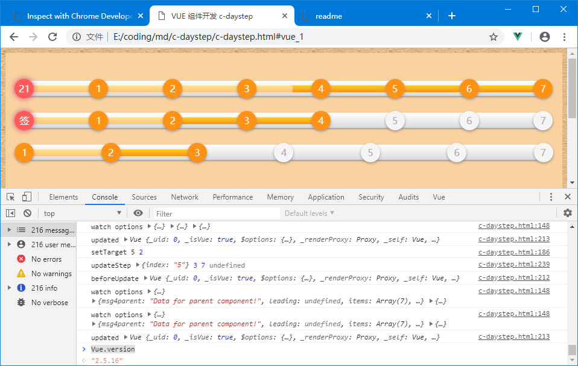
以下是 c-daystep 组件的实现，为让程序结构看起来更清晰，分成 HTML、CSS、JavaScript 三个部分：
<html>
<head>
<meta charset="utf-8">
<title>VUE 组件开发 c-daystep </title>
<meta name="viewport" content="width=device-width, initial-scale=1">
<script src="https://cdn.staticfile.org/vue/2.2.2/vue.min.js"></script>
<style>
body { background: url("assets/vellum.png"); }
.light-style,
.dark-style { background:#f9d29f; padding:2%; }
.dark-style {
background: #222 url("data:image/png;base64,iVBORw0KGgoAAAANSUhEUgAAAAoAAAAKCAMAAAC67D+PAAAAFVBMVEUqKiopKSkoKCgjIyMuLi4kJCQtLS0dJckpAAAAO0lEQVR42iXLAQoAUQhCQSvr/kfe910jHIikElsl5qVFa1iE5f0Pom/CNZdbNM6756lQ41NInMfuFPgAHVEAlGk4lvIAAAAASUVORK5CYII=");
}
.dark-style .day-step {
background:#232323 !important;
background-image: linear-gradient(to bottom, #232323 0,#232323 100%) !important;
box-shadow:0px 3px 5px #272626, 0 1px 0 #ada7a7, 0px -1px 0px #211b1b !important;
}
</style>
</head>
<body>
<div id="app">
<div class="light-style">
<c-daystep :options="daysteps" @update="updateStep"></c-daystep>
<c-daystep :options="daysteps2" @update="updateStep2"></c-daystep>
<c-daystep :options="daysteps3" @update="updateStep3"></c-daystep>
</div>
<div class="dark-style">
<c-daystep :options="daysteps" @update="updateStep"></c-daystep>
<c-daystep :options="daysteps2" @update="updateStep2"></c-daystep>
<c-daystep :options="daysteps3" @update="updateStep3"></c-daystep>
</div>
</div>
</body>
</html>
// <script>
Vue.component('c-daystep', {
data: function () {
console.log("data init", this.options);
return { count: 0 };
},
// props: { options:{type:Object} },
props: ['options'],
watch: {
// options:function(nvalue, ovalue){
// console.log("watch options", nvalue, ovalue, this.options);
// },
options:{
immediate: true,
handler (nvalue, ovalue) {
var opts = this.options;
opts.msg4parent = "Data for parent component!";
console.log("watch options", nvalue, ovalue, opts);
var items = [];
var days = opts.days;
var done = opts.done;
this.options.leading = opts.overShow && opts.leadingZero && done>days? done:this.options.leadingZero;
if( opts.overShow ) done = (done-1) % days + (done>0?1:0);
if( done>days ) done = days;
for(var i = 0; i<days; i++) {
items.push({themes:"stop "+(done>i?"done":"")});
}
this.options.items = items;
var i = opts.leadingZero? 0:1;
var w = done? (100/(days-i)*(done-i)):0;
this.options.barStyle = "width:"+w+"%";
}
}
},
computed:{
options_shadow:{
set: function(nvalue){
console.log("set options", nvalue, this.options);
},
get: function(){
console.log("get options", this);
return this.options;
}
}
},
beforeCreate: function(){ console.log("beforeCreate", this); },
created: function(){ console.log("created", this); },
beforeMount: function(){ console.log("beforeMount", this); },
mounted: function(){ console.log("mounted", this); },
beforeDestroy: function(){ console.log("beforeDestroy", this); },
destroyed: function(){ console.log("destroyed", this); },
methods:{
setTarget: function (event) {
var target = event.currentTarget;
var value = event.currentTarget.dataset.value;
console.log("setTarget", value, this.options.done);
this.target = target;
this.$emit("input", value);
},
updateState: function (event) {
var els=event.currentTarget.getElementsByClassName('stop');
var value = this.target? this.target.dataset.value:0;
// if( value==3 ) this.$destroy();
this.$emit("update", {index:value});
}
},
template:
'<div class="day-step orange shine">'+
' <span class="bar" :style="options.barStyle"></span>'+
' <span class="stop done leading" v-if="options.leadingZero">{{options.leading}}</span>'+
' <span :class="item.themes" v-for="(item,index) in options.items" @click="setTarget" @click.capture="updateState" :data-value="index">{{index+1}}</span>'+
'</div>'
})
var vm = new Vue({
el: '#appc',
data: {
daysteps3: {days:7, done:2},
daysteps2: {days:7, done:8, leadingZero: '签'},
daysteps: {days:7, done:0, overShow:true, leadingZero: '签',}
},
beforeUpdate: function(){ console.log("beforeUpdate", this); },
updated: function(){ console.log("updated", this); },
watch: {
daysteps: function(nvalue, ovalue){
console.log("watch daysteps", nvalue, ovalue);
}
},
methods: {
updateStep: function(res){
var opts = Object.assign({}, this.daysteps);
this.daysteps = opts;
opts.done = (opts.done+1);//%(opts.days+1);
console.log("updateStep", res, opts.done, opts.days, opts);
},
updateStep2: function(res){
var opts = Object.assign({}, this.daysteps2);
this.daysteps2 = opts;
opts.done = (opts.done+1)%(opts.days+1);
console.log("updateStep2", res, opts.done, opts.days, opts);
},
updateStep3: function(res){
if( res.index==3 ) this.$destroy();
var opts = Object.assign({}, this.daysteps3);
this.daysteps3 = opts;
opts.done = (opts.done+1)%(opts.days+1);
console.log("updateStep3", res, opts.done, opts.days, opts);
}
}
})
//</script>
<!-- <style> -->
.day-step {
display:flex;
flex-direction: row;
justify-content: space-between;
position: relative;
background-color: #1a1a1a;
background-image: linear-gradient(to bottom, #ffffff 0,#dadbde 100%);
height: 25px;
padding: 5px;
width: 100%;
margin: 28px 0;
text-align: left;
box-sizing: border-box;
-moz-border-radius: 25px;
-webkit-border-radius: 25px;
border-radius: 25px;
-moz-box-shadow: 0px 2px 3px #a59b9b, 0 1px 0 #ada7a7;
-webkit-box-shadow: 0px 2px 3px #a59b9b, 0 1px 0 #ada7a7;
box-shadow: 0px 2px 3px #a59b9b, 0 1px 0 #ada7a7;
}
.day-step .stop {
cursor:pointer;
border-radius: 25px;
display:inline-block;
width:32px; height:32px;
text-align: center;
line-height: 32px;
z-index: 2;
margin: -8px;
position: relative;
color: #b9a4a4;
background: #f5f5f5;
box-shadow: 0 2px 5px #928686;
}
.day-step .done {
color:white;
background:#fd9215;
animation: done-delay 0.8s steps(2, end);
}
.day-step .leading {
box-shadow: 0 0 10px #c5287a;
background: #ff5959 !important;
}
@-webkit-keyframes done-delay {
0% { background:#f5f5f5; color: #b9a4a4; }
50% { background:#f5f5f5; color: #b9a4a4; }
100% { background:#fd9215; }
}
.day-step .bar {
position: absolute; height: 50%; top:25%; left:-3px;
display: inline-block;
background-color: #777;
-moz-border-radius: 25px;
-webkit-border-radius: 25px;
border-radius: 25px;
-moz-box-shadow: 0 1px 0 rgba(255, 255, 255, .5) inset;
-webkit-box-shadow: 0 1px 0 rgba(255, 255, 255, .5) inset;
box-shadow: 0 1px 0 rgba(255, 255, 255, .5) inset;
-webkit-transition: width .4s ease-in-out;
-moz-transition: width .4s ease-in-out;
-ms-transition: width .4s ease-in-out;
-o-transition: width .4s ease-in-out;
transition: width .4s ease-in-out;
}
.orange .bar {
background-color: #fecf23;
background-image: -webkit-gradient(linear, left top, left bottom, from(#fecf23), to(#fd9215));
background-image: -webkit-linear-gradient(top, #fecf23, #fd9215);
background-image: -moz-linear-gradient(top, #fecf23, #fd9215);
background-image: -ms-linear-gradient(top, #fecf23, #fd9215);
background-image: -o-linear-gradient(top, #fecf23, #fd9215);
background-image: linear-gradient(top, #fecf23, #fd9215);
}
.shine .bar::after {
content: '';
opacity: 0;
position: absolute;
top: 0;
right: 0;
bottom: 0;
left: 0;
background: #fff;
-moz-border-radius: 3px;
-webkit-border-radius: 3px;
border-radius: 3px;
-webkit-animation: animate-shine 2s ease-out infinite;
-moz-animation: animate-shine 2s ease-out infinite;
}
@-webkit-keyframes animate-shine {
0% {opacity: 0; width: 0;}
50% {opacity: .5;}
100% {opacity: 0; width: 95%;}
}
@-moz-keyframes animate-shine {
0% {opacity: 0; width: 0;}
50% {opacity: .5;}
100% {opacity: 0; width: 95%;}
}
.glow .bar {
-moz-box-shadow: 0 5px 5px rgba(255, 255, 255, .7) inset, 0 -5px 5px rgba(255, 255, 255, .7) inset;
-webkit-box-shadow: 0 5px 5px rgba(255, 255, 255, .7) inset, 0 -5px 5px rgba(255, 255, 255, .7) inset;
box-shadow: 0 5px 5px rgba(255, 255, 255, .7) inset, 0 -5px 5px rgba(255, 255, 255, .7) inset;
-webkit-animation: animate-glow 1s ease-out infinite;
-moz-animation: animate-glow 1s ease-out infinite;
}
@-webkit-keyframes animate-glow {
0% { -webkit-box-shadow: 0 5px 5px rgba(255, 255, 255, .7) inset, 0 -5px 5px rgba(255, 255, 255, .7) inset;}
50% { -webkit-box-shadow: 0 5px 5px rgba(255, 255, 255, .3) inset, 0 -5px 5px rgba(255, 255, 255, .3) inset;}
100% { -webkit-box-shadow: 0 5px 5px rgba(255, 255, 255, .7) inset, 0 -5px 5px rgba(255, 255, 255, .7) inset;}
}
@-moz-keyframes animate-glow {
0% { -moz-box-shadow: 0 5px 5px rgba(255, 255, 255, .7) inset, 0 -5px 5px rgba(255, 255, 255, .7) inset;}
50% { -moz-box-shadow: 0 5px 5px rgba(255, 255, 255, .3) inset, 0 -5px 5px rgba(255, 255, 255, .3) inset;}
100% { -moz-box-shadow: 0 5px 5px rgba(255, 255, 255, .7) inset, 0 -5px 5px rgba(255, 255, 255, .7) inset;}
}
<!-- </style> -->
总结
昨天刚好是愚人节，我是没感觉，自此文件 2019 年 3 月 23 日星期六建档，经过将近两个星期的写作，期间工作上偶尔需要花时间跟进，基本大多数时候都在完善过程中。因为从事 IT 职业以来，一直保持有记录的习惯，自己也总在提醒着厚积薄发，业余时间也会不断翻一些有趣的东西。直到最近半个月接触到 GitChat 这个平台，觉得非常合适自己，希望通过这个平台获取前行的动力，也希望自己能给有需要的人贡献出自己的一分力量。
原本，计划着将最近开发的一个 Vue 插件即 c-daystep 的开发心得分享出来，所以在活动内容简介上只提到了三几个要点。另一边是我一开始投入到写作中，就发现想要写的内容太多了，想顾及的方面太广泛了。随着交付时间的临近，越来越感觉这不是厚积薄发的做法啊，原本几千字做完的工作，我花了将近两周时间，几乎写成了半本书，MD文档从零堆到了 229KB，粗一算十多万字有吧，当然其中包括了大量的代码和大量的参考信息。
今天再审一遍稿，把配图上传完就提交 Gitchat，期待一个好的开始。
通过这次全身心的投入，发现在内容组织能力上是有所欠缺的，不像是职业写手，希望前辈们读完后多多指教！
最后感谢表妹不辞辛劳协助修订！
名词及缩写对照
ADT - Abstract Data Type
APNIC - Asia-Pacific Network Information Center
APP - Application
BOM - Browser Object Model
BOM - Byte Order Mark
C/S - Client-Server
CAD - Computer Aided Design
CCITT - Consultative Committee on International Telegraph and Telephone
CIDR - Classless Inter-Domain Routing
CLI - Command Line Interface
CPU - Center Process Unit
CSP - Content Security Policy
CSS - Cascading Style Sheets
CWD - Current Working Directory
DHCP - Dynamic Host Configuration Protocol
DNS - Domain Name System
DOM - Document Object Model
ENIC - Europe Network Information Center
ES6 - ECMAScript 6
GUI - Graphic User Interface
HMR - Hot Module Replacement
HTM - HyperText Markup Language
HTML - Hypher-Text Mark Language
HTT - Hypertext Transfer Protocol
ICANN - Internet Corporation for Assigned Names and Numbers
IDE - Integrated Development Environment
InterNIC- The Internet's Network Information Center
IP - Internet Protocol Address
ISO - International Organization for Standardization
ITU - International Telecommunication Union
LSB - Least Significant Bit
MSB - Most Significant Bit
MSDN - Microsoft Devement Network
NPM - Node.js Package Manager
OOP - Object Oriented Programming
OSI - Open System Interconnection
REPL - Read Eval Print Loop
SFC - Single File Component
SPA - Single Page Application
SSR - Server Side Render
TCP/IP - Transmission Control Protocol/Internet Protocol
UI - User Interface
URI - Uniform Resource Locator
URL - Uniform Resource Identifier
WDS - Webpack dev Server
前端 - Front-End
后端 - Back-End

结束！